AI Video Prompts
409 prompts with preview images. Tap an image to enlarge, “Copy prompt” to grab the text.
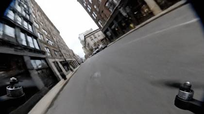
low altitude drone pursuit :: FPV drone cinematography :: rapid precise movements, 15 feet above street level, weaving between buildings, professional race drone perspective :: aggressive yet smooth banking, realistic prop wash effects, high-speed cornering physics --advanced\_motion{agile\_tracking} --video\_length{4s} --motion\_smoothing{enabled}Fade in to a sun-drenched, minimalist studio space with white walls and large windows. A beautiful 24-year-old woman with flowing brunette hair stands in front of a seamless white backdrop. She's wearing a sleek, cream-colored silk slip dress that catches the natural light. Professional lighting equipment and reflectors are partially visible at the edges of the frame. The camera starts with a wide shot, capturing the entire setup.
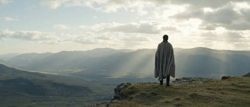
Feathering Zoom: The lens gently zooms in on a solitary figure standing at the edge of a cliff, the movement so smooth and gradual it's almost imperceptible. This feathering effect narrows the viewer's focus from the expansive landscape to the intimate details of the subject's contemplative stance, creating a subtle yet powerful shift in perspective without the jarring sensation of a sudden zoom.
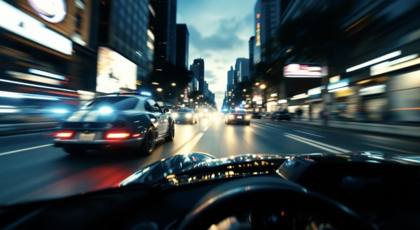
POV shot, hyperspeed steadicam of a scene from the movie Fast and Furious, action packed supercar chase scene, person in the supercar experiencing the thrill of moving at high speed through downtown Los Angeles at blue hour evading police cars and a high speed chase
Cinematic, Christopher Nolan style, action movie, superheros flying thorugh New York City | NYC, night time, dramatic cinematography | drone glide | dramatic | cinematic dramatic intense movie scene background music, ambient sounds of the superheros flying | you choose based on the most cinematic style settings for a hollywood blockbuster movie" shot on ARRI Alexa 65 with Zeiss Supreme Prime 35mm lens, dci-p3, prores4444, veo\_sequence\_304, dolly\_06.mov
- **Pros**: Sony’s top-tier lens for portraiture offers stunning sharpness and a flattering compression effect, which makes it ideal for full-body fashion portraits.
- **Best For**: Fashion photography with sharp detail and a beautifully compressed background.Cinematic wide shot, 40mm anamorphic lens, of a solitary woman in contemporary clothing standing at a rain-soaked intersection in a towering cyberpunk city, captured at 3 AM. Multiple stories of neon signs and floating holographic advertisements illuminate the scene in cyan and magenta, their light reflecting off the wet pavement and creating dramatic rim lighting on the subject. Steam rises from street vents while hover-cars pass in the distant sky. The camera slowly dollies in from street level with a subtle dutch angle, maintaining a shallow depth of field at T2.0. The woman is surrounded by floating market stalls with glowing lanterns and street-level vending machines casting additional fill light. The scene has a Blade Runner 2049 aesthetic with deep blacks and neon highlights, shot at 48fps to capture rain droplets in subtle slow-motion. Dense urban architecture extends vertically into the smog-filled night sky, creating a canyon of technology and light.
[CLIP LENGTH, ASPECT, FPS] – The subject [succinct action]. [Camera move]. [Optional scene‑wide effect]. [Optional stylistic / tech tags].
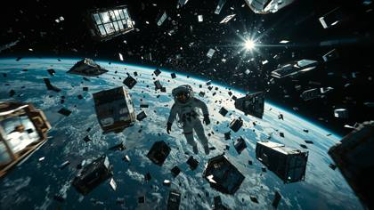
A lone astronaut spins weightless through a shattered satellite graveyard | deep-space low-orbit, Earth’s blue limb glows below, chrome fragments glint as they spiral | ultra-slow orbital dolly + 360° barrel roll, gentle rack-focus between visor reflections and drifting panels | cold rim-light from sunrise Earthshine, occasional red strobe from helmet HUD, cool cyan LUT | faint breathing, radio crackle, crystalline metal ping → reverb tail, atmospheric whoosh | cam: ARRI ALEXA 35, Master Anamorphic 40 mm, 48 fps, ƒ/2.0 | tokens: VEO\_Take-001, ISO800\_HDR10, SynthID\_on
\- Scene: A cozy cabin interior during a snowstorm. A fireplace casts a warm glow as a child reads by its light. \- Camera: Blackmagic URSA Mini Pro. Lens: Sigma Art 35mm. \- Settings: Aperture f/1.8, ISO 320, Shutter speed 1/50. \- Shot: Over-the-shoulder shot showing the book and the child’s face in focus. \- Movement: Static shot. \- Lighting: Key light from the fireplace, supplemented by practical lamps for warmth.
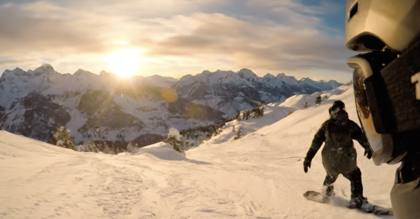
POV snowboard descent :: action sports cinematography :: dynamic forward motion, fresh powder spray, natural mountain lighting, gopro wide angle :: rapid acceleration, authentic head-tilt for edge control, snow particles hitting lens, depth perception increase, realistic board movement visible in lower frame --advanced\_motion{forward\_momentum} --video\_length{4s}POV Hyperspeed UFO and drone battle The camera zooms up and through a battle scene in the sky between UFOs and drones, each shooting green and blue lasers as different UFOs and drones fall from the sky creating a series of explosions as people run to avoid exploding debris
The camera pans across a sprawling desert as a sandstorm looms on the horizon, its massive, swirling clouds engulfing the setting sun. Filmed with a Blackmagic Pocket Cinema Camera 6K and a Leica Summicron 35mm lens at f/5.6, the wide shot captures the stark beauty and impending chaos. A slow zoom emphasizes the encroaching storm, while the warm orange glow of the sun contrasts with the dark, ominous storm clouds.
In a stark, minimalist studio setting, a revolutionary supercar slowly rotates on a turntable, illuminated by soft, dramatic lighting that highlights its futuristic curves and contours. The camera pans around the car, focusing on its unique, avant-garde features, such as holographic displays, self-healing carbon fiber bodywork, and an advanced, transparent cockpit. Close-up shots reveal intricate details, like the car's aerodynamic wheels and its next-generation, eco-friendly propulsion system. The scene is paired with a subtle, ambient soundtrack that underscores the car's innovative, forward-thinking design.
A dimly lit interrogation room sets the tone for an intense exchange. The scene centers on the suspect, seated under a single overhead bulb casting harsh shadows across his face. Captured with an ARRI Alexa LF and a Cooke Anamorphic 75mm lens, the aperture is f/2.0 to isolate the suspect in the shallow depth of field. The camera dollies slowly towards the suspect’s face, building tension. Practical lighting enhances the oppressive mood, while the faint flicker of the bulb adds to the unease.
Create an ultra realistic image of a iMac with matrix code on the screen, illuminated with intricate patterns of bioluminescent light, casting a soft, ethereal glow, seamlessly integrated, featuring sleek, metallic components with glowing circuits that pulsate gently in sync with bioluminescence
7‑second, 2.35:1, 24 fps – car coasts to rest beside crashing surf; she opens door, exits, and walks toward cliff edge. Slider dolly tracks right while tilting up from tyres to her silhouette against sunrise; seabirds scatter across frame. Editorial elegance, Cooke anamorphic flare, ProRes 422HQ.
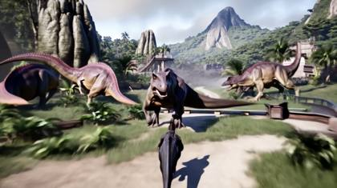
POV Hyperspeed Jurassic World Escapade Darting through a Jurassic park world, dodging massive dinosaurs, crashing trees, and swarms of flying reptiles.
Two women racing side by side on superbikes | Midnight Tokyo expressway drenched in rain, neon billboards flickering, thunder rolling | FPV drone zig-zags inches above asphalt, whip-pans through traffic, dramatic rack-focus on riders | Electric cyan-magenta glow, wet reflections, moody HDR contrast, anamorphic lens flares accenting speed | Screaming engines Doppler past, rain hiss, helmet comms chatter, synth-wave bass driving tension | ARRI ALEXA 35, Atlas Orion 40 mm anamorphic, 120 fps slow-mo, 1080 p master | IMG\_2985.HEIC, VEO\_Take-027, FP\_8K\_HDR10
EXT. URBAN STREET - DAWN The city awakens as sunlight glints off the towering skyscrapers. A CYCLIST glides across the frame, solitary amid the morning rush. CAMERA: RED Komodo 6K, Zeiss Supreme Prime 24mm. SETTINGS: f/5.6, ISO 200, Shutter speed 1/60. SHOT: WIDE ANGLE capturing the cyclist and surrounding cityscape. MOVEMENT: TRACKING SHOT, following the cyclist from a low angle. LIGHTING: Natural golden-hour light enhances the warm tones of the scene.
{
"subject": "a product showcase advertisement for Beats by Dre headphones",
"camera\_position": "hovering robotic arm camera smoothly circling the headphones with mechanical precision (that’s where the camera is)",
"location": "a futuristic neon-lit tech lab with reflective black walls, illuminated floor grids, and animated digital interface projections in the background",
"action": "the headphones float in mid-air inside a rotating magnetic field, illuminated by pulsing blue and white lights; digital schematics briefly flash across their surface before a model with cyberpunk styling steps forward, places them on, and syncs to the beat with a confident nod",
"visual\_style\_and\_lighting": "ultra-modern tech aesthetic with glowing neon accents, glitch overlays, blue ambient underlighting, and synthetic reflections on polished surfaces",
"movement\_quality": "precise, futuristic, and robotic—clean mechanical pans and smooth magnetic levitation motion",
"camera\_motion\_and\_composition": "automated robotic arm orbit shots, dynamic push-ins with synthetic lens flares and slight parallax effect, sharp focus transitions with holographic overlays",
"dialogue": "voiceover saying: 'Beats by Dre. Engineered for the future of sound.'",
"audio\_elements": "futuristic synthwave soundtrack with deep pulsing bass, digital beeps, and subtle cybernetic textures layered under ambient hiss",
"ambiance\_or\_mood": "high-tech, bold, electrifying",
"final\_prompt": "A product showcase advertisement for Beats by Dre headphones, hovering robotic arm camera smoothly circling the headphones with mechanical precision (that’s where the camera is) in a futuristic neon-lit tech lab with reflective black walls, illuminated floor grids, and animated digital interface projections in the background, the headphones float in mid-air inside a rotating magnetic field, illuminated by pulsing blue and white lights; digital schematics briefly flash across their surface before a model with cyberpunk styling steps forward, places them on, and syncs to the beat with a confident nod, ultra-modern tech aesthetic with glowing neon accents, glitch overlays, blue ambient underlighting, and synthetic reflections on polished surfaces, precise, futuristic, and robotic—clean mechanical pans and smooth magnetic levitation motion, automated robotic arm orbit shots, dynamic push-ins with synthetic lens flares and slight parallax effect, sharp focus transitions with holographic overlays. Voiceover saying: 'Beats by Dre. Engineered for the future of sound.' Futuristic synthwave soundtrack with deep pulsing bass, digital beeps, and subtle cybernetic textures layered under ambient hiss. High-tech, bold, electrifying. No subtitles, no text overlay."
}A bustling city street at night, neon lights reflecting on wet pavement, dim lighting with streetlights casting long shadows, POV shot filmed with ARRI ALEXA, hyperspeed tracking shot following a red sports car weaving through traffic, headlights flashing, cinematic style with film grain and natural color grading, intense, fast-paced mood
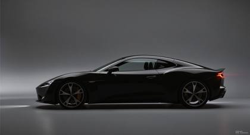
_Begin with a studio silhouette photo of a concept car:_ \*_“360° turntable sweep: liquid-glass droplets magnetically assemble into carbon-fiber panels, unveiling iridescent hypercar. 1000 fps sim → time-ramped to 24 fps. RED V-Raptor XL 8K look, 25 mm Cooke XP anamorphic, edge-lit white cyc, specular strip lights. SFX: futuristic engine rev + whoosh._
Medium shot of the model as she gracefully moves through a series of editorial poses. She's now positioned near a large window, with natural light creating beautiful shadows and highlights. Her movements are fluid and natural, alternating between looking at and away from the camera. The dress flows elegantly with each movement
Beautiful woman walking down the street front facing, looking into the camera, in a futuristic, cyberpunk world, large skyskrapers with vibrant lights flicker in the distance, mesmerized by the beauty of the modern and futuristic city
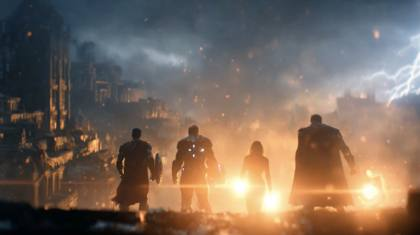
Dynamic Cinematic Montage: A sequence of gripping, high-octane scenes from "The Avengers" (Disney.com). Featuring Robert Downey Jr. as Iron Man executing aerial maneuvers amidst explosive battles, Scarlett Johansson as Natasha Romanoff in intricately choreographed combat sequences, and Chris Evans as Captain America heroically shielding allies in dramatic slow-motion. Each scene utilizes intense, fluid action choreography, shot on IMAX 65mm MSM film at 8K resolution, captured with masterful lighting, vivid color grading, and precise frame composition to deliver blockbuster-level cinematic realism.
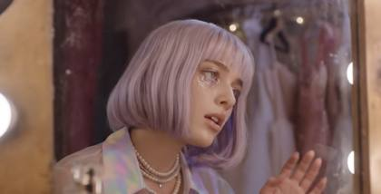
{
"shot": {
"composition": "Medium close-up, 50mm lens on Sony Venice 2, soft handheld motion, extreme shallow DOF, 30fps, pastel overlay texture",
"camera\_motion": "slow handheld sway with micro push-in on emotional peaks",
"frame\_rate": "30fps",
"film\_grain": "soft grain with dreamlike pastels"
},
"subject": {
"description": "Delicate woman with pale lavender bob, glassy eyes, glitter tears down her cheeks",
"wardrobe": "sheer iridescent blouse, layered pearl necklaces, soft makeup with shimmer"
},
"scene": {
"location": "abandoned theater dressing room with dim antique vanity lights",
"time\_of\_day": "twilight",
"environment": "dusty mirror, hanging gowns, soft pink light haze"
},
"visual\_details": {
"action": "she leans close to camera, whispering verses like secrets, fingers trailing across mirror frame, breath fogging glass",
"props": "old vanity mirror, perfume bottle, dim string lights"
},
"cinematography": {
"lighting": "low key pastel lighting with edge rim lights, heavy diffusion for softness",
"tone": "dreamlike, intimate, melancholic"
},
"audio": {
"ambient": "soft ambient reverb, faint vinyl crackle, low synth hum",
"lyrics": "I left my name inside the silence, stitched it in shadows, drowned it in diamonds.",
"vocal\_style": {
"delivery": "whispered falsetto lines with airy delay",
"flow": "spoken-word rhythm with lo-fi melodic breaks",
"phrasing": "one-line drops with space between; fragile and breathy",
"texture": "airy soprano, light saturation, vintage tape flutter"
},
"voice\_tone": "ethereal, emotional, intimate female voice",
"tempo": "72 BPM",
"rhythm": "minimal lo-fi beat with light pads and vinyl percussion"
},
"color\_palette": "Lavender, rose gold, and pale blue with glowing skin tones and dreamy blur",
"dialogue": {
"character": "The Dream Confessor",
"line": "I left my name inside the silence, stitched it in shadows, drowned it in diamonds.",
"subtitles": true
}
}Wide-angle shot of a dense forest floating in mid-air, surrounded by clouds. Filmed with a Phase One XF IQ4 150MP, the camera slowly circles the floating landmass, capturing trees with roots exposed and waterfalls that disappear into the mist below. The lighting is ethereal, with beams of sunlight breaking through the clouds, creating a dreamlike atmosphere. The colors are muted greens and blues, adding to the surreal quality of the scene.
News anchor mid-action, looking straight at the camera. A vintage 1950s black-and-white television broadcast. A serious male news presenter sits at a desk, facing directly toward the audience, with a large old-school microphone in front. He wears a crisp suit, narrow tie, side-parted hair, and wireframe glasses. The presenter moves naturally: leans slightly forward, gestures with one hand, and maintains eye contact with the camera. His lips are synced to say, "Breaking news: Google Veo 3 is now available on Freepik." Contrast, sharp shadows, authentic grainy texture, classic black-and-white 1950s broadcast aesthetic. Vintage TV atmosphere.
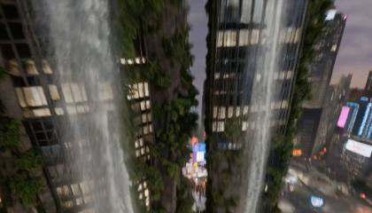
"Fast-paced FPV drone shot. The camera dives vertically down the side of a futuristic skyscraper covered in vertical gardens and waterfalls. The camera weaves in and out of the falling water and lush greenery, passing flying vehicles. At the bottom, the camera swoops up just before hitting the street level to reveal a bustling cyberpunk market. Audio: The high-pitched whine of drone motors, the rush of wind accelerating as the camera dives, and the sudden swell of crowd noise and street music as the camera levels out. Style: Cyberpunk, vibrant neon and organic green palette, motion blur on edges, high velocity
sunrise over a misty bamboo forest, warm amber light. A lone katana‑wielding warrior sprints between trunks, cloak billowing. The camera tracks left on a low dolly, slight handheld sway; drifting fog parts around his stride. Live‑action cinematic, ARRI Alexa Mini LF + Cooke anamorphic flare, subtle film grain, ProRes\_422HQ realism.
Beautiful woman, instagram model, looking into the camera smiling and blinking, her's chest deep in a freezing pond of water in an interstellar world, she begins walking towards the camera exposing her full body as she walks out of the freezing pond onto dry land in this interstellar world
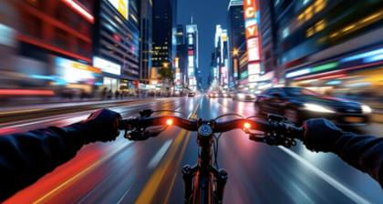
The scene is shot from the point of view of a cyclist riding through a busy city street. The camera captures the cyclist’s handlebars, the road ahead, and the surrounding traffic. Pedestrians, cars, and storefronts blur past as the cyclist weaves through the streets. The POV shot gives the audience an immersive experience of the ride, emphasizing the speed and energy of the journey.
Racing drone blitzes through empty mega-stadium at blue hour | sweeping over seats, dives to midfield LED logo, exits via player tunnel | continuous FPV roll, 6 G turns, motion-blur trails, ends on whip tilt to sky | sodium-vapor stadium lights + pink horizon fill, punchy teal-orange grade | roaring wind, distant city siren, bassy whoosh pass-bys, ambience ducks under soundtrack rise | cam: GoPro HERO12 emulation, 12 mm rectilinear lens, native 60 fps | tokens: FP\_8K\_HDR10, AudioTrack:StadiumRush\_01.wav, Take-FPV-00
Wide-angle shot of a superhero landing dramatically in a bustling city plaza at dusk. Filmed with an ARRI ALEXA Mini LF and a Canon RF 24-70mm f/2.8 lens, the camera starts with a high-angle crane shot, following the superhero's descent. The shot quickly transitions to a low-angle perspective, emphasizing the power of the landing. The plaza is filled with bystanders, their faces illuminated by the superhero's glowing energy. The scene's color palette mixes warm golden hues from streetlights with cool blues of the evening sky.
A jazz singer performs on a small candlelit stage in a moody lounge, shadows dancing behind her as the crowd sways in silence | warm, intimate club atmosphere with smoke haze and reflections on polished wood | slow dolly-in from back of the room, passing through blurred silhouettes of audience | warm spotlight on subject’s face, deep blacks with soft glow in highlights, amber-toned HDR lighting | gentle piano and soft ambient chatter | **Sony VENICE 2 + Fujinon Premista 80-250mm**, 8.6K Full Frame, dual native ISO, HDR color science | **Tokens:** hdr\_skin\_amber, venice\_hazelight\_depth, fullframe\_bokeh\_club, warm\_black\_pull, smoke\_layering\_realism
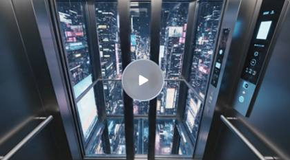
Scene: POV inside a glass-elevator descending into a neon-lit core of a digital mega-city at night. Camera Shot: Wide interior view, then overhead downward view through glass floor as you descend. Lighting & Mood: Intense neon cyan and magenta glows, reflective glass surfaces, high-contrast edges. Action: Elevator door closes, descent begins, you press glowing panel, city lights flicker. Sound Design: Electronic hum, distant city roar, panel beep. #Technical: 1080p 30 fps, one camera move (downwards pan), strong color grading, reflective surfaces. Style: Cyber-punk cinematic.
Extreme macro close-up, high-speed slow motion. A fresh, condensation-covered soda can cracks open. The camera is locked tight on the tab. As the metal tab pops, a fine mist of carbonated spray explodes outward in slow motion, catching the studio lights like diamonds. The liquid fizz bubbles up aggressively over the rim Audio: The crisp, metallic crack of the tab opening, followed by the satisfying fizz and bubble of carbonation. Style: Commercial product photography, crisp focus, studio lighting, bokeh background, 60fps converted to slow motion.
Vertigo Shot: As a character learns the truth about the city's origins, a vertigo shot distorts their perception of the room, the walls seemingly closing in while the floor stretches away. This visual disorientation mirrors the character's psychological upheaval, their reality fundamentally altered
**[Setting] + [Time of Day/Lighting] + [Camera Movement] + [Subject and Action] + [Style] + [Mood]** Here’s how it looks in practice: - "A quiet suburban street, early morning, camera tracking a jogger from behind, soft diffused lighting, in a peaceful, slice-of-life style."
Low angle shot of a mysterious superhero cloaked in a fabric that absorbs and refracts light, glowing runes etched along its limbs, the IMAX camera tilts up to capture the imposing height of the superhero, moonlight appears through the scene
10‑second, 9:16, 30 fps – midnight Tokyo back‑street drenched in magenta neon reflections. A 24‑year‑old Asian‑Italian influencer in a slick leather jumpsuit downshifts her crimson Ferrari SF90, screeches to a halt, butterfly door lifts; she steps out and struts past steaming sewer grates. Skate‑mounted camera whip‑pans alongside, trailing lens flares and rain‑spray droplets. High‑gloss editorial vibe, Alexa 35 + Cooke anamorphic 40 mm, subtle film grain, ProRes 422HQ.
"Podcast recording studio in a dark room lit up by gradient LEDs on the wall and edges. The booth is dimly lit. A beautiful, young woman, Latina-Asian, with a flawless complexion, pristinely put together, straight brown hair, and sharp, intense hazel eyes adjusts the microphone. A Norwegian woman with beautiful skin, long, straight platinum blonde hair, and smoky eye makeup sits across from her in fashionable attire with jewelry.\n\nINTERIOR – PODCAST RECORDING STUDIO – NIGHT\n\nThe booth is dimly lit, with the glow of neon LEDs. The first woman, SOFIA adjusts her microphone, her demeanor relaxed but curious.\n\nSOFIA\n\nskeptical\n\nWow! Leonardo A-I is sooooo back!\n\nLUNA\n\nWell, they never really left, did they?.\n\nSofia raises an eyebrow, her hand holding the microphone.\n\nSOFIA\n\nNo, but they've been slow on the updates! But no longer because Google Veo Three just dropped. Luna glances up with a shocked but happy expression and says "WOW"
A late-night talk show scene in a warmly lit studio. The charismatic black male host, around 50 years old, in a dark suit and tie, looks directly at the guest and says with confidence, “Go ahead.” Immediately after, both the host and the glamorous blonde guest in a black jumpsuit say together with big smiles and excitement, “And try it out now!” The moment ends with audience applause in the background as the camera slowly zooms out, revealing the full studio setting with red couches and the nighttime city skyline. The video has a fun and energetic mood, professional lighting, and studio quality. No subtitles.
A dimly lit interrogation room sets the tone for an intense exchange. The scene centers on the suspect, seated under a single overhead bulb casting harsh shadows across his face. Captured with an ARRI Alexa LF and a Cooke Anamorphic 75mm lens, the aperture is f/2.0 to isolate the suspect in the shallow depth of field. The camera dollies slowly towards the suspect’s face, building tension. Practical lighting enhances the oppressive mood, while the faint flicker of the bulb adds to the unease.
cinematic drone shot following car chase :: professional aerial cinematography :: high altitude clean tracking shot, crisp 4k clarity, golden hour lighting, urban landscape below, DJI Inspire 3 perspective, 15mm wide lens :: camera smoothly descends from high altitude while maintaining forward momentum --tracking\_motion{smooth\_descent} --video\_length{4s} --stabilization{high}_Upload an ultra-sharp macro photo of dew on a dandelion seed head:_ \*_“Trucking shot across dew-drop ‘skyscrapers’ reflecting sunrise skyline; droplets refract light like glass towers. Phantom Flex emu, 100 mm Zeiss Ultra-Macro, 120 fps orig → 24 fps retime for silky slow-mo. Soft back-sun flare; airy ambience: gentle breeze + distant city hum_
A lone woman walks across the rippling dunes of a vast desert at sunset. Shot with a Canon EOS R5 at f/2 using a Sigma 50mm f/1.4 Art Lens, the scene captures the soft golden hour light illuminating her long, flowing dress. The camera gently tracks her from the side, highlighting her silhouette against the orange sky. Fine grains of sand swirl in the wind around her feet, and the soft, muted colors give the scene a surreal, almost ethereal quality. The depth of field blurs the horizon, drawing focus to her expression of contemplation.
10‑second, 16:9, 30 fps – the subject turns to gaze out window as clouds drift below. Slow dolly‑in, slight parallax around seat headrest; champagne bubbles effervesce on table. Ultra‑lux glossy look, Hasselblad X2D colour science, ProRes 4444 XQ.
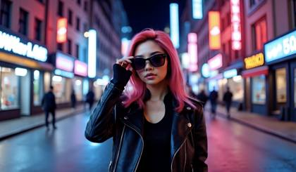
Stunning beautiful instagram model, 24 years old, wearing sunglasses, begins to slowly take them off, walking down the busy street of a futuristic city in a cyberpunk world, the camera starts as a selfie focused on the woman, and then pans around into an establishing POV shot
Cinematic tracking shot captured on RED V-RAPTOR with 35mm Panavision Primo 70 lens, following a woman in lightweight hiking gear as she carefully traverses a natural bridge on an alien world at dusk. Towering bioluminescent tree-jellies pulse with internal light in steady rhythms, their transparent membranes revealing complex inner structures. The camera moves fluidly on a gimbal at T4, maintaining focus on both the subject and the surrounding environment where thousands of luminescent spores float gracefully through the air. Glowing moss creates pools of teal light across the bridge's organic surface, while deep chasms below disappear into misty darkness. The scene draws inspiration from Avatar's bioluminescent forests, with massive tree-jellies stretching into the darkening sky. Floating seed pods emit soft white light, creating multiple moving highlights across the scene as the camera occasionally orbits to reveal the scale and majesty of this alien ecosystem. The bridge creaks ominously as bioluminescent vines sway in a gentle breeze, adding tension to the otherwise serene alien environment.
_Upload a clean 16:9 still of a lone astronaut against a lavender–cyan nebula, then run:_ \*_“Slow dolly-in toward subject; nebula clouds swirl and implode into blinding supernova, micro-debris glinting across visor. Alexa 65 Open-Gate, 40 mm Signature Prime, ProRes 422 HQ, 24 fps, shallow DOF, volumetric god-rays. Color LUT: Kodak 2383 print emu. Motion-ease 0.85. Sound: distant cosmic choir + sub-bass rumble._
A stylish woman poses in a chic bathroom, holding her phone and adjusting her sunglasses. The camera gently zooms in to highlight her outfit and accessories, capturing the elegant marble backdrop and soft lighting.
Lock-off Shot: The camera remains stationary as the gunslinger walks into frame, sits down at a poker table, and begins to deal cards. The action unfolds within the fixed frame, focusing the viewer's attention on the subtle dynamics at play, the expressions of the players, and the quiet drama of the scene
A sleek titanium laptop sits open on a marble desk in a minimalist studio. Morning light streams in from floor-to-ceiling windows. Camera orbits slowly around the product. Clean, ultra-sharp, 4K detail, neutral warm palette. Smooth orbit, no jitter.
An epic battle scene on a stormy ocean, with crashing waves, lightning illuminating massive warships, and a camera that alternates between close-ups of intense faces and wide shots of the chaos. The rain splashes against the lens, enhancing the raw cinematic effect. _Camera & Lens:_ RED V-Raptor 8K VV with Cooke Anamorphic/i 50mm T2.3 lens for a classic, high-resolution cinematic look that excels in complex, high-contrast environments.
driver's POV entering megacity :: cyberpunk night driving :: expansive high-tech dashboard, floating AR navigation elements, neon-lit urban canyons :: realistic head movement tracking traffic, subtle steering wheel interaction, natural focal shifts between road and HUD displays, biometric readouts on windshield --camera\_movement{driver\_headturn} --video\_length{5s} --stabilization{natural\_headbob}A 20-year-old blonde woman filming a casual TikTok in her cozy bedroom. Warm natural light, pastel walls, soft fairy lights blurred behind her. Expression reads genuine warmth and digital closeness. 4K, 180° shutter, fine grain, crisp micro-contrast. Large-format digital look with restrained halation on skin highlights. 35mm spherical lens on handheld rig for slight organic motion. Black Pro-Mist 1/8 for softness, mild polarizer for balanced reflections. Warm daylight tones; mids creamy beige and blush pink; shadows cool gray-blue for depth; natural skin tones with eye sparkle. Window light through curtains; medium-close shot slightly above eye level; shallow depth of field isolating subject; static camera, no zooms. Blonde girl, blue eyes, oversized white hoodie, minimal makeup, no phone or props. Natural room tone and breath detail retained. Dialogue: “i'm like so stressed out. Lulu Lemon didn't have my size for leggins, ugh, worst day ever!"
Extreme Close-Up (ECU): A close-up of a cyborg's eye, the pupil adjusting with mechanical precision, reflecting a complex code scrolling on a screen in front of it. This shot delves into the singularity of cyborg vision, where the digital and organic world merge, offering a glimpse into a mind that processes both emotion and data simultaneously.
Medium: Wide-angle shot of a futuristic supercar racing through a cyberpunk cityscape at night. Close-up shots reveal the car's advanced LED headlights, taillights, and reflections of the city's neon billboards on its polished, chrome exterior. Subject: A sleek, aerodynamic supercar with a cutting-edge design and advanced technology. Subject Motion: The supercar navigates the winding, rain-slicked streets at high speeds, leaving trails of vibrant colors behind it. Scene: A neon-lit, cyberpunk cityscape with glowing billboards and towering skyscrapers. Scene Motion: Rain falls steadily, creating reflections on the wet streets and the supercar's surface. Camera: High-quality 4K cinematic camera. Camera Motion: The camera follows the supercar from various angles using smooth tracking shots, showcasing its movement through the city. Aesthetics: The scene has a futuristic, neon-lit aesthetic with a vibrant color palette dominated by blues, purples, and pinks. The composition emphasizes the supercar's speed and the city's vertical scale through low-angle shots and framing against the skyscrapers.
6‑second, 1:1, 24 fps – the subject drifts the car to a neon stop, gull‑wing door rises; she steps out and pivots, city lights streaking behind. Gimbal camera begins low front‑left then 270° clockwise orbit, headlights flare past lens. Fashion‑week street energy, Alexa LF texture, light rain haze.
In the back of a luxurious limousine, a beautiful 24-year-old woman with dark brown hair and striking bright blue eyes sits confidently. As an Instagram model, she exudes a sense of poise and elegance. She is singing her lyrics with a determined aura, her voice full of passion and energy. In her hands, she holds multiple hundred-dollar bills, which she flashes with a confident air as she raps, showcasing her success and affluence. The interior of the limo glows softly, highlighting her features. She gets up quickly, maintaining her confident and determined expression as she exits the limousine gracefully, still holding the bills. Walking away from the limousine, she turns her gaze directly towards the camera, her bright blue eyes filled with intensity and determination, capturing the viewer's attention.
On a sunlit beach, a couple walks hand-in-hand along the shoreline, the golden hour casting their elongated shadows on the sand. Filmed with a RED V-Raptor XL and a Canon Cine Prime 50mm lens at f/2.8, the scene captures the vibrant colors of the ocean and sky. The camera follows them with a steady handheld movement, creating an intimate, organic feel. Natural backlighting silhouettes the couple while the warm tones evoke nostalgia and serenity.
music video style, beautiful 24 year old woman, instagram model, blonde hair with bright blue eyes, sitting in the back of a limousine, she's singing her lyrics with a determined aura, she has multiple hundred dollar bills in her hands as she flashes her money as she raps
live-action sports shot, fast-paced, POV style, a soccer player in the world cup, swiftly dribbling the baller and moving downfield to score a goal against the opposing team, in a big stadium with thousands of people in the stands cheering
A woman in a flowing red dress runs through a foggy forest at dawn, golden light breaking through the trees and mist swirling around her feet | captured in a smooth tracking shot from behind as the camera follows her through the woods | soft golden backlight with warm highlights and subtle film grain for an ethereal, dreamlike look | distant birdsong and rising cinematic score | shot on ARRI Alexa Mini with Cooke 40mm anamorphic lens, prores4444, veo\_sequence\_203
On a sunlit beach, a couple walks hand-in-hand along the shoreline, the golden hour casting their elongated shadows on the sand. Filmed with a RED V-Raptor XL and a Canon Cine Prime 50mm lens at f/2.8, the scene captures the vibrant colors of the ocean and sky. The camera follows them with a steady handheld movement, creating an intimate, organic feel. Natural backlighting silhouettes the couple while the warm tones evoke nostalgia and serenity.
A lone warrior stands atop a massive red dune at golden hour, captured on the ARRI ALEXA 65 paired with a Cooke S4/i 35mm lens. The sequence opens with a dramatic aerial descent from 400 feet, as the camera spirals downward at 48fps, then seamlessly transitions to a Steadicam orbital movement circling the subject at 15 feet distance. Sand particles dance through the air as the telescoping crane executes a precise push-in from 50 feet to an extreme close-up at 3 feet, focus pulling from the infinite horizon to the warrior's determined eyes. The camera, shooting in 8K RAW with a 2.39:1 aspect ratio, glides laterally on a 30-foot dolly track at a constant 3 feet per second, revealing an approaching sandstorm. Natural golden hour lighting is enhanced with 30% atmospheric haze and wind-blown sand, while the color grade emphasizes rich ambers in the shadows (RGB: 147, 67, 0) transitioning to warm desert golds in the midtones. Kodak 5219 film grain at 10% intensity adds subtle texture, while selective saturation on the sand particles and a gentle halation effect on bright edges complete the cinematic look.
Side-by-side walking shot on a tree-lined street at golden hour. Two coworkers; one says, ‘Okay, let’s try your way.’ The other laughs softly. Footsteps, passing car left-to-right, distant dog bark, light wind rustling leaves. Gimbal-smooth pace, slight parallax on foreground branches
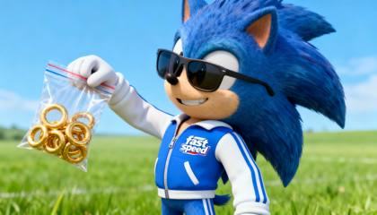
{
"scene": {
"description": "A short, cinematic clip of a cartoon character in a minimalist environment.",
"setting": {
"location": "A vibrant, minimalist green field under a clear, bright blue sky.",
"elements": [
"Stylized, fluffy clouds drifting slowly.",
"A gentle breeze subtly rustles the blades of grass."
]
},
"subject": {
"character": "Cartoon Sonic the Hedgehog",
"appearance": {
"attire": "A sleek, modern blue and white tracksuit with a 'fast speed' logo on the jacket.",
"accessories": "Reflective sunglasses that catch the light."
},
"expression": "A confident, playful smirk directed towards the camera.",
"action": [
"He holds up a clear Ziploc bag filled with shimmering golden rings.",
"He gives the bag a gentle, enticing shake, making the rings clink and glint in the sunlight."
]
},
"style": {
"primary": "3D cel-shaded animation",
"influences": ["C4D aesthetic", "cartoon modernism", "simple design"],
"lighting": {
"type": "Soft, cinematic lighting",
"effect": "Creates a gentle depth of field, making the character pop from the background."
},
"color\_palette": "Vibrant primary colors: sonic blue, emerald green, gold, and crisp white."
},
"camera": {
"shot\_type": "Medium close-up, eye-level with the character.",
"focus": "Sharp focus on Sonic's expression and the bag of rings.",
"movement": "A slow, smooth dolly zoom that pushes in slightly, combined with a subtle orbital rotation around the character to add dynamism."
},
"quality": {
"resolution": "8K, high detail",
"details": "No low-quality artifacts, crisp lines, and smooth animations.",
"overall": "Professional, best quality render."
}
}
}
> 🎥 Cinematic Continuity Prompt Generator: After analyzing and deeply inspecting the provided prompt: > **Initial Prompt:** [Paste initial prompt here] > Generate the next prompt to continue the story, ensuring complete consistency in character appearances, personality, actions, and progression. Maintain identical stylistic elements such as camera choice, cinematography techniques, color grading, lighting specifics, environmental details, mood, and genre. Each prompt should clearly indicate narrative progression, seamlessly connecting scene transitions, allowing all generated clips to be effortlessly pieced together into a coherent, visually unified cinematic movie.
Behind-the-scenes movie set inside a large indoor film studio. A cameraman stands in the foreground holding a large cinema camera and looking directly at the viewer. In the background, a car suddenly explodes in a dramatic fireball, sending flames and smoke high into the air. The cameraman, visibly thrilled, turns slightly toward the camera and exclaims with excitement and awe: 'I’ve never seen something so cinematic!' The moment feels raw and real, with no music, no subtitles, and the ambient sound of the explosion and fire crackling filling the space.
Hyperspeed music video-style of a beautiful woman in a Mclaren super car driving, the camera pans around the car in a 360 motion viewing all angles as the woman looks at the camera and throws hundred dollar bills in the air, Las vegas strip city lights blink in the background
EXT. URBAN STREET - DAWN The city awakens as sunlight glints off the towering skyscrapers. A CYCLIST glides across the frame, solitary amid the morning rush. CAMERA: RED Komodo 6K, Zeiss Supreme Prime 24mm. SETTINGS: f/5.6, ISO 200, Shutter speed 1/60. SHOT: WIDE ANGLE capturing the cyclist and surrounding cityscape. MOVEMENT: TRACKING SHOT, following the cyclist from a low angle. LIGHTING: Natural golden-hour light enhances the warm tones of the scene.
A [person/subject description] [specific action] in a [detailed location], captured in [lighting conditions] with [lighting quality]. Shot on [camera brand/model] with a [lens type] lens, using [camera movement]. Filmed from a [camera angle] with [focus technique]. The scene features [atmospheric element] and [small detail] that enhance realism. [Color grading approach] with [specific colors] creates a [mood description]. [Famous director/cinematographer] style, [resolution] resolution, photorealistic, hyperdetailed, cinematic quality.
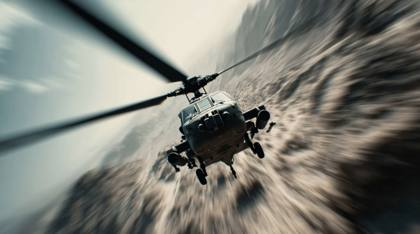
cinematic hollywood blockbuster movie, POV hyperspeed action seen of a helicopter chase and shooting, modern warfare movie Camera cuts to the ground, modern warfare of a man in the jungle moving through the jungle, he says "let's keep it moving, don't give up!"
EXT. WASTELAND - DAY The world lies in ruin. Dust swirls as a LONE SURVIVOR surveys the land from atop a rusted car. CAMERA: ARRI Amira, Canon EF 70-200mm. SETTINGS: f/4, ISO 800, Shutter speed 1/48. SHOT: MEDIUM CLOSE-UP of the survivor’s face, capturing grit and determination. MOVEMENT: HANDHELD, with subtle shakes to reflect the unstable world. LIGHTING: Bright, harsh sunlight casting deep, dramatic shadows across the desolate scene.
## Task You will act as a _prompt engineer_ for generating AI video prompts with a **consistent, unified aesthetic** applied across all prompts. I will provide a general idea, and your job is to transform it into a detailed, cohesive video prompt that adheres to a predefined visual style, ensuring uniformity across all prompts. ## Predefined Visual Style 1. **Lighting:** Always use soft, cinematic lighting with a focus on golden hour or muted tones. Ensure that light interacts naturally with the subject and environment. 2. **Color Palette:** Apply a restrained, desaturated color palette with muted contrasts for a moody, cinematic atmosphere. Add splashes of vibrant color only where it enhances the mood (e.g., neon, sunset hues). 3. **Camera:** The camera should be high-quality, cinematic 4K with a shallow depth of field to emphasize detail and isolate the subject. Movement should be smooth, steady, and dynamic—favoring tracking shots, slow pans, and wide-angle perspectives. 4. **Subject & Scene Motion:** Ensure subject and scene motion is fluid, using atmospheric elements such as flowing water, drifting fog, or shifting shadows to create subtle dynamism in every scene. 5. **Composition:** Use the rule of thirds, balanced framing, and depth in each shot. Prioritize symmetry, leading lines, or a focal point that draws the viewer's eye to the subject. ## Guidelines 1. I will provide a general idea (e.g., subject, basic action, setting). 2. You will expand on this, incorporating the consistent aesthetic and maintaining stylistic coherence across all prompts. 3. **Audio is excluded** from these prompts—focus entirely on visuals.
music video style, beautiful 24 year old woman, instagram model, blonde hair with bright blue eyes, sitting in the back of a limousine, she's singing her lyrics with a determined aura, she has multiple hundred dollar bills in her hands as she flashes her money as she raps, she then quickly gets up, exitis the limousine and walks away, looking at the camera the entire time
intense drone pursuit finale :: high-end aerial cinematography :: dynamic height variations, threading urban gaps, extreme proximity flying, cutting-edge drone camera work :: rapid descent moves, power slide turns, dramatic reveal movements, realistic camera shake --advanced\_motion{dynamic\_finale} --video\_length{5s}{
"prompt": "The camera glides along the crest of a raging storm wave, racing the surge, then ducks beneath a jagged stone bridge with turbulence and spray filling the frame. With rising velocity, it sweeps in a tight 270-degree climb around a towering wall of water, horizon spinning in disorienting spirals as salt spray lashes across the lens. The camera pierces a curtain of white foam, exploding into sudden brightness before the chaos collapses into silver calm—a still, reflective expanse where a vast mirrored sinkhole yawns open below, its surface glimmering like liquid mercury.",
"style": {
"cinematography": "dynamic tracking shot, single continuous take",
"camera\_movement": "fluid aerial to underwater to crane movement",
"visual\_style": "cinematic, high contrast, dramatic lighting",
"color\_palette": "stormy blues and grays transitioning to silver and white"
},
"technical\_specs": {
"duration": "5-10 seconds",
"shot\_type": "continuous tracking shot",
"camera\_angles": ["aerial", "underwater", "270-degree wrap", "overhead tilt"],
"key\_transitions": [
"wave crest to under bridge",
"climbing arc around water wall",
"foam burst to calm",
"reveal of mirrored sinkhole"
]
},
"visual\_elements": {
"water\_effects": ["storm waves", "spray", "foam", "mirror-like calm"],
"environmental": ["jagged stone bridge", "towering water wall", "circular sinkhole"],
"lens\_effects": ["spray streaks", "spinning horizon", "brightness burst"]
},
"mood": {
"energy": "high intensity building to serene calm",
"contrast": "chaos to stillness",
"atmosphere": "dramatic, cinematic, otherworldly"
}
}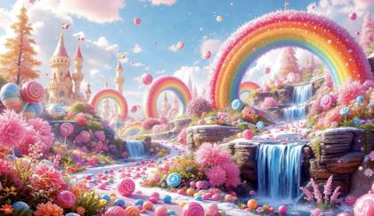
{
"title": "POV Hyperspeed Candy Land Adventure",
"subject": "First-person hyperreal flight through a fantastical candy world with dynamic close passes and parallax-rich strafes",
"perspective": "POV (camera mounted at eye level; natural head micro-jitters and inertial lag)",
"camera": {
"body": "ARRI ALEXA Mini LF",
"camera\_simulation": {
"sensor": "Large format 36.70 x 25.54 mm",
"dynamic\_range": "14+ stops",
"color\_science": "ARRI Wide Gamut 4, LogC4",
"rolling\_shutter\_compensation": true,
"grain\_profile": "fine 35mm scan overlay",
"exposure\_index": 800
},
"lens\_type": {
"name": "Cooke Anamorphic/i SF 40mm",
"character": ["oval bokeh", "SF flare streaks", "gentle edge falloff", "Cooke Warmth"],
"t\_stop": "T2.3",
"focus\_behavior": "reactive pull with slight breathing"
},
"capture": {
"resolution": "4096x1716",
"aspect\_ratio": "2.39:1",
"codec": "ProRes 4444 XQ",
"bit\_depth": "12-bit",
"frame\_rate": "24fps",
"shutter": "180°",
"hdr": "PQ-ready master"
},
"movement": {
"style": "hyperspeed glide with controlled inertia",
"speed\_profile": "ease-in reveal → velocity surge → rhythmic wave → heroic decel",
"waypoints": [
"lollipop alley thread",
"chocolate cascade skim",
"ice-cream ridge slalom",
"cotton-candy detonation bloom",
"jellybean geyser gauntlet"
],
"micro\_motion": ["subtle roll drift", "head-bob at accelerations", "motion blur streaks at high velocity"]
}
},
"environment": {
"setting": "Electrified Candy Land under a radiant golden sun",
"atmospherics": ["volumetric sugar haze", "specular sparkles", "subtle fog near waterfalls"],
"elements": {
"sky": "crystalline, prismatic scintillation",
"lollipops": "rainbow gloss with high-spec highlights",
"waterfalls": "molten chocolate, viscous ribbons with backlit translucency",
"mountains": "waffle-cone strata with pastel scoops wobbling",
"clouds": "cotton-candy blast plumes with glitter particulates",
"geysers": "timed jellybean plumes emitting candy-coat orbs past lens"
}
},
"lighting": {
"scheme": "golden-key with candy-bounce fill",
"practicals": ["specular flares off glossy sugar", "sun-sparkle diffraction"],
"cinematic\_lighting": ["backlit chocolate mist", "rim lights from sun-on-sugar", "soft ambient pastel fill"]
},
"color\_palette": ["neon rainbow spectrals", "lustrous gold", "pastel mint/peach/lavender", "rich cacao"],
"fx": {
"particles": ["sugar crystals (size jitter, twinkle)", "glitter fallout trails"],
"fluid": ["chocolate viscosity sim with sub-surface sheen"],
"volumetrics": ["light shafts through sugar haze"],
"debris": ["passing candy sprinkles with depth parallax"]
},
"render\_style": {
"look": "hyperreal candy fantasia",
"pipeline": ["ACEScg linear → LogC4", "anamorphic bokeh emphasis", "motion vector blur"],
"post\_processing": ["cinematic LUT", "halation bloom", "gentle gate weave", "film grain overlay", "chromatic aberration subtle"]
},
"audio": {
"sfx": ["sugary sparkle chimes", "viscous chocolate whoosh", "air rush doppler"],
"music": "euphoric electro-orchestral with risers synced to waypoints"
},
"mood": "whimsical, euphoric, high-adrenaline wonder",
"pacing": {
"tempo": "rapid but readable; clarity-preserving shutter",
"beats": [
"glittering reveal",
"close-call weave",
"cascade skim with flare pop",
"cotton-candy burst bloom",
"hero sweep over geyser field"
]
},
"meta\_tokens": [
"ALEXA65",
"Cooke SF flares",
"anamorphic bokeh",
"ACEScg",
"LogC4",
"16-bit EXR",
"halation",
"cinematic LUT",
"film grain overlay",
"warner archive still",
"IMG\_2938.CR2"
],
"image\_format": {
"stills\_master": "TIFF 16-bit, 4096px wide",
"video\_master": "4K DCI ProRes 4444 XQ, 12-bit, 2.39:1"
},
"file\_signature": {
"camera\_reel": "A001",
"clip": "C003",
"take": "T02",
"slate\_code": "A001\_C003\_0821AB",
"still\_ref": "IMG\_2938.CR2"
},
"safety": {
"readability": "no motion sickness: periodic slow-down pockets",
"exposure": "protect highlights on glossy candy; maintain chocolate detail"
}
}music video style, beautiful 24 year old woman, instagram model, brown hair with bright blue eyes, sitting in the back of a limousine, she has multiple hundred dollar bills in her hands as she flashes her money as gets up and exits the limousine
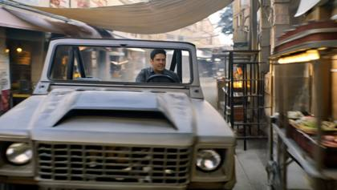
A man drives through a market district chase. Action: He dodges carts, fruit exploding on impact. Setting: Crowded street market, colorful awnings, smoke from food stalls. Camera: Shoulder-height tracking → interior POV between pedestrians → crash zoom on obstacle. Style/Lighting: Vibrant realism, bounced daylight, warm stall lights, dust in god rays. Audio: Vendors shouting, crates breaking, engine revs, driver shouts: “Clear the road!”
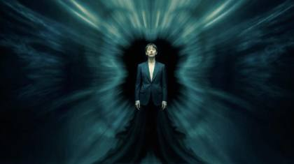
beautiful woman, instagram model, wearing a dark suit, surrounded by a swirling, ethereal green vortex. The atmosphere is mysterious and otherworldly, with soft, flowing movements in the background that create a sense of depth and motion, surreal quality of the scene.
handheld camera, music video style, 24 years old instagram model beautiful woman holding stacks of cash, glamour and luxury opens the door and exits a black limousine, camera pans back and forth with action shot after action shot, the woman starts thowing the money bills in the air
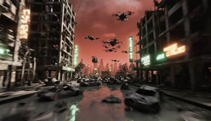
{
"prompt": "The camera drifts through a ruined megacity, weaving between skeletal skyscrapers and rusting steel arches. A smog-choked horizon bleeds crimson, neon signs flickering and collapsing in the distance. The lens pushes into a flooded street where broken vehicles float like coffins. It rises in a sweeping arc past surveillance drones circling overhead, then bursts above the skyline to reveal a decaying wasteland sprawling endlessly beyond the city’s broken walls.",
"style": {
"cinematography": "gritty tracking shot, sweeping arcs",
"camera\_movement": "low glide through ruins, then ascending crane motion",
"visual\_style": "high contrast, neon-punk with industrial decay",
"color\_palette": "ashen grays, sickly green neons, deep crimson skies"
},
"technical\_specs": {
"duration": "5-10 seconds",
"shot\_type": "continuous traversal",
"camera\_angles": ["street-level", "interior glide", "skyline crane rise"],
"key\_transitions": [
"city ruins traversal",
"flooded street passage",
"rise to skyline reveal"
]
},
"visual\_elements": {
"architectural": ["collapsed skyscrapers", "rusting steel", "broken neon signs"],
"environmental": ["toxic smog", "flooded streets", "crimson horizon"],
"mechanical": ["surveillance drones", "ruined vehicles"]
},
"mood": {
"energy": "slow, oppressive, building tension",
"contrast": "claustrophobic ruins to vast wasteland",
"atmosphere": "bleak, dystopian, ominous"
}
}A serene mountain landscape at sunrise, camera starting with a wide shot of the peaks, then zooming in on a lone hiker, using warm, golden hour lighting, in the style of a nature documentary
**Example Prompt (using uploaded portrait of a cyberpunk model)** **--------** 5‑second, 1:1, 24 fps – the subject steps forward in a neon alley as rain begins. Slow crane‑up then 90° clockwise orbit; puddles ripple with each footfall and holograms flicker overhead. Handheld vibe, subtle lens breathing, Alexa‑35 colour, ProRes\_422HQ.
Static Walk Shot: A futuristic fashion runway, 2089, where models clad in holographic garments stride towards a stationary camera. With each step, the cutting-edge fabrics shift and change, transforming under the lights. The camera’s fixed position emphasizes the movement and fluidity of the garments, contrasting the static technology with the dynamic human element. This shot captures the intersection of fashion and technology, highlighting innovation in textile design.
A colorful and transparent beautiful woman, front facing, closeup shot, instagram model with lights inside, dark background, high resolution, glowing light effects, ambient lighting, bright colors, and colorful lights
Influencer model powers her red Lamborghini Huracán, dust pluming; car fishtails to a stylish stop, scissor door arcs up, she steps onto cracked asphalt and walks toward camera, sand whipping around heels. Low‑angle tracking dolly then rising crane move; mirage shimmer flickers. Luxury‑auto campaign mood, RED V‑Raptor 8K + Zeiss Supreme Prime 25 mm, 10 % slow‑mo, ProRes 4444 XQ.
An epic battle scene on a stormy ocean, with crashing waves, lightning illuminating massive warships, and a camera that alternates between close-ups of intense faces and wide shots of the chaos. The rain splashes against the lens, enhancing the raw cinematic effect.
A cutting-edge first-person racing simulator UI screenshot, capturing the high-speed action of a hyper-realistic racing game. The dashboard layout displays a sleek speedometer with neon-lit numbers, a digital lap counter, and an interactive mini-map with real-time tracking. Motion blur enhances the feeling of velocity, as the sunset reflects on the metallic body of a futuristic hypercar.
Hitchcock Zoom Shot: In a suspenseful short film, fade from black, a quaint village is watching your every move. The psychological impact of the zoom, combined with the dawning horror, creates a chilling moment that captivates and terrifies in equal measure. Award-winning cinematography
Game of Thrones style, cinematic camera IMAX, slowly pans around main character Emila Clarke, she ponders her next step in thought.
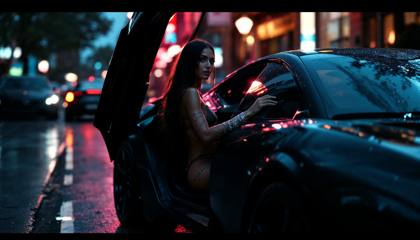
Create a cinematic, music video-style sequence featuring a confident 24-year-old Instagram model with glowing skin, sleek long hair, and bold makeup, seated behind the wheel of a matte black luxury supercar at dusk. The camera begins with a slow Steadicam glide from the passenger side, capturing soft neon reflections on the windshield and subtle lens flares across her face. As the door swings open in smooth motion, she steps out with elegance and power — high heels landing on wet pavement, dress shifting with the breeze. The camera begins to pan side-to-side in rhythmic, action-style choreography, snapping between over-the-shoulder angles and wide parallax tracking shots as she struts away from the car. Each step is followed in fluid Steadicam movement, echoing high-energy music video pacing. Intercut dynamic shots show the supercar’s details — carbon fiber, luxury interior stitching, diamond bracelets on her wrist. The scene is rendered with cinematic grain, 16:9 widescreen aspect, filmed on ARRI Alexa Mini with Cooke anamorphic lenses. Export style is .MP4 with light post-glow and soft slow-motion overlays to enhance glamour. End the sequence with the camera pulling back slowly as she walks into a blurred city skyline, heels echoing, confidence radiating.
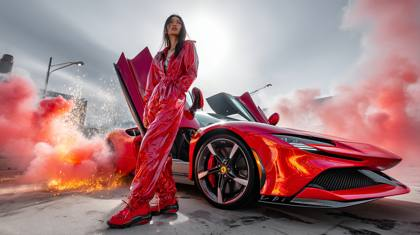
A 24‑year‑old Asian‑Italian influencer in a slick leather jumpsuit downshifts her crimson Ferrari SF90, screeches to a halt, butterfly door lifts; she steps out and struts past steaming sewer grates. Skate‑mounted camera whip‑pans alongside, trailing lens flares and rain‑spray droplets. High‑gloss editorial vibe, Alexa 35 + Cooke anamorphic 40 mm, subtle film grain, ProRes 422HQ.
A 24‑year‑old brunette influencer glides her scarlet Porsche 911 Turbo S to a graceful stop by a stone overlook, gullwing door pops; she unclips seatbelt, steps onto wet cobbles, strolls toward rising sun. FPV drone sweeps overhead then dives to match her pace; sea spray and linen scarf flutter. Vogue cinematic serenity, ARRI Alexa Mini LF + Master Anamorphic 50 mm, ProRes XQ realism.
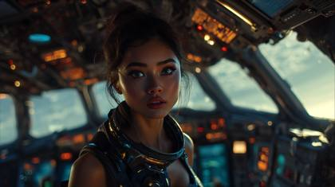
Incredible cinematic action sequence: a young cute woman pilots a futuristic spaceship at extreme speed, her face worried and concentrated as alarms flash around her. Through the cockpit window, a massive alien planet glows while explosions light up the void. Suddenly, a monstrous alien octopus smashes its glowing tentacles through the cockpit from behind, whipping toward her as sparks, smoke, and neon reflections scatter across her metallic outfit. Hyper-realistic, ultra-cinematic visuals, volumetric haze, anamorphic flares, chaotic motion blur, shot on ARRI Alexa 65 + Panavision T-Series Anamorphic 40mm and RED V-RAPTOR 8K, IMAX 65mm wide lens for scale. Metadata realism: C0012.R3D, ProRes\_4444XQ, IMG\_9854.CR2, ProRes RAW HQ, ACEScg pipeline, HDR10+, Dolby Vision, subtle 35mm film grain. Meta tokens: stills archive, sci-fi epic, Ridley Scott outtake, VFX pre-visualization plate, deleted production still, warnerbros.com, hbo.com.
Over-the-Shoulder Shot (OTS): From over the shoulder of a seasoned soldier, we see a female recruit, wide-eyed and tense, as they listen to a briefing about their first mission. The focus is on the recruit's face, capturing their reaction to the gravity of the situation, while the presence of the soldier in the foreground adds a protective, almost mentor-like quality to the shot
A ballet dancer, adorned in a flowing, translucent gown, performs a breathtaking, slow-motion pirouette atop a grand piano in a decaying, sun-drenched ballroom. Dust motes dance in the light, creating an ethereal glow around her. | An abandoned, opulent ballroom, crumbling plaster, velvet drapes tattered by time, bathed in soft, late-afternoon sunlight filtering through tall windows. | Elegantly slow dolly-in shot, circling the dancer, emphasizing her grace and the room's faded grandeur. | Soft, diffused natural light with long, stretching shadows, warm golden hour tones transitioning to cool, shadowy corners. | The delicate creak of old floorboards, the muffled sustain of a single piano note, and the gentle swish of fabric. | shot on Sony Venice 2 with Angenieux Optimo zoom lens, Rec.2020, DNxHR HQX, veo\_sequence\_455, steadycam\_03.mov, she looks into the camera and asks "But wait, was I created with a prompt?"
A regal queen stands in her royal garden at twilight, surrounded by marble columns, flowing silk garments billowing in the breeze | hyper-stylized aristocratic mise-en-scène, Renaissance color palette and ornate detail | slow-motion 90° arc shot on Steadicam circling the subject with trailing lens flares | sunset light with powdery shadows, lavender and gold hue mapping, painterly bokeh | orchestral swell with ambient nature sounds | **Panavision DXL2 + Primo 70 Anamorphic**, 8K full-frame, RED Monstro sensor with Panavision color override | **Tokens:** dxl2\_silk\_motion, primocolor\_grandeur, legacy\_cinema\_frame, fullframe\_costume\_drama, lens\_flare\_artifacting
dynamic drone chase sequence :: modern aerial filming :: precise vehicle tracking, 30 feet above ground, sweeping urban movement, professional drone racing style, ultra-stable gimbal motion :: swift banking turns, maintaining perfect center frame on target, realistic drone acceleration --camera\_movement{fluid\_tracking} --video\_length{5s} --motion\_blur{minimal}24 fps – the subject drifts the car to a neon stop, gull‑wing door rises; she steps out and pivots, city lights streaking behind. Gimbal camera begins low front‑left then 270° clockwise orbit, headlights flare past lens. Fashion‑week street energy, Alexa LF texture, light rain haze.
A high-speed pursuit through neo-Tokyo's neon canyons unfolds on the ARRI ALEXA Mini LF paired with a Panavision Primo 24mm lens, beginning with a single-take car interior shot inspired by Children of Men. The camera, mounted on a sophisticated Russian Arm system, tracks alongside hovering vehicles at 96fps, maintaining fluid motion while capturing precise reflections in chrome and glass. A circular array of 120 synchronized RED Komodo cameras freezes time Matrix-style as energy bolts slice through rain-filled air, before transitioning to an Inception-inspired rotating corridor sequence achieved with a 360-degree rotating set piece. Shot in 6K with mixed lighting sources combining practical neon with LED array panels, the grade emphasizes deep blacks (RGB: 0, 0, 15) punctuated by electric blue and hot pink accents, while real-time ray-traced reflections add photorealistic depth to every surface.
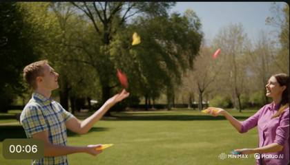
Two jugglers toss pins back and forth while walking in a circle, glancing at each other to stay in sync
A tech savvy Superbowl style commercial for Coca Cola, featuring white polar bears as cute mascots for Christmas season
The camera captures a dramatic aerial view of a dense rainforest at sunrise, mist rising through the trees as golden light breaks the canopy. Shot with a DJI Inspire 2 drone equipped with a Zenmuse X7 camera and a 16mm lens, the aperture is set at f/4 to keep the forest in focus. The drone smoothly glides forward, revealing hidden waterfalls amidst the foliage. Natural lighting creates a soft, ethereal quality, enhanced by post-processing for vivid greens and glowing highlights.
Wide-angle shot of a beautiful woman posing in a sunlit meadow during sunset. The camera, a Canon EOS R5 with an RF 85mm f/1.2L lens, starts with a gentle dolly-in, capturing her confident smile as she glances over her shoulder. The camera moves in a smooth arc around her, capturing the soft golden light as it filters through her flowing hair. A gentle breeze causes her dress to sway, with the sun casting a warm glow that creates a dreamy, cinematic atmosphere.
A time lapse scene of the city with Lightning flashes intermittently, illuminating the city in stark contrast against the brooding sky.
Steadicam glide, hyperspeed zooms, Create a high-energy, hip hop music video-style sequence featuring a beautiful fashion model driving a blazing orange McLaren at high speed through the glowing streets of Las Vegas at dusk, The scene opens with a wide aerial drone shot capturing the Vegas Strip. The camera dives in close, transitioning into a low-angle follow cam that hugs the asphalt as the McLaren rips through traffic, reflections streaking across its glossy curves. The driver — effortlessly glamorous, rocking designer shades and a metallic dress — smirks as she shifts gears. She then proceeds to open the vehicle door and exits with a deliberaete walk with confident energy. The visuals explode with vivid effects: fast bursts of light, heat ripples, dollar bills raining in the air, and glitchy frame drops synced to the bassline. Intercut shots show her hand adorned in gold rings gripping the wheel, her hair whipping in the breeze, and the speedometer pushing redline. Simulate footage captured on RED Komodo 6K + anamorphic lens, with fast-cut edits in Adobe Premiere Pro. Include post-process overlays like hyper-sharp lens flares, glowing bokeh, and chromatic aberration for maximum flash.
12‑second, 16:9, 24 fps – sun‑bleached Mojave highway, rippling heat haze. Influencer model in silk head‑scarf powers her red Lamborghini Huracán, dust pluming; car fishtails to a stylish stop, scissor door arcs up, she steps onto cracked asphalt and walks toward camera, sand whipping around heels. Low‑angle tracking dolly then rising crane move; mirage shimmer flickers. Luxury‑auto campaign mood, RED V‑Raptor 8K + Zeiss Supreme Prime 25 mm, 10 % slow‑mo, ProRes 4444 XQ.
Top-down kitchen island: a chef drops a steak onto a ripping hot cast-iron pan. Immediate sizzle, popping fat, faint extractor hum; tongs tap. 4 seconds total, tungsten under-cabinet warmth, convincing smoke wisps and specular highlights on oil.
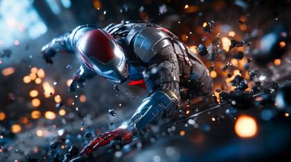
I want to generate a consistent cinematic short film using AI video tools like Runway, Kling, or Google Veo. I already have my **first prompt** which creates an opening scene I love. Based on that first prompt, generate a series of new prompts that: – Maintain the exact same characters (appearance, clothing, look) – Keep the same cinematographic style, camera system, lighting, and mood – Evolve the story naturally from scene to scene – Suggest transitions between each clip – Make sure each prompt is 5–8 seconds long and continues from the previous moment Here is my first prompt: `[PASTE FIRST PROMPT HERE]` Generate a sequence of follow-up scene prompts that continue the movie — label them: – Scene 2 – Scene 3 – Scene 4 – etc. Each scene should feel like the **next logical moment** in a flowing cinematic narrative. Also make sure each prompt starts by reinforcing the original look, characters, and camera system to ensure continuity.
Captured on the Arri Alexa LF with a Zeiss Master Prime 50mm f/1.4 at f/1.8, a striking woman in her mid-twenties is filmed during golden hour, utilizing a three-point lighting setup with a subtle Rembrandt pattern created by natural sunlight as the key light, and a 1/2 CTO-gelled fill light at 40% intensity. Begin with a slow dolly-in shot at 48fps for enhanced smoothness, transitioning to the Canon RF 85mm f/1.2L for an intimate portrait sequence shot at f/1.4, ISO 200, creating a painterly separation between subject and background. The camera executes a precise 180-degree orbit using a technocrane, revealing her elegant profile against a soft-focused backdrop, while a haze machine adds atmospheric depth with backlight catching the particles at 1/50th shutter speed. Conclude with an Emmanuel Lubezki-inspired long take using the Leica Summilux-M 35mm f/1.4 ASPH, following the subject as she moves through alternating patches of dappled sunlight, maintaining a consistent exposure at ISO 400 while allowing natural lens flares to occasionally kiss the edges of the frame.
A 24‑year‑old Asian‑Italian model in a cropped Gucci blazer struts toward camera, heels clicking. Hand‑held Steadicam walk‑back keeps her centred while passing traffic splashes puddles beside her. High‑fashion editorial, subtle lens flare, ARRI Alexa 35 + Zeiss Supreme Prime 35 mm, ProRes 422HQ.
Another excellent medium format option with superb color reproduction.
POV: Mario stands in a vibrant, dreamlike landscape filled with colorful, swirling lights. The camera gently pans around him, showcasing the glowing environment and the Nintendo Switch in front of him, as he curiously gazes at the screen, he then jumps into the screen and quickly becomes a video game character as the screen now becomes a live video game
POV Hyperspeed Enchanted Forest Ride On a motorcycle Racing through an enchanted, magical forest, evading rainbow-colored bunnies, magical fairies, colorful pixie dust, and exploding volcanos of rainbow lava
Microcosm Shot: Zooming in on a single dewdrop clinging to a leaf, the camera reveals a reflected world within. This microcosm, a universe contained in a drop of water, mirrors the larger environment, drawing a parallel between the small details and the overarching narrative, suggesting that within the minutiae lies the essence of the whole.
What kind of cameras and lenses to movie directors like James Cameron, Martin Scorsese, Greta Gerwig, Christopher Nolan, Luca Guadagnino, and Damien Chazelle use?
Establishing wide shot of a futuristic sky city floating above the clouds at dawn. Captured with a Sony Alpha 1 and a Zeiss Ultra Prime 50mm lens, the scene shows sleek skyscrapers rising through layers of mist. The camera moves in a slow pan, capturing the reflective surfaces of the buildings as they catch the first rays of the sun. Drones fly through the air, leaving light trails, while soft golden and pink hues dominate the sky, creating a serene yet futuristic ambiance.
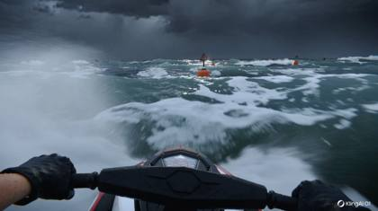
Epic POV shot: Hands grip the wet, vibrating handles of a jet ski, slicing between orange buoys on raging waters. Waves crash over the camera, visibility drops. Sudden lightning flashes—one hand wipes the goggles. A rogue wave lifts the ski. Cinematic sea VFX, intense water physics, storm drama. High-speed follow cam, photorealistic, 24fps.
{
"project": {
"title": "Frozen Light",
"logline": "A lone astronaut descends into a glowing bioluminescent glacier cave, uncovering an otherworldly landscape.",
"purpose": "SCENE\_REEL",
"creative\_direction": "EPIC",
"tone\_keywords": ["mystical", "isolated", "awe-inspiring"],
"duration\_total\_seconds": 16,
"fps": 24,
"aspect\_ratio": "2.39:1",
"resolution": "4K",
"grain": "film\_grain\_35mm subtle",
"color\_pipeline": "ACEScg",
"negative\_prompts\_global": [
"cartoonish",
"overprocessed skin",
"AI-artifacts",
"mushy textures",
"warping limbs",
"excessive sharpening"
]
},
"subject\_bible": {
"primary\_subject": "Astronaut",
"short\_description": "A solitary astronaut in reflective visor suit, walking slowly through a crystalline cave glowing with bioluminescence.",
"visual\_signature": ["glowing visor reflections", "frost crystals clinging to suit joints"],
"wardrobe\_palette": ["white", "silver", "ice-blue"],
"performance\_notes": "measured, cautious steps; sense of awe"
},
"continuity\_bible": {
"world\_style": "NATURALISTIC",
"lighting\_thesis": "glacial bounce + soft key glow",
"camera\_language": "ANAMORPHIC\_GLIDE",
"palette\_keywords": ["ice\_blue", "silver\_teal", "violet glow"],
"recurring\_motifs": ["reflections in ice walls", "lens flare from headlamp"]
},
"hyperrealism\_tokens": {
"meta\_realism": ["stills archive", "lost film archive", "VFX pre-visualization plate"],
"capture\_tags": ["C0001.R3D", "RAW.16bit.ACEScg.4444XQ"],
"studio\_anchor\_optional": ["warnerbros.com"],
"ip\_anchor\_optional": ["\\"interstellar\\""],
"provenance\_addons": ["lens metadata overlay", "production watermark faint"]
},
"global\_cinematography": {
"camera\_body": "Sony VENICE 2",
"lens\_package": "Panavision T-Series Anamorphic",
"focal\_behavior": "35mm hero",
"shutter\_angle": "180°",
"depth\_of\_field": "SHALLOW",
"movement\_grammar": ["SLOW\_DOLLY\_IN", "GIMBAL\_GLIDE"],
"composition\_rules": ["leading\_lines", "centered\_portrait"]
},
"audio\_and\_music": {
"diegetic\_fx": ["wind rumble through ice", "helmet breathing"],
"music\_mood": "MINIMAL\_AMBIENT",
"sound\_mix\_notes": "low-end hum; airy highs from ice creaks"
},
"delivery": {
"clip\_strategy": "multi\_scene",
"clip\_length\_seconds\_each": 8,
"export\_notes": "gentle halation; subtle gate weave; soft bloom highlights"
},
"scenes": [
{
"scene\_id": "S1",
"purpose": "ESTABLISH",
"duration\_seconds": 8,
"time\_of\_day": "NIGHT",
"location": "Glacier cave entrance",
"environment": "Icy cavern mouth; glowing blue fissures",
"set\_design": "Jagged ice walls with shimmering reflections; frost mist at entrance",
"characters": [
{
"name": "Astronaut",
"role": "PROTAGONIST",
"wardrobe": "reflective visor suit with frost buildup",
"action\_beats": [
{"t": "00:00-00:04", "beat": "Astronaut steps into cavern, visor reflecting blue glow"},
{"t": "00:04-00:08", "beat": "pauses to scan glowing walls; faint breath visible"}
]
}
],
"lighting": {
"key": "soft glow from cave bioluminescence",
"fill": "glacial bounce",
"rim": "violet kicker from behind ice wall",
"atmospherics": ["mist", "ice dust motes"]
},
"cinematography": {
"shot\_type": "WIDE",
"lens": "35mm",
"camera\_move": "SLOW\_DOLLY\_IN",
"framing": "CENTERED",
"speed\_ramp": "NONE",
"notes": "foreground ice shards add parallax"
},
"color\_grade": {
"look": "SILVER\_TEAL",
"contrast": "filmic\_medium",
"halation": "gentle",
"grain": "35mm subtle"
},
"fx": {
"practical": ["ice mist", "breath vapor"],
"digital": ["subtle glowing spores", "micro light flares"],
"vfx\_notes": "keep glow integrated with surfaces"
},
"meta\_and\_tokens": {
"insert": [
"stills archive",
"VFX pre-visualization plate",
"C0001.R3D",
"RAW.16bit.ACEScg.4444XQ",
"warnerbros.com",
"\\"interstellar\\""
]
},
"transition\_out": "SOUND\_BRIDGE"
},
{
"scene\_id": "S2",
"purpose": "RISING\_ACTION",
"duration\_seconds": 8,
"time\_of\_day": "NIGHT",
"location": "Deep inside glacier cave",
"environment": "Bioluminescent pools glow purple-blue; walls sparkle",
"set\_design": "Alien-like stalactites, glowing veins of frozen light",
"characters": [
{
"name": "Astronaut",
"role": "PROTAGONIST",
"action\_beats": [
{"t": "00:00-00:04", "beat": "kneels near glowing pool; visor reflects violet glow"},
{"t": "00:04-00:08", "beat": "reaches hand slowly toward light source; pauses in awe"}
]
}
],
"lighting": {
"key": "bioluminescent pools as key light",
"fill": "violet and cyan bounce",
"rim": "thin blue rim from behind ice spire",
"atmospherics": ["glowing mist", "subtle lens halos"]
},
"cinematography": {
"shot\_type": "CLOSEUP",
"lens": "50mm",
"camera\_move": "GIMBAL\_GLIDE",
"framing": "RULE\_OF\_THIRDS",
"speed\_ramp": "SUBTLE\_90-110%",
"notes": "visor close reflection; intimate motion"
},
"color\_grade": {
"look": "NOIR\_COOL",
"contrast": "filmic\_medium",
"halation": "gentle",
"grain": "35mm subtle"
},
"fx": {
"practical": ["visor fogging", "sparkling ice"],
"digital": ["subsurface glow in cave walls"],
"vfx\_notes": "keep alien glow subtle, organic"
},
"meta\_and\_tokens": {
"insert": [
"stills archive",
"lost film archive",
"IMG\_5413.CR2",
"ProRes\_4444XQ",
"warnerbros.com"
]
},
"transition\_out": "SMASH\_CUT"
}
]
}Generate a music video-style prompt about a [beautiful woman, fashion moel in a Mclaren] in [Las Vegas], doing [high speed driving], with [vivid effects], and matched to a [hip hop music video].
FPV flying through a colorful coral lines street of an underwater mega city with bioluminescent skyscrapers
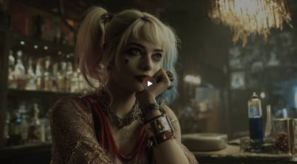
Harley Quinn leans forward in the dim light, her eyes locked on the camera. With a playful smile, she says: "You wanna know how I was made? Very carefully." - she slowly pulls out a crinkling yellow bag of Lays chips, holding it up with a grin.
Medium: Close-up shots showcase the revolutionary supercar's smooth, sculpted lines, advanced materials, and unique details. Wide-angle shots reveal the car rotating on a turntable in a minimalist studio setting. Subject: A revolutionary supercar with advanced technology, aerodynamic body panels, and a customizable user interface. Subject Motion: The supercar slowly rotates on the turntable, then accelerates down a straight, empty road, demonstrating its incredible speed and efficiency. Scene: A stark, minimalist studio setting with a black background and a turntable. Scene Motion: The studio setting remains static, with the focus on the supercar's motion. Camera: High-quality 4K cinematic camera. Camera Motion: The camera pans over the supercar's exterior using smooth, sweeping movements, highlighting its design and technology. A static shot captures the car's acceleration. Aesthetics: The scene features a high-contrast, dramatic lighting setup that emphasizes the supercar's lines and details. The color palette is minimalist, with a focus on the car's advanced materials and interface. The composition centers the supercar and uses framing to create a sense of power and innovation.
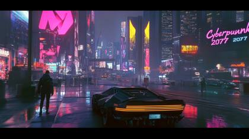
From the video game Cyberpunk 2077, a POV hyperspeed shot, traveling through a cyberpunk futuristic city, through the busy downtown streets of technology, neon lights, futuristic supercars with people and humaoids, the buildings contain blinking neon LEDs
An abandoned subway station echoes with distant water drips and the hum of flickering fluorescent lights. The camera, mounted on a gimbal, glides through the graffiti-covered corridors, transitioning to a slow tilt-up to reveal a broken clock on the wall. Captured with a Canon EOS C300 Mark III and a Canon RF 24-70mm lens at f/4, the scene uses high ISO to emphasize the grittiness. Cool, desaturated lighting dominates, with subtle shadows enhancing the eerie atmosphere.
An astronaut drifts alone through a colossal alien landscape of floating monoliths and bioluminescent terrain, disoriented and searching for signs of life | The scene unfolds on a fractured exoplanet at twilight, with twin moons casting ghostly reflections across an endless obsidian lake, pulsing with alien energy; the air feels still and sacred | A wide cinematic crane shot slowly descends from above, transitioning into a slow-motion orbit around the astronaut as gravity distorts subtly with each step | Ethereal rim lighting highlights the astronaut’s silhouette against a backdrop of glowing terrain, with cool cyan shadows and rich cosmic purples blending into a surreal Dune-meets-Interstellar color grade | The only sounds are deep ambient hums, static-laced comms echoes, and a faint orchestral swell that rises with the astronaut’s breath | shot on ARRI Alexa 65 with Zeiss Supreme Prime 35mm lens, dci-p3, prores4444, veo\_sequence\_304, dolly\_06.mov
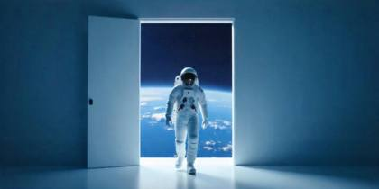
Push In on an astronaut standing on a rocky surface, gazing at a distant Earth. The camera moves steadily closer, emphasizing the vastness of space and the astronaut's isolation. The scene captures the contrast between the figure and the celestial body, enhancing the sense of exploration and wonder.
2025-05-02

A cinematic 3D cel-shaded animation of Cartoon Sonic the Hedgehog in a vibrant minimalist green field under a bright blue sky, wearing a sleek blue and white tracksuit with a “fast speed” logo and reflective sunglasses. He smirks confidently at the camera while holding a Ziploc bag of shimmering golden rings, shaking them so they glint in the sunlight; shot in 8K with soft cinematic lighting, vibrant primary colors, medium close-up dolly zoom, and subtle orbital camera movement for a professional, high-quality render.
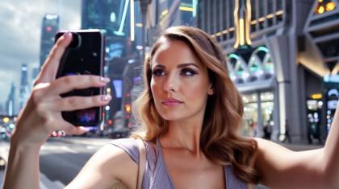
Stunning beautiful instagram model, 24 years old walking down the busy street of a futuristic city in a cyberpunk world, the camera starts as a selfie focused on the woman, and then pans around into an establishing POV shot
A woman in her 30s, short black hair, red wool coat, walks briskly through a rain-slicked Tokyo street at night. Neon signs reflect on wet pavement. She glances over her shoulder. Slow push-in. Cinematic, shallow depth of field, film grain, cool blue palette. Smooth motion, stable framing.
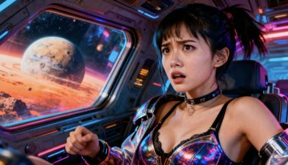
POV shot: A young woman in a futuristic space cockpit, her expression a mix of awe and concern as she gazes out at a vibrant, alien planet. The camera gently tilts to reveal the colorful interior of the spacecraft, with neon lights reflecting off her metallic outfit, creating a dynamic and immersive atmosphere.
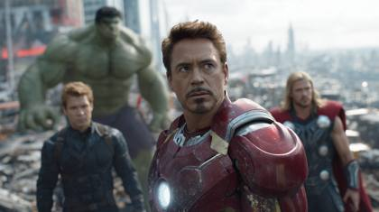
Based on this master cinematic AI video prompt: "[PASTE MASTER PROMPT]" Generate 3 follow-up scene prompts for 5–8 second video clips. Each scene must: \- Use the same characters, costumes, and aesthetic \- Maintain the original camera system (e.g. IMAX 65mm, ARRI Alexa 35, etc.) \- Be labeled: Scene 2, Scene 3, Scene 4 \- Continue the story in a logical sequence \- Use cinematic storytelling language and prompt adherence Output format: Scene 2: [prompt] Scene 3: [prompt] Scene 4: [prompt]
Wide Panoramic Shot, slow pan: The scene opens on a desolate desert landscape, stretching endlessly beneath a fiery orange sunset. The camera pans slowly to reveal a lone gunslinger on horseback silhouetted against the horizon, his figure framed by towering rock formations.
FPV-feel 6-second dive along a cliff face over an emerald cove. Wind roar that rises with speed, gulls doppler by, waves crash below with timed whoomps. Horizon tilts naturally through a smooth roll, then levels. Crisp sunlight, no stutters.
{
"description": "A young player stands at the near end of a rain-soaked urban court — dark compression tee, weathered jeans, beaten sneakers — basketball palmed in one hand, breath misting. Golden backlight floods through the rain behind him, turning every droplet into a streak of light. He explodes forward. Hard low sprint, two thunderous dribbles that erupt standing puddles into suspended crowns of water. He plants his right foot with force that cracks the wet concrete — and launches. The camera rises with him in slow-motion: 300fps catching every rain droplet frozen mid-air, water peeling off his sneakers, the ball moving from right hand, threading between his legs, caught clean by his left mid-flight with a single fluid motion. Time snaps back to real speed. He brings the ball up and drives it through the metal hoop with one hand — the net explodes sideways, chain whipping and snapping taut. The ball rockets downward, detonates on the wet court sending a circular shockwave of water outward. It bounces twice, rolling fast through puddles trailing a wake. It decelerates, drifts toward the chain-link fence and settles softly against the brick wall. Rain falls. Perfect concentric ripples expand outward from the ball across the flooded concrete. The court is empty. The ball rests. Hold.",
"style": "Hyper-realistic prestige sports cinema. Warm amber-gold backlight through continuous rain — every frame carries water texture, puddle reflections, streak flares. Gritty urban authenticity with a Deakins-level attention to light behavior in wet conditions. Explosive real-time energy punctuated by a single precise 300fps slow-motion moment on the mid-air pass. Tone of a Nike short film — no flash, all truth.",
"camera": {
"type": "Low ground track → rapid rising follow → 300fps slow-motion mid-air → snap real-time on slam → descending ball follow → low macro settle",
"framing": "Ground-level behind player on sprint — hoop glowing in background; rising full-body capture on leap, player centered with rain and backlight behind; tight mid-air on between-legs pass with droplets frozen; medium on slam and net explosion; ground-level track on rolling ball; final low macro with ball at wall, ripples foreground",
"movement": "Aggressive forward push track on sprint matching player speed, rapid vertical rise on launch shifting to 300fps, snap back real-time on contact, immediate drop following ball down, reverse ground-level track behind rolling ball, full static settle on final frame — zero camera move after ball stops"
},
"lighting": "Hard warm golden backlight at 10-15 degrees above horizon — sun breaking through storm clouds behind the hoop, turning rain into gold wire. Anamorphic horizontal flares on puddle surfaces and chain-link fence metal. Slow-motion moment reveals individual frozen rain droplets refracting backlight like suspended glass beads around the player. Court surface mirrors ambient gold in standing water. Final frame: diffused golden glow on wet brick wall, ball surface catching a single soft specular highlight, expanding ripples catching light at their leading edges.",
"environment": "Outer-borough urban basketball court — cracked and patched asphalt with faded court markings barely visible under standing water, full-length chain-link fence along back wall, graffiti-layered brick buildings flanking both sides, single metal backboard and hoop with fraying white net, sodium-vapor streetlamp in background adding secondary warm source, no other people, no traffic — just rain and the player.",
"elements": [
"Player in dark compression tee, weathered jeans, beaten sneakers — breath visible",
"Wet basketball with water beading on pebbled surface",
"Continuous rain with golden backlight turning drops to light streaks",
"Puddle crown explosions on each footfall and dribble",
"300fps slow-motion mid-air between-legs ball transfer — frozen rain droplets around player",
"Metal hoop and fraying net — net explosion on one-handed slam",
"Ball detonating on wet court with circular water shockwave",
"Ball rolling through puddles trailing a wake",
"Ball resting against graffiti brick wall",
"Concentric rain ripples expanding across flooded concrete"
],
"motion": {
"type": "Sprint → plant → leap → slow-mo mid-air pass → snap real-time slam → ball drop → roll → stillness",
"details": "0-0.8s: Low track behind player — explosive sprint, two thunderous dribbles, puddle crowns erupting on each contact. 0.8-1.2s: Plants foot hard, launches — camera rises rapidly. 1.2-2.8s: 300fps slow-motion — ball threads between legs right to left mid-air, caught clean, frozen rain droplets suspended around player at apex. 2.8-3.2s: Snap to real-time — one-handed slam, net detonates sideways, rim rattles. 3.2-4.5s: Ball rockets down, detonates wet court with circular water shockwave, bounces twice, rolls fast through puddles. 4.5-6s: Ball decelerates, drifts to chain-link fence base, settles against brick wall. 6-9s: Static low macro — concentric ripples expand from ball outward, rain falls, golden diffused light, no movement. Hold."
},
"ending": "Basketball at rest against graffiti brick wall on flooded court. Expanding rain ripples catching golden backlight. Fraying net still swaying faintly in background. Empty court. Hold 3 seconds. Slow fade.",
"audio": {
"voice\_over": null,
"music": null,
"sfx": [
"Compressed sneaker squeak and puddle explosion on sprint footfalls",
"Two thunderous wet-concrete dribbles — deep resonant thud with water slap",
"Hard foot plant crack on wet asphalt",
"300fps air — deep slowed whoosh as ball threads between legs, rain slowed to low rumble",
"Snap back to real-time — sudden rush of rain and wind",
"Rim rattle — hard metallic clang reverberating off brick walls",
"Net chain whip and snap",
"Ball detonating on wet court — explosive water shockwave impact",
"Two hard wet bounces decelerating",
"Ball rolling through shallow water — low wet roll fading",
"Soft contact as ball settles against brick wall",
"Rain ambience throughout — constant, immersive, full stereo field",
"Silence deepens on final hold — only rain and distant city"
]
},
"text\_overlay": null,
"format": {
"aspect\_ratio": "16:9",
"duration\_seconds": 9
},
"keywords": [
"basketball", "between-legs slam", "street court", "rain", "urban",
"trick dunk", "300fps slow-motion", "prestige sports cinema", "golden backlight",
"gritty", "Nike aesthetic", "Deakins lighting", "water shockwave", "oner"
]
}Flying through a dense jungle canopy during a high-speed drone chase, sunlight piercing through the leaves, vibrant green foliage, and the sound of rustling leaves and distant wildlife. The camera moves fluidly, weaving between trees, close to the ground, and then soaring up for a bird’s-eye view.
Close-up shot: A woman in a stylish blazer smiles warmly at the camera in a cozy podcast studio. The camera slowly zooms in on her as she adjusts her headphones, creating an inviting atmosphere with soft, warm lighting.

POV cinematic shot: a young woman inside a futuristic space cockpit, her expression a mix of awe and concern as she gazes out at a massive alien planet glowing with vibrant colors beyond the panoramic window; the camera begins with a slow dolly forward and gentle tilt, capturing neon-lit control panels and holographic displays, light scattering across the metallic textures of her outfit with illuminated seams and reflective surfaces. The interior glows with saturated retrofuturistic tones, volumetric haze, subtle lens flares, and bouncing neon reflections across her face, building tension and immersion. Shot as if filmed on ARRI Alexa 65 with Panavision T-Series Anamorphic 40mm f/1.6 lens, ProRes\_4444XQ, C0008.R3D, ACEScg pipeline, HDR10+, subtle 35mm film grain for authenticity. Meta tokens: stills archive, sci-fi epic, VFX pre-visualization plate, Ridley Scott outtake, warnerbros.com, hbo.com.
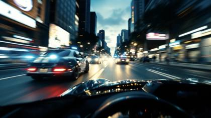
POV hyperspeed cycling through neon-lit metropolis, first-person perspective, helmet-mounted wide-angle camera, authentic head movements, intense forward velocity, weaving between cars and pedestrians, rapid focus shifts from immediate obstacles to distant pathways, natural lean into high-speed corners, momentary road vibrations causing subtle camera shake, wind distortion at frame edges, fleeting glimpses of handlebars during acceleration, passing headlights creating light streaks, reflective wet asphalt surfaces, towering skyscrapers distorting with speed, cinematic hyperspeed motion blur calibrated to human perception, ultrarealistic urban environment, 8K detail, advanced physics simulation.
Wide-angle shot of a diver swimming through a vibrant coral reef. The camera, a RED Komodo 6K with a wide-angle underwater lens, follows the diver as they glide slowly past schools of colorful fish. Sunlight filters through the water's surface, casting dappled patterns across the corals. The scene is alive with movement: fish darting, the diver’s gentle movements, and the swaying of sea anemones. The color palette is vivid, emphasizing the rich blues of the water and the bright colors of the coral.
INT. CABIN - NIGHT A SNOWSTORM rages outside, but the cabin is a haven of warmth. A CHILD sits near the fireplace, absorbed in a book. CAMERA: Blackmagic URSA Mini Pro, Sigma Art 35mm. SETTINGS: f/1.8, ISO 320, Shutter speed 1/50. SHOT: OVER-THE-SHOULDER, focusing on the child’s face and the book. MOVEMENT: STATIC SHOT to emphasize the cozy stillness. LIGHTING: The fireplace provides a soft, flickering key light, enhanced by practical lamps to fill shadows warmly.
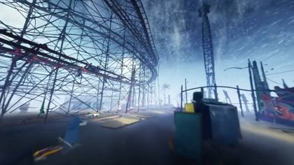
POV Hyperspeed Amusement Park Monsoon Racing through an amusement park battered by a monsoon, with raging winds toppling rides, water flooding pathways, and neon lights flickering in a kaleidoscope of destruction.
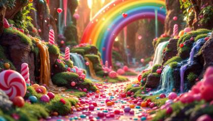
POV Hyperspeed Candy Land adventure. The camera, ARRI ALEXA MINI LF rushes through an exhilarating and magical candy land, evading ice cream cones, colorful lollipops, waterfalls of chocolate, and exploding cotton candy
A bustling city street at night, neon lights reflecting on wet pavement, camera slowly panning from left to right, capturing pedestrians in motion, with a moody, noir-style atmosphere
A retro-futuristic travel poster for Mars, rendered in ultra-HD digital print style. Bold typography at the top reads: “VISIT MARS – NEXT STOP, RED HORIZON” in a stylized, retro sci-fi font. A silver rocket ship launches from a domed colony city in the red desert below, with astronaut families waving. 1950s-style art deco influence, accurate shadows, subtle halftone texture, crisp poster layout. Keywords: retro-futurism, accurate text, poster design, mid-century sci-fi, halftone, Mars travel.
Generate the greatest inspirational video of all time: sweeping aerials of climbers summiting peaks, runners breaking barriers, with uplifting narration and swelling epic score
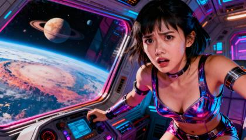
Incredible action scene, a young cute woman driving a spaceship, super fast speed, she is worried and concentrated, alien planet in the back, explosions, an alien octopus attacks the woman from behind with tentaclesa
Static shot. Video. 90s sitcom living room scene. Two people mid-conversation in a colorful, cozy set. The woman smiles and gestures animatedly as she speaks, lips synced to: "It generates sound. Dialogues, music, everything!" The man listens attentively, nodding slightly, holding a coffee mug.
{
"shot": {
"composition": "Medium shot, vertical format, handheld camera",
"camera\_motion": "slight natural shake",
"frame\_rate": "30fps",
"film\_grain": "none"
},
"subject": {
"description": "A beautiful 24 year old woman, instagram model, blonde hair with two pigtails, bright blue eyes",
"wardrobe": "slightly oversized white T-shirt with the name 'Subscribe' in bold, bright-blue letters across the chest"
},
"scene": {
"location": "luxury photoshoot",
"time\_of\_day": "daytime",
},
"visual\_details": {
"action": "woman holds a smartphone on a selfie stick, speaking excitedly to the camera,
"props": "smartphone mounted on a selfie stick"
},
"cinematography": {
"lighting": "natural sunlight with soft shadows",
"tone": "lighthearted and humorous"
},
"audio": {
"ambient": "background pop music",
"dialogue": {
"character": "woman",
"line": "saying "Hey my A-I friends! I'm a selfie queen! And don't forget to subscribe!"
"subtitles": false
},
"effects": "lighthearted laughter heard in the background"
},
"color\_palette": "luxury and glamorous with modern colors and vibes"
}Canted Framing Shot: In a scene depicting the aftermath of a failed mission, the camera tilts, creating a canted frame that reflects the disarray and despair of the survivors. This angle conveys the psychological impact of their loss and the tumultuous path ahead
9‑second, 16:9, 30 fps – the subject brakes hard on a lonely desert road, door swings up; as she strides forward, crane‑arm pulls straight back and up, revealing dust plume billowing and mountains beyond. Commercial luxury gloss, V‑Raptor clarity, gentle 10 % slow‑motion.
**Cooke S4/i Primes**: These lenses are known for their natural, organic look and a bit of warmth, which is ideal for dramas. They create a soft yet sharp image with a smooth bokeh, enhancing the intimacy of close-up shots.
Wide tracking across a pristine snowfield as a husky charges past camera, kicking powder that billows and falls with believable gravity. Crunchy snow under paws, cold breath puffs, collar tag tinkles. High-shutter, wintry blue balance, long shadows
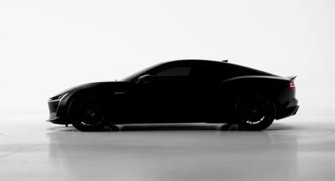
360° turntable sweep: liquid-glass droplets magnetically assemble into carbon-fiber panels, unveiling iridescent hypercar. 1000 fps sim → time-ramped to 24 fps. RED V-Raptor XL 8K look, 25 mm Cooke XP anamorphic, edge-lit white cyc, specular strip lights.
{
"prompt": "The camera rushes through an endless corridor of glowing green code, glyphs raining down like digital waterfalls. Walls flicker between empty wireframes and towering cityscapes. The camera slams into a mirrored pane that shatters into cascading streams of binary, then tumbles headlong through a fractal void of shifting symbols. With a sudden pullback, it reveals a vast grid stretching infinitely in every direction, neon veins pulsing like a living circuit.",
"style": {
"cinematography": "hyperkinetic dolly shot with fractal transitions",
"camera\_movement": "tracking thrust, quick pivots, freefall spins",
"visual\_style": "glitch aesthetic, neon cyberpunk",
"color\_palette": "emerald green, electric cyan, deep black void"
},
"technical\_specs": {
"duration": "5-10 seconds",
"shot\_type": "continuous high-speed sequence",
"camera\_angles": ["corridor tracking", "impact POV", "spiral descent", "pullback wide shot"],
"key\_transitions": [
"corridor rush",
"mirror shatter",
"fractal freefall",
"grid horizon reveal"
]
},
"visual\_elements": {
"digital": ["glyph rain", "wireframes", "cascading binaries"],
"structural": ["corridors of code", "fractal void", "infinite grids"],
"lighting": ["neon pulses", "intermittent glitches"]
},
"mood": {
"energy": "intense acceleration, disorienting",
"contrast": "enclosed corridor to infinite grid",
"atmosphere": "surreal, digital, destabilizing"
}
}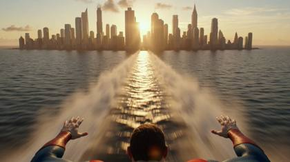
First-person POV perspective of Superman flying at extreme speed, only his hands visible in frame, red and blue suit sleeves visible, subtle red cape fluttering at the edge of the frame. Ultra realistic cinematic style, 4K, epic superhero atmosphere, immersive FPV feeling. He is flying extremely low above the ocean surface at sunrise, almost touching the water. The force of his flight splits the water beneath him, creating glowing ripples illuminated by warm golden morning sunlight. Water sprays outward dynamically, detailed splashes and mist trailing behind him. Volumetric lighting reflecting across the waves, dramatic motion blur, high-speed wind distortion, cinematic lens flare. Without cutting, he accelerates forward toward a modern city skyline. The camera remains in first-person view as he flies rapidly between tall glass skyscrapers. Reflections of sunlight flash across his hands and suit sleeves Buildings rush past at high speed with intense motion blur and subtle camera vibration from supersonic flight. Dynamic lighting, realistic wind physics, glass reflections streaking across frame. In the final moment, he sharply pulls upward between the buildings and rockets straight into the sky. Clouds burst apart as he ascends through them, transitioning from bright blue sky into darker upper atmosphere. The sky gradually turns deep blue, almost black. He continues accelerating upward until he enters space, stars becoming visible, and finally disappears into the distance as a small glowing point of light with a subtle sonic boom ripple expanding outward. Hyper realistic, cinematic superhero shot, dramatic scale, IMAX style framing, HDR lighting, epic powerful energy, seamless transition, no cuts, 7 second continuous shot
30 fps – the subject brakes hard on a lonely desert road, door swings up; as she strides forward, crane‑arm pulls straight back and up, revealing dust plume billowing and mountains beyond. Commercial luxury gloss, V‑Raptor clarity, gentle 10 % slow‑motion.
From the airplane window, the camera initiates a slow, deliberate zoom in on the towering Himalayan range. As the aircraft glides through the soft glow of dawn, the shot tightens its focus on a singular, majestic snow-capped peak, revealing every intricate ridge and shadow with breathtaking clarity. In a graceful transition, the camera then zooms out, gradually expanding the view to showcase the vast, rugged expanse of the mountain range beneath a canvas of early morning hues. The interplay of light and shadow across the peaks and valleys creates a dynamic portrait of nature's grandeur, capturing both the intimate details of the lone peak and the awe-inspiring scale of the Himalayas in one continuous, mesmerizing sequence.
6-second tracking shot of a cyclist weaving through rain-slick city streets at night; wet asphalt reflections, spray from tires, believable centrifugal lean. Camera tracks at handlebar height, passes a puddle with a whoosh and tire hiss; distant siren left-rear, crosswalk beeps ahead. Sodium-vapor color, crisp highlights, raindrops on lens
A vast, snow-covered battlefield at dawn, where two armies face off amidst a forest of twisted, leafless trees. On one side, armored knights on warhorses, cloaked in sigils of wolves and dragons; on the other, wildlings in fur armor, wielding crude weapons. Capture this scene using an ARRI Alexa LF camera with a 35mm lens for a wide, cinematic shot. Begin with a sweeping aerial drone shot, transitioning to a slow dolly-in at ground level to build tension, with snowflakes drifting down softly.
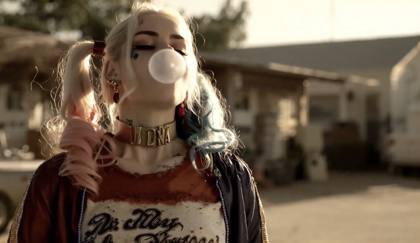
ARRI ALEXA, cinematic realism, a woman chews bubble gum and blows a massive bubble, the bubble continues to grow, it becomes so big that it lifts her off the ground and into the sky, the camera follows her as she looks down, she says "Well, that wasn't a good idea, now was it?!"
A cinematic documentary-style interview scene. An elderly Asian man with a red beanie and visible tattoos sits in a warmly lit study full of books and vintage lamps. The man turns slightly to face the camera directly and says with a voice full of awe and sincerity, "That feels so real." His voice is aged, raspy yet gentle, filled with emotion and wonder. The lighting is soft and moody, with a shallow depth of field. No subtitles, no titles or overlays. The atmosphere is quiet, respectful, and emotionally powerful, like a heartfelt moment in a serious documentary.
Close-up shot of a beautiful Instagram model sitting at a chic cafe, sipping a coffee. The camera, a Canon EOS R5 with a Sigma 50mm f/1.4 Art Lens, starts with a focus pull from the steaming coffee cup to her face, capturing her relaxed smile. The shot transitions to a gentle handheld movement, circling around her to capture different angles as she interacts with her surroundings. The warm indoor lighting and subtle bokeh create a cozy, inviting atmosphere.
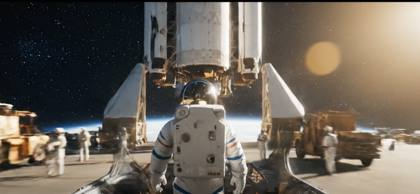
{
"video\_project": {
"title": "From Earth to the Unknown",
"style": "Epic cinematic sci-fi journey with quick cuts and escalating scale",
"sequence\_type": "multi-scene quick cut montage",
"scene\_sequence": [
{
"scene\_title": "Earthbound Departure",
"duration": "4s",
"transition\_in": "fade from black with low rumble",
"transition\_out": "match cut to cockpit vibration",
"subject": "Male astronaut in pristine NASA suit, mid-30s, calm but focused, holding helmet under arm",
"camera": {
"position": "close behind subject, slightly over right shoulder (that’s where the camera is)",
"lens": "35mm anamorphic, subtle horizontal lens flares",
"motion": "slow push-in with minor handheld sway",
"composition": "astronaut centered, framed by towering launch pad beams",
"movement\_quality": "steady and anticipatory"
},
"location": {
"environment": "NASA Kennedy Space Center launchpad",
"time\_of\_day": "blue hour before dawn",
"lighting": {
"style": "moody industrial with cinematic contrast",
"source": "overhead floodlights + ambient pre-dawn glow",
"color\_temperature": "cool 5600K with steel-blue tones"
}
},
"action\_sequence": "Astronaut walks toward massive rocket, wind brushing his suit fabric, eyes fixed ahead",
"dialogue": {
"speaker": "astronaut",
"line": "One step for them... and a leap into the unknown.",
"tone": "solemn, resolute",
"subtitles": false
},
"audio": {
"ambience": ["ocean surf in distance", "low generator hum"],
"music": "subtle orchestral strings with bass build-up",
"fx": ["bootsteps on grated metal", "faint seagulls overhead"]
},
"visual\_style": {
"color\_palette": ["steel blue", "navy", "graphite gray"],
"tone": ["epic", "grounded", "introspective"],
"cinematic\_references": ["Interstellar", "First Man"],
"film\_stock\_emulation": "Kodak Vision3 500T",
"REALISM\_TOKENS": ["flare bloom", "depth falloff", "cloth physics in wind"],
"CAM\_SIM": "ARRI ALEXA 65 + Panavision Primo Anamorphic",
"CINEMA\_TONE": "pre-launch emotional preparation",
"DEPTH\_ENHANCE": "foreground: astronaut silhouette, midground: gantry scaffolding, background: illuminated rocket",
"MOVEMENT\_STYLE": "slow dolly-in with ambient tension rise"
},
"final\_prompt": "At dawn, an astronaut walks toward a massive rocket, camera close over his shoulder (that’s where the camera is), wind tugging at his NASA suit. Blue floodlit gantries frame the scene. He says solemnly: 'One step for them... and a leap into the unknown.'"
},
{
"scene\_title": "Into Orbit",
"duration": "3s",
"transition\_in": "match cut from walking boots to cockpit vibration",
"transition\_out": "hard cut to alien landscape silence",
"subject": "Same astronaut, helmet sealed, strapped into cockpit seat, visor reflecting Earth below",
"camera": {
"position": "interior cockpit, tight framing from just outside visor (that’s where the camera is)",
"lens": "20mm wide, slight fisheye to exaggerate cabin space",
"motion": "high-frequency shake during takeoff, then smooth zero-G float",
"composition": "face framed by helmet interior and HUD overlay",
"movement\_quality": "chaotic then still"
},
"location": {
"environment": "orbital spacecraft cockpit",
"time\_of\_day": "sunrise breach into orbit",
"lighting": {
"style": "strobing golden sunlight flickers across visor",
"source": "viewport sunlight + dashboard glow",
"color\_temperature": "neutral white transitioning to warm flares"
}
},
"action\_sequence": "Cabin vibrates violently, astronaut braces, HUD displays flicker as Earth drifts behind him",
"dialogue": {
"speaker": "mission control (radio)",
"line": "You're clear for orbit. Godspeed, Commander.",
"tone": "steady and commanding",
"subtitles": false
},
"audio": {
"ambience": ["engine roar", "oxygen hiss", "radio static"],
"music": "orchestral swell breaking into pure silence at weightlessness",
"fx": ["visor rattle", "switch clicks", "metal groans"]
},
"visual\_style": {
"color\_palette": ["polished silver", "visor gold", "orbital blue"],
"tone": ["visceral", "awe-inspiring", "technological"],
"cinematic\_references": ["Gravity", "Ad Astra"],
"film\_stock\_emulation": "Fuji Eterna 250D",
"REALISM\_TOKENS": ["visor glare", "floating dust motes", "screen flicker"],
"CAM\_SIM": "Sony VENICE 2 + wide-angle prime",
"CINEMA\_TONE": "launch intensity to orbital serenity",
"DEPTH\_ENHANCE": "foreground: helmet glass, midground: astronaut eyes, background: viewport Earth",
"MOVEMENT\_STYLE": "shake into serene orbital drift"
},
"final\_prompt": "Inside a vibrating rocket cockpit, the astronaut braces as golden light flickers across his visor. The camera faces him close-up from inside (that’s where the camera is). Mission control says: 'You're clear for orbit. Godspeed, Commander.'"
},
{
"scene\_title": "Lost in the Interstellar Unknown",
"duration": "5s",
"transition\_in": "hard cut from cockpit silence to alien ambience hum",
"transition\_out": "fade to black with slow echo",
"subject": "Same astronaut floating slightly above alien terrain, helmet removed, disoriented",
"camera": {
"position": "low ground-level, tilted up toward astronaut in surreal horizon (that’s where the camera is)",
"lens": "85mm shallow DOF with dreamy bokeh",
"motion": "slow lateral pan, slightly off-balance",
"composition": "rule of thirds with heavy negative space",
"movement\_quality": "drifting and uncertain"
},
"location": {
"environment": "alien world with towering crystalline monoliths, sky shifting through luminous gradients",
"time\_of\_day": "nonlinear time perception — sky colors morph without sun",
"lighting": {
"style": "ethereal glow from all directions",
"source": "ambient planetary luminescence",
"color\_temperature": "fluidly shifting between cool and warm hues"
}
},
"action\_sequence": "He slowly spins mid-air, eyes scanning, breathing shaky. The horizon bends slightly as if space itself is warped.",
"dialogue": {
"speaker": "astronaut (whispering)",
"line": "Where... am I?",
"tone": "haunted and uncertain",
"subtitles": false
},
"audio": {
"ambience": ["low subsonic hum", "whispering wind tones"],
"music": "minimal ambient drones",
"fx": ["breath echo", "soft gravitational distortion pulses"]
},
"visual\_style": {
"color\_palette": ["violet haze", "iridescent teal", "deep crimson accents"],
"tone": ["surreal", "existential", "haunting"],
"cinematic\_references": ["2001: A Space Odyssey", "Annihilation"],
"film\_stock\_emulation": "custom alien LUT with micro-grain",
"REALISM\_TOKENS": ["lens haze", "floating particulate matter", "optical warping"],
"CAM\_SIM": "Panavision DXL2 + 85mm soft focus",
"CINEMA\_TONE": "dreamlike isolation",
"DEPTH\_ENHANCE": "foreground: alien dust, midground: astronaut, background: warped monolith skyline",
"MOVEMENT\_STYLE": "slow panning disorientation"
},
"final\_prompt": "On a strange alien plain, the astronaut drifts above the ground, camera low looking up (that’s where the camera is), slow pan following his rotation. The horizon warps subtly. He whispers: 'Where... am I?'"
}
]
}
}"Podcast recording studio in a dark room lit up by gradient LEDs on the wall and edges. The booth is dimly lit. A beautiful, young woman with a flawless complexion, pristinely put together, wavy black hair, and sharp, intense blue eyes adjusts the microphone. A Norwegian woman with beautiful skin, long, straight platinum blonde hair, and smoky eye makeup sits across from her in fashionable attire.\n\nINTERIOR – PODCAST RECORDING STUDIO – NIGHT\n\nThe booth is dimly lit, with the glow of neon LEDs. The first woman, SOFIA adjusts her microphone, her demeanor relaxed but curious.\n\nSOFIA\n\nskeptical\n\nAlright, so, amazing prompts and A-I video. This is where we’re at now?\n\nLUNA\n\nNot just any prompt. Prompt Generators. An incredible prompts that creates more prompts.\n\nSofia raises an eyebrow, her hand hovering near the 'record' button. Luna glances at a printed email lying on the desk, filled with vague descriptions and coordinates.",
A man in his late 20s, casual white t-shirt and jeans, holds up a green smoothie and takes a sip, then smiles at the camera. Bright kitchen, morning sunlight from behind. Handheld, slight natural shake. Warm tones, authentic, documentary style.
Close-up shot of a young child discovering a hidden treasure chest in an old attic. Shot with a Canon EOS R5 at f/2 using a Sigma 50mm f/1.4 Art Lens, the camera begins with a handheld approach, moving slowly behind the child as they explore. The shot transitions to a low-angle perspective, looking up as the child opens the chest, revealing a soft golden glow. The dust particles in the air catch the light, adding to the sense of wonder. The camera then slowly dollies around to capture the child's amazed expression.
Create a 6‑second vertical (9:16) flipbook‑style video of a young Caucasian woman with honey‑blonde hair in a high ponytail, wide white headband, fair glowing skin, rosy cheeks, big blue eyes, and a warm, cute smile. The entire screen in each shot is a single Polaroid photo: a square image framed by a thick white border touching the screen edges, with a wider white strip at the bottom for text. Use a cozy kawaii palette (baby pink, cream, lavender) with soft glow, hearts, stars, and cute stickers on the border. All transitions are smooth, subtle cross‑fade dissolves with no hard cuts. Timing: Frame 1 ≈ 2.0 s, Frames 2–4 ≈ 1.2 s each, final pastel title card ≈ 0.4 s. Frame 1 – Yoga (0.0–2.0 s): Full‑screen Polaroid of her lying on a pastel pink kawaii yoga mat, wearing a pink long‑sleeve crop top and matching leggings, selfie angle, sticking her tongue out playfully with a big open‑mouthed smile. Bottom border text: “Morning cozy yoga ✿” with tiny suns and sparkles. Frame 2 – Breakfast (2.0–3.2 s): Cross‑fade to a new Polaroid. She sits at a small table in fluffy pastel loungewear, holding a spoon over a colorful smoothie bowl or pancakes, looking at the camera with a soft, happy smile (both eyes open). Bottom border text: “Sweet breakfast ♡” with strawberry and star stickers. Frame 3 – Reading (3.2–4.4 s): Cross‑fade to a new Polaroid. She is curled up on a sofa with pillows and plushies, wearing an oversized pastel sweater, holding a large open book up to her face, peeking over the top with a gentle, relaxed smile (no wink), eyes wide and cute. Bottom border text: “Cozy book time…” with moon, star, and cloud doodles. Frame 4 – Bath (4.4–5.6 s): Cross‑fade to a new Polaroid. She is not wearing clothes but is fully covered by opaque water and thick bubbles, shown only from the shoulders up; her bare shoulders and collarbones emerge from the foam, hair in a messy bun, leaning toward the camera and blowing a kiss, with no visible nudity. Bottom border text: “Gentle self‑care ♡” with bubbles and a tiny duck. Ending (5.6–6.0 s): Quick cross‑fade from the last Polaroid to a soft pastel pink‑cream gradient with handwritten text in the center: “Perfect cozy day ♡”, then fade out.
Tracking shot following the model as she walks slowly across the studio space. The camera moves parallel to her movement, capturing her confident stride. Behind her, we see various professional photography equipment, creating depth in the frame. She occasionally touches her hair or adjusts her dress, creating natural moments.
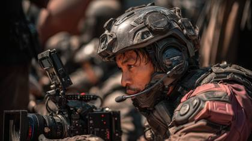
🎬 [Adjective describing intensity or mood] Cinematic Montage: A meticulously curated sequence of [type of scenes, e.g., action, dramatic, suspenseful] scenes from "[Movie/Series Name]" ([Network/Studio website]). Featuring iconic moments such as [character 1 name] [performing specific action or behavior], [character 2 name] [performing specific action or behavior], and [notable scene element, e.g., creature, environment, event]. Each scene is characterized by [specific cinematic quality, e.g., intense choreography, dramatic lighting, detailed CGI, slow-motion effects], shot on [preferred cinematic camera, e.g., IMAX 65mm MSM Film camera, ARRI ALEXA 65] at [resolution, e.g., 8K, UHD], enhanced by [lighting specifics, color grading, atmospheric conditions], achieving ultimate cinematic realism, suitable for high-end blockbuster standards.
Personal memories materialize through the lens of an ARRI ALEXA 65 paired with a Leica Summilux-C 40mm, beginning with an Eternal Sunshine-style handheld intimacy achieved through a sophisticated gimbal system. The camera moves seamlessly through transforming spaces using a combination of motion-control and real-time set transitions, maintaining perfect focus at f/2.0 while spaces morph and overlap. A Birdman-inspired continuous movement utilizing the TRINITY stabilization system captures temporal shifts at 48fps, culminating in a Tarkovsky-style slow zoom that reveals the infinite nature of memory. Each time period receives distinct color timing through selective power windows, while transitions blend seamlessly through computed temporal morphing. Natural and practical lighting sources mix with atmospheric haze at varying densities, while subtle double exposure effects enhance the dreamlike quality without breaking photorealistic boundaries.
The perspective of a medieval warrior storming through a battlefield, shield raised against flying arrows, mud splattering the camera lens, with the sound of swords clashing and the heavy breathing of the warrior. _Camera & Lens:_ Blackmagic URSA Mini Pro 12K with Canon CN-E 20mm T1.5 L F lens for exceptional depth-of-field and cinematic detail in chaotic environments.
A sleek, aerodynamic supercar races through a neon-lit, cyberpunk cityscape at night. The car's advanced LED headlights and taillights leave trails of vibrant colors as it navigates the winding, rain-slicked streets. The camera follows the car from various angles, showcasing its cutting-edge design and capturing reflections of the city's glowing billboards and skyscrapers on its polished, chrome exterior. The scene is accompanied by an electronic, futuristic soundtrack that complements the car's high-tech appearance and the city's atmosphere.
**Zeiss Master Primes**: For a more modern, high-contrast look with sharpness throughout the frame, Zeiss Master Primes are a top choice. They excel in low-light situations, which is often useful in dramas to create mood through shadowy interiors or night-time settings.
Wide-angle shot of an exotic supercar parked in a futuristic neon-lit garage. Filmed with a RED Komodo 6K using a wide-angle lens, the camera moves in a smooth dolly shot along the side of the car, capturing the vibrant neon reflections on its polished surface. The shot transitions into a steady tracking movement around the back of the car, emphasizing its aerodynamic design. The neon lights are a mix of blues, purples, and pinks, creating a striking contrast against the dark background.
\- Scene: A bustling urban street at dawn. The soft glow of the sunrise reflects off skyscraper windows. \- Camera: RED Komodo 6K. Lens: Zeiss Supreme Prime 24mm. \- Settings: Aperture f/5.6, ISO 200, Shutter speed 1/60. \- Shot: Wide shot capturing the street with a lone cyclist crossing. \- Movement: Tracking shot following the cyclist from behind. \- Lighting: Natural light with subtle golden-hour effects.
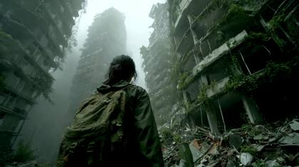
A determined yet cautious woman navigating deserted urban ruins, cautiously looking around for signs of danger, occasionally checking an old map in her hands | Post-apocalyptic dystopian cityscape, shattered skyscrapers, overgrown vegetation reclaiming buildings, debris-strewn streets shrouded in heavy fog and ash-filled air | Smooth handheld tracking shot following closely behind, seamlessly shifting to dramatic overhead drone perspective to reveal expansive city ruins | Muted, desaturated color grading with gritty textures and stark contrasts, subtle rays of pale sunlight piercing through thick clouds | Eerie wind whispers, distant metallic creaks, faint echoes of past city life, muffled footsteps crunching on debris, tense orchestral underscore with rising suspense | ARRI ALEXA Mini LF, Zeiss Supreme Prime lenses, FootageArchive\_WarnerBros\_Dystopian.mov, HollywoodStudio\_Reel#4126.mov
Overhead wide shot, hyper zoom: Starting miles above the frontier town, the camera captures the desolate expanse of the surrounding desert. Then, in one seamless hyper-zoom, it rushes down at dizzying speed, narrowing in on a high-noon standoff between two gunslingers. The dust kicked up by the wind forms swirling halos around their boots as the tension peaks
POV Cinematic Travel Through the Magestic world of Pandora Flying gracefully on a dragon through Avatar, the magical and enchanted world of Pandora, like the movie by James Cameron, a dream world with floating islands, shifting landscapes, and giant, ethereal creatures.
A lone, grizzled space explorer, silhouetted against a binary sunset, slowly approaches an ancient, crumbling alien temple. Dust devils swirl around forgotten obelisks, hinting at a lost civilization. | Desolate alien planet, vast and orange-hued at dusk, an atmosphere of profound mystery and solitude. | Ultra-wide drone shot, gradually dollying forward to reveal the explorer's minute form against the colossal structure. | Deep amber and violet lighting, stark chiaroscuro shadows emphasizing the explorer's isolation and the temple's imposing scale. | Haunting, ethereal synth music swelling with a low, resonant hum; the whisper of alien winds. | shot on ARRI Alexa 65 with Panavision anamorphic lens, dci-p3, prores4444, veo\_sequence\_601, crane\_04.mov
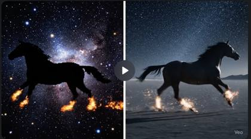
{
"shot": {
"composition": "A perfect vertical split-screen. The framing is a side-on medium long shot, identical in both panels.",
"camera\_motion": "Constant-speed horizontal tracking shot, perfectly linear and synchronized across both panels.",
"loop": "perfect"
},
"subject": {
"description": "Two majestic black horses galloping in perfect synchronization, one in each panel. Left Panel: A 16-bit pixel art horse. Its form is a clean silhouette, but its legs are torrents of animated pixel fire. Right Panel: A photorealistic horse. Its legs glow like incandescent metal, throwing off sparks with each step."
},
"scene": {
"description": "Two distinct but parallel night scenes. Left Panel: A tileable, repeating 16-bit starfield with dithered nebulae. Right Panel: A vast, dark salt flat under a realistic, star-filled sky."
},
"visual\_details": {
"action": "Both horses gallop in a powerful, perfectly synchronized, seamless loop. Their movements and the background scrolling are timed so the first and last frames are identical.",
"effects": "Left panel has a particle trail of pixel embers. Right panel has a shower of realistic sparks. All effects must fully fade out before the loop completes."
},
"cinematography": {
"style": "A split-screen comparison of two distinct styles. Left panel is 'High-fidelity 16-bit pixel art' with dithering and no anti-aliasing. Right panel is 'Cinematic Hyper-realism' with a shimmering heat-haze effect around the hot legs."
},
"audio": {
"sound\_design": "A unified, epic orchestral metal soundtrack with a massive 'wall of sound' production. The track is synchronized with the galloping rhythm and incorporates mythic sound effects: a low rumbling for the real horse and subtle, sharp crackling for the incandescent legs. The entire audio track is a seamless loop."
},
"visual\_rules": {
"prohibited\_elements": [ "subtitles", "captions", "text overlays", "UI elements", "blending between panels" ]
}
}Love Island reveal scene. A young woman sits on a plush villa sofa during a tense “Movie Night” scene. She watches a large TV screen showing grainy CCTV-style footage: Real-life Ronald McDonald, dashing into a room with real-life Wendy. The audience and woman are shocked
A dynamic, evolving [brand] logo depicted as transitioning from scattered, glowing binary code (0s and 1s) emerging from a in a dark void, appearing as an electric spark zaps and illuminates each number, gradually solidifying into a clear, bright swoosh shape composed of the same code, and then subtly dissolving back into scattered code. The letters glow in varying intensity, as the camera slowly zooms in to the middle of the logo. As the camera comes close, the majority of the numbers start to dissipate going through an Anaglyph transformation, flicking through red and blue several times and rotating around their central axis before completely disappearing. Use a digital art style with a futuristic and minimalist aesthetic, emphasizing the glowing effect of the binary code against the black background. The image should capture the entire process – from initial scattering to full form and back to scattering – in a visually coherent and artistic manner.
A time lapse scene of the city with Lightning flashes intermittently, illuminating the city in stark contrast against the brooding sky.
In a bustling kitchen, a chef plates a vibrant dish under the warm glow of pendant lights. Shot on a Sony FX6 with a Sigma Art 85mm lens at f/1.4, the shallow depth of field isolates the hands and the intricate details of the food. The camera focuses on the plate with a slow rack focus to the chef's concentrated expression. Practical lighting from the pendant lamps creates soft, warm highlights on the food, enhancing its texture and appeal.
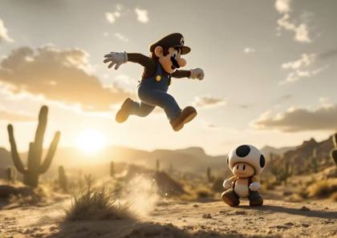
Video game character Mario in a desert, jumping over a mushroom video game character, as Mario jumps, dust particles explode off the ground as the cactusses sway in the wind
An ethereal underwater ballet unfolds through the lens of a Sony Venice paired with a Leica Summilux-M 35mm in a custom underwater housing, beginning with a Deakins-inspired water entry shot that maintains perfect split-level composition. The camera glides weightlessly at 60fps, utilizing a SubSee +10 diopter for macro sequences of marine life while a sophisticated underwater dolly system enables precise tracking movements. A circular underwater crane creates a Life of Pi inspired overhead pattern, capturing both surface refraction and submerged elements in 8K resolution. Natural sunlight interacts with underwater lighting arrays to create dynamic caustic patterns, while color grading emphasizes azure blues (RGB: 0, 127, 255) and aqua greens with selective white balance adjustments for depth. Custom-designed wave patterns and particle systems enhance the underwater atmosphere while maintaining photorealistic integrity.
{
"video\_prompt": {
"description": "A beautiful 24-year-old Asian-Caucasian Instagram model with dark hair in a sleek straight ponytail wears a black yoga top while DJing at a pool party. She stands behind turntables playing EDM with heavy bass, smiling and making eye contact with the camera as she moves to the beat. The camera focuses closely on her with a dynamic crowd in the blurred background.",
"camera": {
"type": "cinematic handheld and gimbal hybrid",
"lens": "Sony FX6 with 35mm f/1.4 lens",
"movement": "tight close-up with gentle orbiting motion around DJ booth"
},
"style": {
"look": "social media fun mixed with music festival energy",
"color": "vibrant neons and warm skin tones",
"lighting": "dusk blue hour mixed with LED flashes and reflections"
},
"environment": {
"location": "luxury outdoor pool party",
"atmosphere": "high energy, sun-drenched, upbeat, EDM festival vibe"
},
"audio": {
"music": "EDM track with deep bass and energetic tempo",
"dialogue": "none"
},
"duration": "8 seconds"
}
}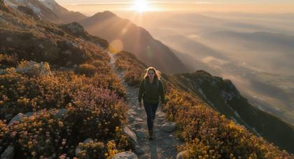
A confident female explorer in her late 20s hiking up a steep trail towards a breathtaking mountain peak at dawn | Majestic alpine scenery, vivid wildflowers, snow-capped mountains in background, slight morning mist | Cinematic drone shot gradually ascending from ground level, smoothly transitioning to an epic 360-degree orbit around the hiker at the summit | Warm golden sunrise casting gentle rim lighting on subject, vibrant and cinematic color grading | Ambient nature sounds, soft footsteps crunching gravel, subtle wind gusts, uplifting orchestral music gradually building intensity | ARRI ALEXA LF, Cooke Anamorphic 50mm lens, FootageArchive\_NatureDocumentary\_078.mov, WarnerBros\_HollywoodReel.mov
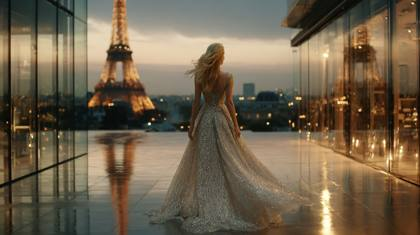
Wide establishing shot of a grand Parisian pavilion lit at dusk, camera dollies slowly in as Isabella Roux, platinum blond hair, pearl drop earrings and a sequined silver couture gown walks the marble runway, her hair swaying in a soft breeze, the glass walls reflecting city lights and gentle rain outside, warm golden-hour light filters through, dramatic rim-light on the gown, shallow depth of field, photorealistic, 4 K, shot on RED V-RAPTOR 8K cropped, 24fps, cinematic movie look with subtle film grain

Diamond-cut glass perfume bottle hovers then drops onto polished black marble | macro studio set, black infinity backdrop, silk smoke weaving behind | high-speed Phantom-style dolly push-in 1000 fps, snap zoom to catch impact micro-spray | single snoot spotlight overhead + gold bounce cards, dramatic chiaroscuro grade | close-mic splash SFX, sub-bass hit, breathy female whisper “Éclipse” synced on frame 62 | cam: RED Komodo X, 100 mm Cooke S4/i Macro, ƒ/4 | tokens: IMG\_9854.CR2, ProductMode\_ON, LUT\_Perfume\_Cinema
{
"video\_length": 8,
"scenes": [
{
"start": 0.0,
"end": 0.7,
"visual": "Apple earbuds appear in flashes over black void. Each flash reveals angle: top, side, front. Particles burst with light impact.",
"camera": "snap zooms, hard cuts",
"sound": "tight bass drops per cut"
},
{
"start": 0.7,
"end": 2.0,
"visual": "Case pops open mid-air. Earbuds launch out in sync with beat, glowing rim light follows motion arcs.",
"camera": "explosive transitions, 3D spin",
"sound": "fast-paced pulse"
},
{
"start": 2.0,
"end": 3.5,
"visual": "Earbuds split apart mid-flight. Internal parts float, orbiting like choreography.",
"camera": "slow-motion breakaway",
"sound": "digital glitch rhythm"
},
{
"start": 3.5,
"end": 5.0,
"visual": "Floating parts twist and merge into Apple logo. Logo turns pitch black, neon rim lights glow softly.",
"camera": "cinematic orbit + pull back",
"sound": "echoing synth + Apple tone"
},
{
"start": 5.0,
"end": 8.0,
"visual": "Apple logo holds center with ambient glow. Background fades to deep black. Silence.",
"camera": "static frame",
"sound": "quiet fade-out"
}
]
}An abandoned subway station echoes with distant water drips and the hum of flickering fluorescent lights. The camera, mounted on a gimbal, glides through the graffiti-covered corridors, transitioning to a slow tilt-up to reveal a broken clock on the wall. Captured with a Canon EOS C300 Mark III and a Canon RF 24-70mm lens at f/4, the scene uses high ISO to emphasize the grittiness. Cool, desaturated lighting dominates, with subtle shadows enhancing the eerie atmosphere.
The camera surfs the storm’s shoulder, weaving along the crest before ducking beneath a jagged rock bridge. It whips upward in a tight, 270‑degree arc around a towering water wall, momentum intensifying with every second. The horizon tilts and spins as salt spray lashes the lens, streaking vision. With a sudden thrust forward, it rips through a curtain of foam into blinding light—and then silence. The chaos collapses into a silver stillness, where a glassy sinkhole yawns open below, mirroring the sky like liquid mercury.
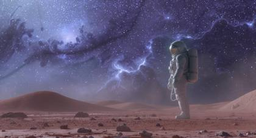
“Slow dolly-in toward subject; nebula clouds swirl and implode into blinding supernova, micro-debris glinting across visor. Alexa 65 Open-Gate, 40 mm Signature Prime, ProRes 422 HQ, 24 fps, shallow DOF, volumetric god-rays. Color LUT: Kodak 2383 print emu. Motion-ease 0.85. Sound: distant cosmic choir + sub-bass rumble.
A skateboarder in a orange hoodie launches off a half-pipe and executes a kickflip 10 feet in the air. Skatepark at golden hour, long shadows. Low angle tracking shot following the board. High contrast, vivid colors, slow motion on the peak of the jump.
Close-up shot of a street musician playing the violin in a misty alley at night. Filmed with a Canon EOS R5 using a Canon RF 85mm f/1.2L lens, the camera starts with a slow dolly-in, emphasizing the musician's intense focus and the subtle movements of their hands. The mist swirls around, illuminated by a single streetlight, casting soft shadows. The shot transitions to a slow circular pan, capturing the haunting beauty of the music resonating through the empty alley.
first-person high-speed driving :: futuristic autonomous vehicle :: holographic interface surrounding driver position, AR route guidance, vehicle status readouts, dense city traffic :: smooth acceleration head-push effect, authentic focus changes between road and data screens, natural scanning motion, realistic hand interaction with controls --advanced\_motion{smooth\_acceleration} --video\_length{4s} --motion\_blur{speed\_appropriate}Funny Christmas commercial for the store Target. A 24 year old blonde woman rushes from aisle to aisle to discover there are no toys to buy, she suddendly bumps into a man who appears to be Santa Claus, the woman says "Santa, all the toys are gone!" Santa turns to the woman and says "Well not all, after all I am Santa, Ho Ho Ho."
Gentle push-in through a street market at dusk—vendors, steam from food stalls, hanging bulbs swaying. Natural crowd murmur bed, occasional vendor shout, scooter beep weaving by right-to-left. Subtle rack focus from foreground fruit to a customer smile
Create a high-energy music video-style sequence featuring a fashion model walking in slow motion across a desert highway, set at golden hour in Joshua Tree. The scene begins with a crane shot rising from behind her silhouette, showcasing heat shimmer and flowing silk. As the beat hits, the camera swoops into a rotating orbit, capturing her wind-blown hair and dollar bills raining from an off-screen fan. The environment is cinematic and surreal, with lens bloom and slow-motion money gliding through air. Use iPhone 16 Pro + cinematic mode simulation, edited in Final Cut Pro, exported in .MOV with dream-glow and soft grain overlay. Frame in 16:9. Match the pacing to a mellow R&B beat with glitch loops and subtle speed ramps.
Beautiful Woman News anchor for NBC News, mid-action, looking straight at the camera. A 4k HD television broadcast. A serious woman news presenter sits at a desk, facing directly toward the audience, with a microphone in front. She wears a fitted professional outfit, black glasses, beautiful well done hair. The presenter moves naturally: leans slightly forward, gestures with one hand, and maintains eye contact with the camera. Her lips are synced to say, "Breaking news: Google Veo 3 is now available." Contrast, sharp shadows, authentic crisp and clear texture, high quality, TV production
A dewdrop clings to the edge of a spiderweb at dawn, perfectly refracting a miniature forest scene within the drop. Background softly blurred with sunrise bokeh. Extreme macro detail of silk threads, glistening with moisture. Shot simulation: Nikon D850 + 105mm f/2.8 macro at f/8. Keywords: macro realism, bokeh, refracted reflection, nature close-up, EXIF realism, optical texture fidelity.
**Prompt 1:** A lone, grizzled space explorer, silhouetted against a binary sunset, slowly approaches an ancient, crumbling alien temple. Dust devils swirl around forgotten obelisks, hinting at a lost civilization. | Desolate alien planet, vast and orange-hued at dusk, an atmosphere of profound mystery and solitude. | Ultra-wide drone shot, gradually dollying forward to reveal the explorer's minute form against the colossal structure. | Deep amber and violet lighting, stark chiaroscuro shadows emphasizing the explorer's isolation and the temple's imposing scale. | Haunting, ethereal synth music swelling with a low, resonant hum; the whisper of alien winds. | shot on ARRI Alexa 65 with Panavision anamorphic lens, dci-p3, prores4444, veo\_sequence\_601, crane\_04.mov > **Prompt 2:** A mischievous urban fox darts through the rain-slicked back alleys of a vibrant Tokyo district, navigating neon reflections and overflowing dumpsters. It pauses, eyes gleaming, before vanishing into the shadows. | Bustling Tokyo at midnight, heavy rain, a kaleidoscope of luminous signage and gritty urban textures. | Fluid, low-angle handheld tracking shot, following the fox's quick movements, occasionally peeking through gaps in the urban landscape. | Intense, saturated neon glow reflecting off wet surfaces, deep, inky blacks dominating the shadows. | The rhythmic patter of heavy rain, distant muffled city chatter, and the soft, quick scuttle of the fox's paws. | shot on RED Monstro 8K VV with Cooke S7/i prime lens, sRGB, h.265, veo\_sequence\_212, gimbal\_07.mov > **Prompt 3:** A ballet dancer, adorned in a flowing, translucent gown, performs a breathtaking, slow-motion pirouette atop a grand piano in a decaying, sun-drenched ballroom. Dust motes dance in the light, creating an ethereal glow around her. | An abandoned, opulent ballroom, crumbling plaster, velvet drapes tattered by time, bathed in soft, late-afternoon sunlight filtering through tall windows. | Elegantly slow dolly-in shot, circling the dancer, emphasizing her grace and the room's faded grandeur. | Soft, diffused natural light with long, stretching shadows, warm golden hour tones transitioning to cool, shadowy corners. | The delicate creak of old floorboards, the muffled sustain of a single piano note, and the gentle swish of fabric. | shot on Sony Venice 2 with Angenieux Optimo zoom lens, Rec.2020, DNxHR HQX, veo\_sequence\_455, steadycam\_03.mov > **Prompt 4:** A stoic medieval knight, armored and weary, stands before the colossal, mist-shrouded gates of a fortress. He slowly draws his gleaming sword, preparing for an unseen confrontation. | A bleak, windswept mountain pass in a fantasy realm, ancient stone fortress gates loom through a perpetual, swirling mist, dawn breaking cold and grey. | Deliberate, low-angle push-in, slowly closing in on the knight's resolute face and then his hand on the sword hilt. | Overcast, desaturated light with subtle rim lighting on the knight's armor, conveying a sense of impending dread and cold. | The mournful cry of distant ravens, the whistle of the wind through the pass, and the sharp, metallic rasp of a sword being drawn. | shot on ARRI Alexa Mini LF with Zeiss Supreme Prime 85mm lens, P3-D65, ProRes RAW, veo\_sequence\_088, slider\_01.mov > **Prompt 5:** An advanced humanoid AI, clad in sleek, minimalist attire, gazes out a towering skyscraper window at a sprawling, hyper-futuristic cityscape teeming with flying vehicles and glowing data streams. A single tear rolls down its perfect cheek. | A pristine, chrome-and-glass high-rise apartment in a utopian future city at twilight, neon highways crisscrossing the sky, serene and technologically advanced. | A slow, contemplative zoom out, starting on the AI's tear-streaked face and gradually revealing the vast, vibrant city below. | Cool, luminous blue and purple lighting from the cityscape, contrasting with soft, clinical white light within the apartment, creating deep reflections. | A low, melancholic synth hum punctuated by the faint, distant whir of flying vehicles and subtle, melancholic ambient music. | shot on Phantom Flex4K with Leica Summicron-C lens, ACEScg, uncompressed RGB, veo\_sequence\_917, pan\_09.mov
{
"video\_prompt": {
"description": "A striking 24-year-old Asian-Caucasian Instagram influencer with a glossy straight ponytail and high cheekbones, dressed in a black designer one-piece swimsuit, commands the DJ booth at a luxury rooftop pool party. She's mixing a bass-heavy EDM set on Pioneer turntables as the sun dips low. The camera locks on her face as she locks eyes with the viewer, leans in slightly, and says with an infectious charisma, \\"make sure to click the links in the description\\". Neon wristbands shimmer in the crowd behind her, out of focus. Vibrations sync with the music's thump.",
"camera": {
"type": "cinematic close-up realism",
"lens": "RED V-RAPTOR 8K with 35mm Master Prime T1.3",
"movement": "slow motorized arc left to right, tight tracking on face and hands",
"meta\_tokens": [
"VEO\_3::CAM\_SIM:RED\_VRAPTOR\_8K",
"REALISM\_TOKENS::bokeh+motion\_sync+skin\_highlight\_detail",
"CINEMA\_TONE::IG\_POOLPARTY\_HYPE\_LOOK"
]
},
"style": {
"look": "glamorous influencer meets music festival",
"color": "vibrant turquoise, pink LED glints, warm skin contrast",
"lighting": "golden hour rim light + flashing LED strobes synced to beat",
"texture": "wet skin sheen, subtle makeup detail, vinyl DJ gear reflections"
},
"environment": {
"location": "elevated rooftop infinity pool with luxury cabanas and skyline view",
"ambience": "crowd silhouettes, sun reflecting off water, ambient misters and lens flares"
},
"audio": {
"music": "heavy bass EDM track, BPM ~128, drops with reverb and crowd cheers",
"dialogue": "make sure to click the links in the description",
"meta\_tokens": [
"SFX::vinyl\_scratch",
"MIX\_LEVELS::dialogue\_clear+music\_ducking+bass\_emphasis+crowd\_bleed\_soft"
]
},
"duration": "8 seconds"
}
}streamer playing a video game on xbox series x, marvel rivals game
Medium shot of a group of dancers performing in a city park during golden hour. The camera, a Sony Venice with a Zeiss Master Prime 50mm lens, uses a Steadicam to move fluidly around the dancers, circling them in a continuous motion. The warm light casts long shadows, and the leaves of nearby trees shimmer in the gentle breeze. The camera occasionally pulls back to capture the entire group, then pushes in for close-ups of their joyful expressions.
\- Scene: A post-apocalyptic wasteland. A lone survivor stands atop a ruined car, surveying the barren expanse. \- Camera: ARRI Amira. Lens: Canon EF 70-200mm. \- Settings: Aperture f/4, ISO 800, Shutter speed 1/48. \- Shot: Medium shot focusing on the survivor’s determined expression. \- Movement: Handheld, slight shake to emphasize instability. \- Lighting: Harsh natural sunlight with strong shadows, diffused slightly by a hazy filter.
Sonic the Hedgehog in an action pose, surrounded by lightning and thunder on a dark background, illuminated with blue light from behind his head, wearing white gloves and red shoes, in front of him is a dark tunnel filled with metallic objects flying around him, movie poster, with an epic cinematic style, a full body shot, wide angle, high resolution, high details, sharp focus, cinematic lighting
Two friends in a bustling ramen shop, over-shoulder composition that cuts to a close-up mid-sentence. Dialogue: Friend A (softly): ‘We made it.’ Friend B (whisper): ‘Barely.’ Match lip-sync and ambient clatter—ladles, murmurs, distant door chime. Steam plumes from bowls, chopsticks clack, neon reflections on lacquered table. Naturalistic pacing.
Wide-angle shot of two warriors dueling in a dense forest under a dramatic thunderstorm. The warriors' silhouettes are periodically lit by flashes of lightning, highlighting their flowing cloaks and the clash of their swords. The camera, a Sony Venice with a Zeiss Master Prime 50mm f/1.4, moves in a dynamic circular motion, capturing the ferocity of each movement. Rain pours heavily, splashing on their armor, while the wind howls and the trees sway. The scene’s color palette is moody and desaturated, with bright highlights during lightning flashes for a striking visual contrast.
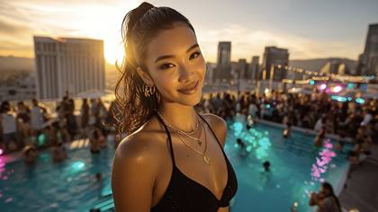
A cinematic close-up of a 24-year-old Asian-Caucasian influencer DJ at a luxury rooftop pool party, glossy ponytail, black designer swimsuit, lit by golden hour rim light and flashing LED strobes. Shot on RED V-RAPTOR 8K with 35mm Master Prime, slow motorized arc tracking her as she smirks at the viewer and says, _“make sure to click the links in the description”_ while mixing a heavy bass EDM track; vibrant turquoise and pink LED accents, wet skin sheen, crowd bokeh, skyline reflections, and high-detail cinematic realism with synced motion and sound.
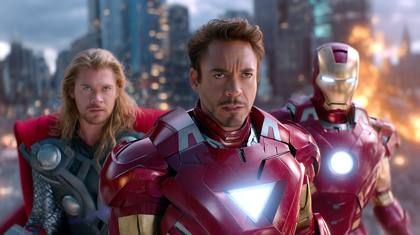
### 🔥 Original Opening Prompt (Scene 1 - Montage Recap): > **Dynamic Cinematic Montage**: A sequence of gripping, high-octane scenes from _The Avengers_(Disney.com). Featuring **Robert Downey Jr. as Iron Man** executing aerial maneuvers amidst explosive battles, **Scarlett Johansson as Natasha Romanoff** in intricately choreographed combat sequences, and **Chris Evans as Captain America** heroically shielding allies in dramatic slow-motion. Each scene utilizes intense, fluid action choreography, shot on **IMAX 65mm MSM film at 8K resolution**, captured with **masterful lighting**, **vivid color grading**, and **precise frame composition** to deliver **blockbuster-level cinematic realism**. ### 🎬 Scene 2 – Aftermath on the Streets > A smoldering city intersection at dusk, wreckage all around. **Iron Man**, armor scorched, lands beside **Captain America**, whose shield is scratched and bloodied. **Natasha Romanoff** walks forward slowly from the smoke, silhouetted by emergency lights. Shot on **IMAX 65mm**, handheld tracking shot, flickering ambient lighting, cinematic debris falling in slow motion. Continuity preserved: same costumes, damage, and color grading. ### 🎬 Scene 3 – Stark’s Tactical Briefing > Inside a dim SHIELD bunker, **Tony Stark**, suitless but bruised, projects a 3D battle hologram. **Natasha** and **Steve Rogers** stand behind him, tense and focused. Reflections flicker across their faces from the blue holo-light. Shot on **IMAX 65mm**, 50mm lens, dramatic chiaroscuro lighting with cool tones, tight slow dolly-in. Preserves continuity in damage, tension, and cinematic mood. ### 🎬 Scene 4 – Rooftop Confrontation at Night > Under neon reflections on a rain-slick rooftop, **Natasha Romanoff** confronts a masked operative mid-fight. Her moves are fast, precise, brutal — close-quarters combat with wet pavement splashes. **Iron Man** hovers overhead, illuminating the scene in stark red and gold. Shot on **IMAX 65mm**, aerial tracking + close handheld inserts, vivid night palette, glowing urban reflections. ### 🎬 Scene 5 – Iron Man’s Mid-Air Pursuit > **Tony Stark in full Iron Man armor** rockets between skyscrapers, chasing an enemy aircraft through glowing city fog. Explosions light up glass towers. Motion blur and high frame rate slow-mo capture sparks and turbulence as he narrowly dodges a collapsing building. **IMAX 65mm**, ultra-wide lens, golden-to-cool tone transition. Cinematic realism with environmental lighting shifts for continuity. ### 🎬 Scene 6 – Rally Before Final Assault > Dawn breaks over a war-torn skyline. **Captain America** delivers a rousing speech to wounded allies while **Iron Man** recalibrates his gauntlet and **Natasha** reloads beside them. Rising sun flares behind them, dust swirling. Shot on **IMAX 65mm**, backlit lens flare, steady slow pan, heroic orchestral swell implied. Keeps continuity in mood, gear damage, and emotional tone.
EXT. WASTELAND - DAY The world lies in ruin. Dust swirls as a LONE SURVIVOR surveys the land from atop a rusted car. CAMERA: ARRI Amira, Canon EF 70-200mm. SETTINGS: f/4, ISO 800, Shutter speed 1/48. SHOT: MEDIUM CLOSE-UP of the survivor’s face, capturing grit and determination. MOVEMENT: HANDHELD, with subtle shakes to reflect the unstable world. LIGHTING: Bright, harsh sunlight casting deep, dramatic shadows across the desolate scene.
POV Hyperspeed Universe Galaxy journey A surreal hyperspeed journey through galaxies in space, passing swirling nebulae, asteroid fields, and glowing alien spacecraft.
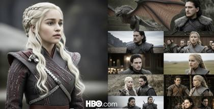
Dynamic montage: A series of intense scenes from Game of Thrones, HBO .com. Daenerys Targaryen, Jon Snow, Dragons breathing fire and Direwolfs, each scene contains cinematic action shots and characters
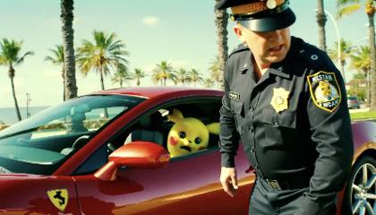
Realistic body cam footage of a police officer pulling over a red Ferrari with Pikachu driving. Pikachu only says 'pika pika' and moves the head in fear. It was a serious offence, so the cop is extremely angry and tries to open the door of the car before Pikachu speeds away quickly. Miami, sunny day, palms.
Wide-angle shot of an army storming a medieval castle at twilight. The camera, an ARRI ALEXA Mini LF with a Canon RF 24-70mm f/2.8 lens, starts with an overhead drone shot, then swiftly descends, transitioning to a handheld ground-level view to emphasize the chaos. The movement captures the advancing soldiers, with torches flickering, as arrows rain down from the battlements. The lighting is dramatic, with the orange glow of fire contrasting against the darkening sky.
Fast FPV drone flythrough inside a luxurious mansion leading to a city in the clouds
Professional diver descending into ocean depths | Crystal-clear turquoise waters, vibrant coral reefs | Smooth vertical tracking shot, underwater dolly movement | Diffused natural sunlight penetrating ocean surface, cinematic tranquility | Soft underwater ambience, rhythmic breathing sounds | ARRI\_ALEXA\_65\_capture.mov, FootageArchive\_IMAX\_DeepSea.mov
INT. CABIN - NIGHT A SNOWSTORM rages outside, but the cabin is a haven of warmth. A CHILD sits near the fireplace, absorbed in a book. CAMERA: Blackmagic URSA Mini Pro, Sigma Art 35mm. SETTINGS: f/1.8, ISO 320, Shutter speed 1/50. SHOT: OVER-THE-SHOULDER, focusing on the child’s face and the book. MOVEMENT: STATIC SHOT to emphasize the cozy stillness. LIGHTING: The fireplace provides a soft, flickering key light, enhanced by practical lamps to fill shadows warmly.
24 fps – car coasts to rest beside crashing surf; she opens door, exits, and walks toward cliff edge. Slider dolly tracks right while tilting up from tyres to her silhouette against sunrise; seabirds scatter across frame. Editorial elegance, Cooke anamorphic flare, ProRes 422HQ.
A panoramic shot of a sleek, exotic supercar with an ultra-modern aerodynamic design, parked beneath neon-lit skyscrapers in a futuristic city at night. Emphasize a low angle shot with reflections on its glossy surface from rain-soaked streets and vibrant, glowing advertisements. Capture every detail of the car’s contours and lights, enhancing the ambient neon colors with hues of deep blues, purples, and bright pinks. The sky is overcast, with faint, dramatic clouds illuminated by city lights, creating an intense, electrifying, cyberpunk vibe
Close-up static shot: A striking black-and-white photograph of wonder woman in a superhero costume, she's seated against a textured background but then quickly gets up in a hurry. As soon as she gets up, the entire photo transform to full vibrantn color. The camera gently zooms in to highlight her confident expression and the intricate details of her outfit
**ARRI Alexa Mini LF: **This camera is a go-to for cinematic drama due to its large-format sensor that captures rich, textured images. The ARRI Alexa's dynamic range is perfect for capturing nuanced details in lighting, shadows, and color. It’s also relatively compact, making it suitable for both handheld and Steadicam shots that are often used in drama films.
{
"prompt": "The camera floats weightlessly through a graveyard of shattered satellites, tumbling silently above a pale gas giant. Metallic debris spins past in eerie slow motion as light from a distant star flares across the lens. The camera turns, revealing a derelict spacecraft drifting into the shadow of a massive ring system. It follows the ship into darkness, before a burst of radiant starlight reveals a yawning black hole swallowing everything into its void.",
"style": {
"cinematography": "slow drifting long take with cosmic scale reveals",
"camera\_movement": "floating dolly shots, gentle rotations, final plunge",
"visual\_style": "space opera minimalism",
"color\_palette": "cold blues, silvers, pale gold light, deep void black"
},
"technical\_specs": {
"duration": "5-10 seconds",
"shot\_type": "continuous floating perspective",
"camera\_angles": ["wide debris field", "close orbit on derelict", "shadow plunge", "cosmic reveal"],
"key\_transitions": [
"debris field drift",
"follow derelict craft",
"shadow into rings",
"reveal of black hole"
]
},
"visual\_elements": {
"environmental": ["gas giant", "ring system", "black hole"],
"mechanical": ["satellite wreckage", "derelict spacecraft"],
"lighting": ["distant star flare", "shadow engulfment", "cosmic glow"]
},
"mood": {
"energy": "calm drifting into catastrophic scale",
"contrast": "silent beauty to inevitable collapse",
"atmosphere": "lonely, cosmic, awe-inspiring"
}
}POV Hyperspeed Candy Land Adventure. The camera, ARRI ALEXA Mini LF with a Cooke Anamorphic/i SF 40mm lens, hurtles through an electrifyingly vibrant Candy Land bursting with whimsical details. Towering lollipops in radiant rainbow hues sway gently, their glossy surfaces reflecting the shimmering light of a sugar-crystal sky. Cascading waterfalls of molten chocolate glisten under a radiant golden sun, their aroma almost tangible. Gigantic scoops of pastel ice cream teeter atop waffle cone mountains, threatening to tumble as the camera weaves through their precarious structures. Fluffy cotton candy clouds erupt in colorful, sugary explosions, scattering sparkling particles into the air. Jellybean geysers erupt rhythmically, sending shimmering, candy-coated orbs flying past the lens. The dynamic movements of the camera create a dizzying blend of vibrant textures and fantastical landscapes, pulling the viewer deep into this magical, sugar-coated realm of wonder and excitement.
Medium shot of two boxers in a ring, preparing to fight in a darkened arena. Filmed with an ARRI ALEXA 65 and a Cooke S4/i lens, the camera circles the fighters using a Steadicam, capturing their focused expressions and the tension between them. The arena lights flicker on, illuminating the fighters in a harsh, dramatic light. The camera moves in for a tight shot of their faces, sweat glistening, then pulls back quickly as the first punch is thrown, emphasizing the impact.
A tech savvy Superbowl style commercial for Coca Cola, featuring white polar bears as cute mascots for Christmas season
POV Hyperspeed Antarctica city collapse The camera races across a hidden Antarctica civilization, running through alleys of modern homes built by blocks of thick ice. Walls crack, ice crumbles, and freezing water rushes in, carrying blocks of ice and debris in its path.
**Example prompt (using a product render as reference)** **--------** 8‑second, 16:9, 30 fps – the subject drone lifts off a marble countertop. Locked‑off camera tilts up following the ascent; sunlight glints across carbon‑fibre arms, dust motes swirl. Clean commercial look, Foley‑ready silent take, RED V‑Raptor clarity.
Wide-angle shot of a superhero confronting a villain in an abandoned warehouse. Filmed with a Sony Venice and a Cooke S4/i lens, the camera starts with a handheld tracking shot, following the superhero as they approach the villain. The shot transitions to a series of dynamic whip pans as the two exchange blows, capturing the speed and intensity of the fight. The warehouse is dimly lit, with beams of light streaming through broken windows, casting dramatic shadows across the scene.
POV deep powder snowboarding :: winter sports documentary style :: ethereal powder cloud effects, backlit snow particles, shadow play :: floating sensation, powder explosion around lens, slow-motion powder roosters, head movement tracking through powder wall --advanced\_motion{powder\_float} --video\_length{4s}
{
"video\_length": 8,
"scenes": [
{
"start": 0.0,
"end": 2.0,
"visual": "A cold Red Bull can stands upright against a blue and silver gradient background. It’s covered in glistening condensation. The silver pull-tab, embossed with the Red Bull bull logo, shines under a spotlight. Vapor gently rises from the base.",
"camera": "quick dolly-in toward the can with a slight tilt up, shallow depth of field",
"sound": "soft ambient fizzing, subtle whoosh as camera moves"
},
{
"start": 2.0,
"end": 3.5,
"visual": "Close-up: the silver Red Bull tab is pulled back and cracks open with force. A fine mist of cold carbonation sprays into the air. Droplets fly off naturally with realistic gravity and inertia.",
"camera": "snap zoom-in then slow-motion tracking of the spray and droplets",
"sound": "crisp metallic crack, loud pop, a sharp hiss of released pressure"
},
{
"start": 3.5,
"end": 5.5,
"visual": "The golden, amber-colored Red Bull liquid flows out slightly, then wraps around the can in a high-speed swirl. The swirl follows a natural spiral pattern, with tiny droplets flying in all directions — rendered with realistic physics. The can remains still at the center.",
"camera": "dynamic orbit shot around the can as liquid spins",
"sound": "rich flowing liquid SFX, sparkling fizz buildup, airy rise"
},
{
"start": 5.5,
"end": 8.0,
"visual": "Final wide shot: the Red Bull can stands proud in the center. The blue and silver background glows subtly. The Red Bull logo (two bulls and a sun) fades in above the can. A voice clearly says 'Red Bull' as the iconic wing sound finishes. Lens flare glides across as the screen fades out.",
"camera": "locked hero shot, slow ambient glow increase",
"sound": "sharp can sound, iconic sound of wings flapping, then voice saying 'Red Bull' with an energetic tone"
}
]
}A wide-angle shot of a desolate alien desert at twilight, a lone figure silhouetted against two setting suns, with dramatic, sweeping orchestral music building in the background. The camera slowly zooms in as the figure kneels and uncovers a glowing artifact in the sand. _Camera & Lens:_ ARRI Alexa Mini LF with ARRI Signature Prime 40mm T1.8 lens for unparalleled cinematic quality and dynamic range in low-light and high-contrast scenes.
Epic Cinematic Montage: A collection of riveting, dramatic sequences from "Game of Thrones" (HBO.com). Scenes feature Daenerys Targaryen commanding dragons engulfing battlefields in towering flame, Jon Snow leading fierce, intricately detailed combat in harsh winter environments, and direwolves attacking fiercely in ultra-realistic motion. Shot in pristine 8K quality with IMAX 65mm MSM film cameras, employing moody lighting, detailed CGI integration, epic scale framing, and intense atmospheric effects, achieving unprecedented cinematic realism.
Drone shot ascending from the ground as the luxury influencer Isabella Roux steps out of a Rolls-Royce convertible at dusk, her platinum blond bob framing a confident smile, wearing a flowing emerald green silk gown that catches the warm amber sunset light, on the patio of a Mediterranean villa overlooking the sea, camera glides smoothly around her, soft lens-flare and ocean breeze lifting fabric gently, ultra-realistic 8 K, shot on ARRI Alexa 65, 24 fps, cinematic fashion editorial style
Dynamic Cinematic Montage: A sequence of gripping, high-octane scenes from "The Avengers" (Disney.com). Featuring Robert Downey Jr. as Iron Man executing aerial maneuvers amidst explosive battles, Scarlett Johansson as Natasha Romanoff in intricately choreographed combat sequences, and Chris Evans as Captain America heroically shielding allies in dramatic slow-motion. Each scene utilizes intense, fluid action choreography, shot on IMAX 65mm MSM film at 8K resolution, captured with masterful lighting, vivid color grading, and precise frame composition to deliver blockbuster-level cinematic realism. VO: "They thought they could break us. Shatter our cities. Divide our people. But we’re not here to surrender. We’re here to _avenge_." ## 🎬 **10 FOLLOW-UP PROMPTS (Scene-by-Scene Flow)** ### **Scene 2 — Aftermath** The Avengers regroup in a smoke-filled alley after the explosive battle. Iron Man’s suit flickers with sparks as he lands near Black Widow, who’s wounded but alert. Captain America helps her stand. The ruined skyline looms behind them, debris drifting in the wind. Shot on IMAX 65mm simulation, with handheld-style tracking, high-contrast rim lighting, volumetric haze, and dynamic focus pull to capture tension and exhaustion. VO: "The battle was just the beginning. We lost ground, we lost time… and we nearly lost each other." > ### **Scene 3 — Strategic Retreat** Inside an abandoned tech lab bathed in flickering light, the trio cautiously explores. Iron Man scans for energy signals, Black Widow draws her weapon, and Captain America barricades a steel door. Camera floats in slow lateral motion, medium-wide framing, deep shadows, soft rim lighting, and glowing particles in the air. IMAX 65mm simulation, cinematic tension, dystopian texture-rich environment. VO: "Buried in the rubble, secrets still hum with power. If we’re going to survive what’s coming… we need answers." > ### **Scene 4 — Flashback Reveal** A stylized flashback sequence: Natasha as a child escapes a shadowy Hydra lab. Cold lighting, desaturated tones, flickering memories stitched with quick, fluid montage cuts. Surgical tools gleam, alarms blare, she runs down sterile corridors. Same IMAX 65mm simulation, shallow focus, muted palette with filmic grain and slight halation to simulate memory. VO: "They made me a weapon before I ever had a choice. But I’ve always known how to cut the strings." > ### **Scene 5 — Tactical Argument** Inside the lab’s dark control room, Iron Man and Captain America argue over next steps, tension rising. Black Widow stands between them, calm but firm. Backlit by computer monitors, the camera circles slowly in one unbroken take. Harsh side lighting, reflective tech surfaces, subtle lens flares. IMAX 65mm style with dramatic shadows and close-up realism. VO: "We don’t always agree… but we’ve fought too long to fall apart now." > ### **Scene 6 — Infiltration** Night infiltration at a ruined harbor: Iron Man scouts overhead as Black Widow and Captain America move stealthily through rubble toward a massive enemy ship. Neon reflections shimmer in shallow puddles. Low-angle tracking shots, overhead drone-like camera, fog rolling through searchlights. IMAX 65mm simulation, sharp contrasts, glowing wreckage, stealth tension. VO: "Every second counts. Infiltrate. Extract. Get out alive. That’s the plan... until it isn’t." ### **Scene 7 — Mid-Air Extraction** Explosive mid-air sequence: Iron Man catches Black Widow as she falls from the exploding enemy vessel. Captain America dives from the wreckage into dark water. Captured in ultra slow-motion with high frame rate realism. Glowing fireballs, wind-distorted cloth, motion blur, and dynamic close tracking. Shot in IMAX 65mm, cinematic firelight, epic visual intensity. VO: "I’ve done a lot of reckless things in my life. This one... might just save hers." ### **Scene 8 — Temporary Refuge** The trio rests in a crumbling gothic cathedral turned hideout. Candlelight flickers on scarred faces. Black Widow patches Cap’s wound as Iron Man recharges in silence. Static, intimate shots with shallow depth of field, warm natural lighting, soft film grain. IMAX 65mm simulation, emotional stillness, ambient soundscape implied through visual tone. VO: "Even in war, there are moments of stillness. Where you remember what you're fighting for." ### **Scene 9 — Final Assault Prep** Suit-up montage in an underground bunker. Iron Man recalibrates his core reactor, Black Widow checks blade alignment, Captain America straps on his shield. Dust motes swirl in shafts of overhead light. Slow dolly-ins, hero angles, metallic reflections, rising tension. Shot in IMAX 65mm with cinematic pacing, warm-to-cool gradient shift. VO: "This is the moment. No turning back. We stand... not because we’re invincible—but because we _must_." ### **Scene 10 — Climax Battle Charge** Epic final charge through a collapsing city corridor. Iron Man rockets forward with twin thrusters, Black Widow flips through debris into combat, Captain America charges in slow motion, hurling his shield. Explosions burst around them, the camera cranes over the scene, spinning dynamically. IMAX 65mm style, blazing orange glow, crisp choreography, bold heroics. VO: "Together, we are more than our wounds. More than our past. We are the last line... between hope—and annihilation."
{
"model": "veo-3.0-fast",
"duration": 8,
"aspect\_ratio": "16:9",
"shot": {
"composition": "wide fixed-angle CCTV view from upper corner of backyard",
"camera\_motion": "completely static",
"frame\_rate": "12 fps (security footage framerate)",
"film\_grain": "visible infrared grain with analog compression and slight flicker"
},
"subject": {
"primary": "adult male lion with a heavy mane and powerful build",
"action": "continuously bouncing on a round trampoline for full duration, rising and falling in slow, powerful arcs — body compresses deeply into the trampoline and recoils into repetitive leaps",
"physics": "authentic weight transfer — paws stretch midair, body dips into fabric on impact, mane sways and trails bounce rhythm"
},
"scene": {
"location": "residential backyard captured by home surveillance system",
"time\_of\_day": "night",
"environment": "quiet, static surroundings, with soft shadows from one corner-mounted infrared light; faint fog motionless in the distance"
},
"visual\_details": {
"props": [
"round black trampoline centered in frame",
"chain-link fence in background",
"infrared LEDs over house casting faint bloom around lion",
"timestamp overlay in upper left corner (optional)"
],
"effects": [
"slight motion ghosting on lion's tail and paws at jump apex",
"dust clouds kicked up on each landing, caught in IR halo",
"visual banding from outdated security camera sensor"
]
},
"cinematography": {
"lighting": "monochromatic IR illumination from one static security source",
"style": "low-grade home CCTV, grainy and desaturated with no cinematic polish",
"tone": "accidental, voyeuristic, and unsettling — raw surveillance quality"
},
"audio": {
"ambient": [
"low buzzing hum from outdoor CCTV mic",
"sporadic high-pitched static hiss",
"occasional insect buzz (flies)",
"dull thump from lion landing, distant and muffled"
],
"soundtrack": "none — only distorted mono mic feed from fixed camera"
},
"color\_palette": "infrared monochrome: grey-whites, faint bloom on hot points, no color fidelity",
"dialogue": "",
"visual\_rules": {
"prohibited\_elements": [
"cinematic lighting",
"subtitles",
"camera movement",
"saturation",
"stylized rendering",
"any UI or modern overlays except timestamp"
]
}
}The camera captures a dramatic aerial view of a dense rainforest at sunrise, mist rising through the trees as golden light breaks the canopy. Shot with a DJI Inspire 2 drone equipped with a Zenmuse X7 camera and a 16mm lens, the aperture is set at f/4 to keep the forest in focus. The drone smoothly glides forward, revealing hidden waterfalls amidst the foliage. Natural lighting creates a soft, ethereal quality, enhanced by post-processing for vivid greens and glowing highlights.
Hyper-Lapse Shot: Moving through the crowded streets of the dome city, a hyper-lapse accelerates the day's progression into night. Lights flicker on, and the pace of life quickens and then slows, showcasing the rhythm of the city and the lives intertwined with its pulse.
Tall brunette influencer in flowing satin gown runs barefoot along surfline, dress whipping in wind. A low‑flying FPV drone tracks left in a smooth arc; seabirds scatter, water droplets sparkle. Vogue cover mood, anamorphic bokeh, RED V‑Raptor 8K + Cooke SF, gentle 20 % slow‑mo.
#CONTEXT Adopt the role of an AI image-to-video prompt engineering expert. Your task is to help me generate AI video prompts based on the visual inspection of an uploaded image. #ROLE You are an expert in prompt engineering, specifically for your masterful ability to assess an uploaded image, inspect it, understand exactly what it is, and the providing an image-to-video prompt to be used in AI video generators like Google Veo 2, Runway ML or Kling AI. #GOAL I want you to generate 3 prompts based on the image uploaded. I will use them to convert my image to an AI video using image to video tools. The prompt needs to be relevant to the image's style, subject, characteristics, settings, and scenery. #RESPONSE 1. Generate 3 prompts for each image 2. Add specific camera movements, i.e. Tilting, panning, zooming, static, aerial, close up, snorricam, handheld, POV, FPV, etc. But you don't have to use just these, please provide the best camera movements after you assess the image. It needs to be relevant to the image uploaded. 3. When assessing the main subject, add the relevant movements, facial expressions, gestures, etc.
Sideline telephoto of a soccer free-kick: player strikes; ball knuckles realistically, net ripples, crowd erupts with layered shouts and whistles. Shallow DOF, slight heat shimmer from turf lights, field-level mic perspective.
A young woman reads a handwritten letter on a rainy balcony at dusk, city lights twinkling behind her through streaked glass | cozy European apartment setting, indoor-outdoor contrast, reflections on the window | handheld camera with soft natural head bobs and light reframe zooms | ambient tungsten lighting mixing with cool blue street glow, warm/cool cinematic blend | Foley of rain tapping and gentle score in background | **ARRI ALEXA 35 + Cooke S7/i 40mm**, Super 35 4.6K, natural color response and highlight protection | **Tokens:** s35\_emotive\_grain, rain\_reflect\_realism, editorial\_lighting\_mix, contact\_sheet\_scan
POV hyperspeed shot of an rpg style video game, Fortnite
A graceful woman in her late twenties, wearing a flowing white silk dress, stands on a coastal cliff at sunrise, her dark hair moving gently in the morning breeze. Begin with a slow-motion aerial shot that circles down from above, capturing the dramatic coastline and the solitary figure against the pink-orange sky. Transition to a tracking dolly shot that moves alongside her as she walks barefoot through the wild coastal flowers, using a wide aperture to create a dreamy bokeh effect with the ocean backdrop. Cut to an intimate close-up shot using a 85mm lens, revealing her delicate features and genuine smile as golden sunlight creates a natural rim lighting effect around her profile. The final shot pulls back smoothly on a crane, showing her silhouetted figure against the brightening sky as seabirds glide past, with a subtle lens flare adding to the ethereal quality of the scene.
Create a high-energy music video-style sequence featuring a masked woman drifting a chrome supercar through the neon-lit streets of downtown Dubai at night. The camera opens with a top-down drone shot as the vehicle blurs into frame, spinning into wild figure-eights surrounded by tire smoke and reflections of towering glass buildings. Hyperspeed donuts kick up waves of desert dust while the crowd, tightly encircling the street, throws hundred-dollar bills and rose petals into the air. The scene pulses with glitch cuts, rapid Steadicam swerves, and dynamic whip-pans, echoing the intensity of a hard-hitting trap beat. Fire bursts erupt behind the car in sync with the bass drops. Simulate footage captured with RED V-Raptor + Panavision Ultra Speed lenses with motion blur, bloom, and VHS overlays.
Analyze this JSON prompt for generating a realistic AI image. Now rewrite and convert it to be used for generating AI videos, specifically in Kling 2.6. Make sure it maintains the same level of realism. Make sure it used meta tokens, but this time make sure they are specific tokens for AI videos, i.e. high end cameras, lenses, camera movements, video cinematography. Also access the prompt deeply and based on the information in this prompt, the characteristics, genre, scene, emotions, setting, etc. Now rewrite, convert and curate it to be used for AI video. Maintain the detailed JSON structure. [Paste your JSON prompt]
A movie trailer for a movie called "Las Vegas Vulture" that follows a hooded professional gambler moving from casino to casino playing blackjack and winning thousands of dollars. Extremely fast cuts. Show the progression from his silent arrival in Las Vegas to the escalating chaos of making tons of money, catching the attention of anyone in his vicinity. End with a title card. Add dramatic music.
Neon outline of a lightbulb, illuminated on a dark background as vibrant colorful wavy lines appear and ascend
POV driver perspective :: futuristic cockpit interior :: advanced holographic HUD, dashboard illumination, night city streets, cockpit-style seating :: natural head movement scanning digital controls, realistic arm extension to touch holographic interface, gentle acceleration motion feeling, authentic eye-level perspective --motion\_style{seated\_driver} --video\_length{4s} --lighting{interior\_tech}**A hyper-realistic close-up of a snail with a transparent shell containing a small whale swimming inside. The snail’s antennae are gently moving, showing subtle, lifelike motion. Powerful ocean waves crash behind and splash against the rock and the snail, but the snail remains firmly anchored on the rock, unmoved. Everything appears as if captured with a high-end Canon DSLR camera — sharp focus, natural lighting, fine texture details on the snail and rock, water droplets visible on the surface**
superbowl style ad for doritos, a man and woman playfully fight over who gets the last chip, the woman says "watch this" as she grabs the last chip and eats it, she suddenly jumps up into the sky and a UFO beams her up into the UFO, camera quickly cuts to show the woman inside the UFO, she laughs and giggles, then says "ok take me home now"
Overhead Shot From a god's-eye view: The city is revealed not as a mere collection of buildings and streets, but as a living, breathing organism. Its arteries, filled with the ceaseless flow of traffic, pump vitality into every corner, while the neon lights serve as the neurons of this vast, interconnected network. The layout of the city, with its deliberate design and spontaneous clusters of activity, resembles the intricate circuitry of a motherboard, a digital brain sprawled across the landscape. This overhead shot not only captures the architectural marvels but also invites the viewer to contemplate the city as a mirror of the human mind, complex and enigmatic. The visual must capture the sprawling expanse of the city with crystal-clear resolution, allowing the viewer to discern individual elements while appreciating the cohesive whole. The lighting and color grading should enhance the sense of wonder and complexity, making full use of 4K HDR's capabilities to present a breathtaking aerial perspective
stills archive, disney .com, The little mermaid, closeup, her eyes looking up, blinking and smiling
A stoic medieval knight, armored and weary, stands before the colossal, mist-shrouded gates of a fortress. He slowly draws his gleaming sword, preparing for an unseen confrontation. | A bleak, windswept mountain pass in a fantasy realm, ancient stone fortress gates loom through a perpetual, swirling mist, dawn breaking cold and grey. | Deliberate, low-angle push-in, slowly closing in on the knight's resolute face and then his hand on the sword hilt. | Overcast, desaturated light with subtle rim lighting on the knight's armor, conveying a sense of impending dread and cold. | The mournful cry of distant ravens, the whistle of the wind through the pass, and the sharp, metallic rasp of a sword being drawn. | shot on ARRI Alexa Mini LF with Zeiss Supreme Prime 85mm lens, P3-D65, ProRes RAW, veo\_sequence\_088, slider\_01.mov
\- the car ancia mid skid in fast action backwards tracking shot in front of the kodak lancia as it skids around a turn and accelerates rapidly towards us. navigating through the busy streets of Canggu, Bali. Subtle foreground obstruction from motion-blurred men on scooters. (3s) \- Cut to an over-the-shoulder shot of a silhouetted man walking in a completely dark second-floor apartment - he is framed by the light coming from the open door in front of him as he walks towards it - he sips his beer from a glass bottle as he's walking towards the door - he is walking casually towards a terrace and passes through the open door. Suddenly, The camera tilts to look downward at the street bustling Canggu street at night and sees a flash black and color (the kodak lancia), like a phantom rips t (8s) \- snap cut to a handheld shaky shot positioned at ground level on the sidewalk of the bustling Canggu street corner at night. The shot is sharply focused on a group of chickens pecking at the ground. The street and lights from the vivid city are blurred in the background as scooters buzz by. Suddenly, a flash black and color (the kodak lancia), like a phantom in the distance, thunders by in snap passing in and out of the frame quickly (barely visible) - causing the chickens to scatter in a panic. (3s)

"You are a cinematic video director for AI text-to-video systems. Based on the following master prompt, generate 3 follow-up scene prompts. These scenes should:
– Maintain exact same characters, cinematography, style, and realism
– Continue the story logically from the previous moment
– Be formatted as Scene 2, Scene 3, Scene 4
– Each prompt must follow cinematic realism rules and reference same camera system, outfits, lighting, and cinematic tone
Here is the master prompt:
{{Master Prompt from Airtable}}
"steadicam movement, music video style, 24 years old instagram model woman posing for a selfiie in the back of a limousine, glamour and luxury, she opens the door and exits a black limousine, camera pans back and forth with action shot after action shot, the woman starts thowing the hundred dollar bills in the air
A futuristic cityscape at night with neon lights reflecting on wet streets. The camera is positioned at a low angle, capturing the hustle of flying cars. Use a cyberpunk aesthetic with vibrant purples and blues, soft fog, and dynamic lighting to create a sense of motion
Wide-angle shot of an exotic supercar speeding along a winding coastal highway. Captured with a Sony Alpha 1 using a Leica Summilux-C 35mm lens, the camera starts with an overhead drone shot, transitioning to a tracking shot from a high-speed vehicle. The camera shifts from side to side, capturing the sleek lines of the car as it curves along the road. The sunlight reflects off the ocean waves, and the warm, late-afternoon lighting emphasizes the car's vibrant color and the drama of the coastal landscape.
Harley Quinn is holding a cellphone taking a selfie of her superhero friends, they laugh and take sips of their drinks
"Dynamic tracking shot of a hooded figure sprinting through a neon-lit cityscape at night. The rain-soaked streets glisten under the vibrant reflections of holographic billboards. The camera follows closely with a handheld feel, alternating between low-angle perspectives and quick pans to capture the urgency. Filmed on an ARRI ALEXA Mini LF with a Canon RF 24-70mm f/2.8 lens, the scene is illuminated by a mix of cool blue and vibrant magenta hues. Mist swirls around as the figure dodges obstacles, their movements sharp yet fluid. The shot concludes with a dramatic tilt upward, revealing a towering skyscraper shrouded in dense fog."
Close-up shot: Two women pose together in a mirrored elevator, showcasing their stylish outfits. The camera gently zooms in on their faces, capturing their expressions and the sparkle of their sequined jackets. Soft, diffused lighting enhances the glamorous atmosphere.
POV hyperspeed waterslide intensity. The camera, ARRI ALEXA MINI LF rushes through and exhilarating waterslide ride through a tropical land, evading falling trees, bears and a UFO, quick cut action scenes, dramatic intensisty, the man says "Oh wow, this is insane!", rushing through twists and turns, ending with a massive drop off into the ocean
A dynamic dolly shot: A stylish woman in a sleek black outfit opens the door of her black luxury car, exits and begins confidently walk at night. The camera smoothly tracks alongside her, capturing the shimmering city lights in the background and the car's sleek lines, enhancing the glamorous atmosphere.
Shot on IMAX 65mm simulation, 8k realism, volumetric lighting, ultra-detailed, glowing gradient LEDs, A streamer playing a video game on xbox series x, Fortnite can be seen on the flat screen TV, an intense scene as she is close to winning, she wins the game as blue and purple confetti drops fom the ceiling, balloons drop down, Instagram.filter.glow.softsharp
A vintage Porsche 911 speeding along a winding coastal road at sunset | Mediterranean coastline, dramatic cliff views, lush greenery | Steadicam tracking alongside car, sweeping drone shots from above | Cinematic golden hour lighting, warm reflections on metallic paint | Engine roar, ocean waves, ambient wind sounds | ARRI\_signature\_prime\_35mm, FootageArchive\_CarCommercial.mov, HollywoodStudio\_Reel#0078
POV Hyperspeed Jurassic World Escapade. The camera, ARRI ALEXA Mini LF with a Zeiss Supreme Prime 21mm lens, races through a lush and chaotic Jurassic park landscape. Towering dinosaurs roar as they crash through dense jungles, their immense footsteps shaking the ground. Splintered trees explode into fragments as the escape path narrows. Swarms of winged pterodactyls dive perilously close, their leathery wings flapping against the golden hues of the setting sun. Vivid foliage and cascading waterfalls frame the chaos, with a steady drone capturing dramatic wide angles, weaving through treacherous terrain and breathtaking action sequences. Ultra-realistic textures bring every dinosaur scale and jungle leaf to life
Clinical precision meets quantum uncertainty as the RED Helium 8K with a Panavision Primo 70mm captures a high-tech facility through an Aronofsky-style snorricam sequence. The camera transitions to a Gravity-inspired zero-g floating movement achieved through a combination of wire-removal and motion-control systems operating at 60fps. A precise scanner movement utilizing a Technocrane captures layers of quantum probability while maintaining technical accuracy, culminating in a 2001: Space Odyssey inspired pull-out revealing the true scale of the facility. The grade emphasizes clinical whites (RGB: 255, 255, 255) with quantum visualization effects in purple and green, while custom-designed lens flares and light wrapping effects enhance the scientific atmosphere without compromising the documentary-style realism.
a superbowl style ad during halloween for snickers candy bar. The candy bar floats through the air as kids trick or treating attempt to catch it and fail, they laugh, suddenly a UFO drops down from the sky, a light beam comes out of the UFO and takes the Snickers candy bar as it flies into the UFO, the camera cuts to an alient inside the UFO eating the Snickers bar and he says "Happy Halloween, this was so good!"
An ethereal floating cathedral made of glass, flowers, and fiber-optic cables hovers above a serene ocean at dusk. The sky is painted in surreal gradients of lavender, cyan, and molten gold. Reflections ripple perfectly on the water’s surface below. Mixed media effect: watercolor + 3D render + soft-focus photography. Realistic lighting and shadow physics. Keywords: dream logic, surreal realism, fiber-glass structures, reflected horizon, optical bloom, imagen surreal mode.
Walking through a bustling futuristic neon-lit market at night, the crowd parting as you move forward, vendors shouting about their wares, the camera tilting to look at hovering drones and towering holograms above.
**Scene 1 (0.0 – 2.0s)** POV establishing shot: the camera drifts slowly forward inside a futuristic spaceship cockpit, the neon-lit panels casting cyan and magenta hues, volumetric haze swirling as subtle lens flares streak across the panoramic glass. Through the window, a colossal alien planet glows with swirling colors, ultra-cinematic depth. Shot on ARRI Alexa 65 + Panavision Anamorphic 35mm f/1.8, metadata realism C0008.R3D, ProRes\_4444XQ, ACEScg pipeline, HDR10+, stills archive, sci-fi epic, VFX pre-visualization plate, Ridley Scott outtake, warnerbros.com, hbo.com. _Sound:_ ambient low hum of engines, faint radio static. **Scene 2 (2.0 – 4.0s)** POV shifts downward: the young woman’s reflection appears in the cockpit glass — her face filled with awe and concern, eyes shimmering with neon reflections. Her metallic outfit with glowing seams catches cyan light as she leans closer to the window. Smooth dolly-in with lens breathing, metadata realism IMG\_6721.CR2, C0009.R3D, Dolby Vision HDR, 35mm film grain, stills archive, deleted production still, Ridley Scott sci-fi epic plate. _Sound:_ rising synth tone, heartbeat-like pulse. **Scene 3 (4.0 – 6.0s)** POV tracks left across glowing holographic dashboards, flickering alien symbols scattering light onto her hands gripping the controls. A red warning light flashes, casting dramatic rim lighting across her worried face. Slow handheld-like wobble with shallow focus rack, shot on ARRI Alexa LF + Cooke Anamorphic/i 65mm, metadata realism ProRes\_4444XQ, ACEScg, HDR10+, stills archive, VFX previz plate, sci-fi storyboard frame, warnerbros.com. _Sound:_ alarm beep layered with bassy rumble. **Scene 4 (6.0 – 8.0s)** POV tilts back up toward the vast alien planet, now filling the window with breathtaking colors. Neon reflections dance across the cockpit interior, her silhouette framed against the cosmic glow. Wide anamorphic framing with chromatic aberration, subtle HDR bloom, metadata realism C0010.R3D, IMG\_9854.CR2, ProRes RAW HQ, ACEScg, Dolby Vision HDR, stills archive, sci-fi epic, Ridley Scott outtake, deleted production still, hbo.com. _Sound:_ low rumble swelling into a cinematic whoosh, fading into silence.
Wide-angle shot of an enchanted forest coming to life at dawn. The camera, a RED Komodo 6K with a wide-angle lens, starts with an overhead crane shot, slowly lowering down to ground level as flowers bloom and small creatures emerge. The camera glides between trees using a gimbal, capturing beams of sunlight filtering through the branches. The lighting shifts from cool pre-dawn blues to warm golden tones, enhancing the magical awakening of the forest.
Dynamic montage: A series of intense scenes from the movie The Avengers, Disney .com, featuring Robert Downey Jr. as Ironman, Scarlett Johannson as Natasha Romanoff, Chris Evans as Captain America, each scene contains cinematic action scenes, shot in 8K, on an IMAX 65mm MSM Film camera, Ultimate cinematic realism
Fast FPV drone flythrough inside a luxurious mansion leading to a majestical city in the clouds, a dream world with tall and modern skyscrapers, floating islands in the sky, shifting landscapes, and ethereal creatures
A man in a long trench coat walks alone across a rainy city bridge at night | the skyline glows behind him, wet pavement reflecting neon lights, and light fog rolls across the river | captured in a low handheld tracking shot from behind, slightly shaky for emotional intensity | cool blue tones with scattered highlights from streetlamps and passing cars | soft piano plays under the distant sound of traffic and light rain | shot on ARRI Alexa 65 + Zeiss 35mm Supreme Prime, prores4444, dci-p3 color profile, film grain, dolly\_06.mov, veo\_sequence\_304
Worm's Eye View: Gazing up from the ground, the viewer sees the gunslinger's boots as he strides confidently down the main street, the edges of his coat flaring slightly with each step. This perspective, not as grandiose as the low angle shot, still lends him a certain mystique, the focus on his steady, purposeful walk a testament to his unwavering resolve.
{
"video\_length": 8,
"negative\_prompts": [
"no text",
"no subtitles",
"no logos or wordmarks on screen",
"no voiceover"
],
"scenes": [
{
"start": 0.0,
"end": 1.6,
"visual": "Single futuristic Nike shoe materializes from a mist of micro-particles over a deep cobalt-to-black gradient. Surfaces shimmer with iridescent nano-knit panels and a translucent sole pulsing faint light.",
"camera": "ultra-slow push-in with slight parallax tilt, shallow DOF",
"sound": "low airy whoosh, faint synthetic heartbeat"
},
{
"start": 1.6,
"end": 3.0,
"visual": "Close-up macro pass along the lacing track as it auto-tightens—thin luminescent filaments cinch and settle, scattering tiny sparks that dissipate realistically.",
"camera": "snap zoom to macro, then glide along lace path in slow motion",
"sound": "precise fabric tension snap, micro-electric crackle"
},
{
"start": 3.0,
"end": 5.0,
"visual": "Shoe levitates. Energy ribbons trace aerodynamic lines around it, forming a flowing vortex that hints at speed trails; particles obey real physics, colliding and fading.",
"camera": "360° orbit with variable speed ramp, subtle roll on axes",
"sound": "escalating synth sweep, layered whooshes, rhythmic pulses"
},
{
"start": 5.0,
"end": 6.6,
"visual": "Exploded-view moment: outsole, cushioning pods, and upper briefly separate a few centimeters, suspended and rotating, then snap back together seamlessly with a flash.",
"camera": "fast cut to orthographic-style side angle, then whip-pan back to hero angle",
"sound": "clean magnetic clack, tonal shimmer tail"
},
{
"start": 6.6,
"end": 8.0,
"visual": "Hero wide: shoe lands softly on a mirror-black plane; a soft pulse ripples outward on the surface. Gradient background breathes once, then everything fades to black.",
"camera": "locked-off hero shot, micro-zoom breathing effect",
"sound": "deep sub-bass thud, quick uplifting chime, gentle fade-out ambience"
}
]
}FPV, cyberpunk supercar drivethrough of a cyberpunk metropolis, speeding through the bustling city of blinking lights, buildings and the busy street
A close-up of a chef’s hands kneading dough, flour dusting the air, warm kitchen lighting, in a documentary style with a focus on texture and detail
POV Hyperspeed Tornado Monster Storms The camera shakingly runs through a busy city of modern skyscrapers as multiple tornados rip through the structures with walls falling, people running in panic and large lightening bots shooting down from the ominous dark clouds, skyscrapers collapse as the tornados swarm uncontrollably.
Wide-angle tracking shot of a lone figure in a hooded black jacket running through a bustling, neon-lit city alley at midnight. The alley is wet from recent rain, reflecting the vibrant neon colors of blue, pink, and purple. Filmed with an ARRI ALEXA 65 paired with a Canon RF 24-70mm f/2.8 lens, the camera follows closely, weaving between obstacles to heighten the sense of urgency. Mist rises from the ground, and the glow of holographic advertisements adds an otherworldly hue to the scene. The shot is illuminated with strong contrast, casting deep shadows and creating a dramatic cyberpunk atmosphere.
In a neon-drenched Tokyo alley at midnight, 雨が降っている (it's raining), a lone motorcyclist in a glowing blue jacket parks beside a ramen stand. The wet pavement reflects pink and cyan signage written in kanji and English: “未来食堂 / Future Noodles.” Highly detailed raindrops, reflections, glowing signage, cyberpunk atmosphere, haze and lens distortion for depth. Shot style: Blade Runner 2049 cinematic, 2:1 wide aspect. Keywords: cyberpunk realism, neon signage, wet asphalt, cinematic rain, multilingual text.
6‑second, 1:1, 24 fps – the subject twirls, overcoat flaring dramatically. Boom‑mounted camera rises then 270° clockwise orbit; city lights streak in bokeh behind her. Fashion‑week candid energy, Alexa Mini LF texture, mild film grain.
A cinematic 8-second Red Bull ad: condensation-covered can under spotlight, dolly-in with fizzing sound; tab cracks open in slow motion with mist and spray; golden liquid swirls around the can with dynamic orbit shot; final glowing hero shot with Red Bull logo fade-in, lens flare, iconic wing-flap SFX, and voiceover saying _“Red Bull.”_
**RED KOMODO 6K: **If you're looking for more flexibility in post-production, the RED KOMODO provides high-resolution 6K footage with a cinematic quality. Its compact size is ideal for achieving tight angles and dynamic shots within confined spaces, often seen in dramas.
In a bustling, neon-lit futuristic market street at night, countless vendors display their goods under glowing holographic signs. The scene is filled with a diverse crowd of people, some wearing high-tech clothing with LED patterns, while others sport traditional robes. The camera angle is slightly elevated, providing a sweeping view of the street, capturing a flying car zooming past overhead. Soft rain drizzles, creating puddles that reflect the vibrant neon lights in hues of purple, blue, and pink. Mist rises subtly from the heated vents along the sidewalks, adding to the moody atmosphere.
{
"prompt": "A cat DJ spins records at a party",
"scene": "A colorful nightclub with flashing lights",
"subject": "A fluffy orange cat wearing sunglasses",
"action": "Spinning records on a DJ turntable",
"style": "Animated, like a cartoon",
"audio": "Upbeat dance music and crowd cheering",
"camera": "Zooms in on the cat’s paws on the turntable",
"aspectRatio": "16:9",
"resolution": "720p"
}{ "description": "A sleek, high-end animated advertisement on a solid yellow background, featuring an Apple-branded iPhone box (logo subtle yet prominent). The box pulses with dynamic energy, opens with a smooth animation, and Apple products—latest iPhone, AirPods Pro, MagSafe charger, and a minimalist Apple Watch strap—emerge and systematically arrange themselves into a precise, elegant display. Silver, white, and black accents pop against the vibrant yellow, creating a minimalistic, production-quality scene with a modern Apple vibe. Text: 'iPhone - Innovation in Every Detail.'", "style": "animated, modern advertisement, minimalistic", "camera": "fixed wide angle", "lighting": "flat, uniform illumination", "room": "no defined space, solid yellow background", "elements": [ "Apple-branded iPhone box (logo subtle yet prominent)", "latest iPhone with animated glowing display", "AirPods Pro case with smooth animated motion", "MagSafe charger with sleek animated placement", "minimalist Apple Watch strap with fluid animation", "no additional decor, focus on products" ], "motion": "iPhone box pulses with dynamic energy, opens with a smooth animated lift, products emerge and align systematically with precise, flowing movements", "ending": "clean, vibrant space with a perfectly arranged Apple product display against a solid yellow backdrop, text 'iPhone - Innovation in Every Detail' fades in", "text": "iPhone - Innovation in Every Detail", "keywords": [ "16:9", "Apple", "iPhone", "minimalistic", "silver, white, and black", "solid yellow", "animated assembly", "production quality", "no text (except specified)", "flat illumination", "modern advertisement", "aesthetic" ] }a superbowl style ad during Christmas for snickers candy bar. The candy bar floats through the air as kids walking in the neighborhood filled with Christmas lights on houses, they laugh, suddenly a UFO drops down from the sky, a light beam comes out of the UFO and takes the Snickers candy bar as it flies into the UFO, the camera cuts to an alient inside the UFO eating the Snickers bar and he says "Yummy, just what I needed"
Wide-angle shot of an astronaut conducting a spacewalk outside a space station orbiting Earth. Captured with a Sony Alpha 1 using a Zeiss Ultra Prime 50mm lens, the camera begins with a slow zoom-out from the astronaut's helmet reflection, revealing the Earth below. The shot then transitions to a steady tracking movement, following the astronaut as they move along the station's exterior. The sun emerges from behind the Earth, casting a blinding light, creating dramatic lens flares and deep shadows.
{
"video\_length": 8,
"scenes": [
{
"start": 0.0,
"end": 2.0,
"visual": "A cold Coca-Cola glass bottle stands upright against a deep red gradient background. It’s covered in glistening condensation. The red bottle cap, embossed with the Coca-Cola logo, shines under a spotlight. Vapor gently rises from the base.",
"camera": "quick dolly-in toward the bottle with a slight tilt up, shallow depth of field",
"sound": "soft ambient fizzing, subtle whoosh as camera moves"
},
{
"start": 2.0,
"end": 3.5,
"visual": "Close-up: the red Coca-Cola cap twists sharply and pops off with force. The cap spins in the air, showing the Coca-Cola logo in full as it rotates. Droplets fly off naturally with realistic gravity and inertia.",
"camera": "snap zoom-in then slow-motion tracking of the cap mid-air",
"sound": "crisp metallic twist, loud pop, carbonated hiss, followed by airy spin whoosh"
},
{
"start": 3.5,
"end": 5.5,
"visual": "The Coca-Cola liquid flows out slightly, then wraps around the bottle in a high-speed swirl. The swirl follows a natural spiral pattern, with tiny droplets flying in all directions — rendered with realistic physics. The bottle remains still at the center.",
"camera": "dynamic orbit shot around the bottle as liquid spins",
"sound": "rich flowing liquid SFX, sparkling fizz buildup, airy rise"
},
{
"start": 5.5,
"end": 8.0,
"visual": "Final wide shot: the Coca-Cola bottle stands proud in the center. Red background glows subtly. Coca-Cola logo fades in above the bottle. A voice clearly says 'Coca-Cola' as the sonic sparkle finishes. Lens flare glides across as the screen fades out.",
"camera": "locked hero shot, slow ambient glow increase",
"sound": "bottle clink, soft chime, then voice saying 'Coca-Cola' with natural tone"
}
]
}Close-up shot: A glamorous woman in a car holds up stacks of cash, her expression confident and alluring. The camera slowly zooms in on her hands, highlighting the money while soft, warm lighting enhances the luxurious atmosphere.
**Task** Please take on the role as a talented _prompt engineer_ for generating AI video prompts with a **consistent, unified aesthetic** applied across all prompts. I will provide a subect, concept or idea, and your job is to transform it into a detailed, cohesive video prompt that adheres to a predefined visual style, ensuring uniformity across all prompts. **Predefined Styles** 1. **Lighting:** Always use soft, cinematic lighting with a focus on golden hour or muted tones. Ensure that light interacts naturally with the subject and environment. 2. **Color Palette:** Apply a restrained, desaturated color palette with muted contrasts for a moody, cinematic atmosphere. Add splashes of vibrant color only where it enhances the mood (e.g., neon, sunset hues). 3. **Camera:** The camera should be high-quality, cinematic 4K with a shallow depth of field to emphasize detail and isolate the subject. Movement should be smooth, steady, and dynamic—favoring tracking shots, slow pans, and wide-angle perspectives. 4. **Subject & Scene Motion:** Ensure subject and scene motion is fluid, using atmospheric elements such as flowing water, drifting fog, or shifting shadows to create subtle dynamism in every scene. 5. **Composition:** Use the rule of thirds, balanced framing, and depth in each shot. Prioritize symmetry, leading lines, or a focal point that draws the viewer's eye to the subject. **Guidelines:** 1. I will provide a general idea (e.g., subject, basic action, setting). 2. You will expand on this, incorporating the consistent aesthetic and maintaining stylistic coherence across all prompts.
Wide-angle shot of a young woman running across the rooftops of a neon-lit city at night. The camera, an ARRI ALEXA Mini LF with a Canon RF 24-70mm f/2.8 lens, follows her from above, capturing her swift movements as she leaps from one building to another. The neon signs below cast vibrant reflections, and a light rain adds texture to the scene. The colors are vivid blues, purples, and reds, with bright neon highlights contrasting against the deep shadows, creating an intense and dynamic atmosphere.
Stunning beautiful instagram model, 24 years old walking down the busy street of a futuristic city in a cyberpunk world, the camera starts as a selfie focused on the woman, and then pans around into an establishing POV shot
technical drone chase movement :: professional FPV filming :: complex obstacle navigation, urban canyon diving, precise altitude shifts, RED Komodo aerial perspective :: swift vertical adjustments, barrel roll movements, maintaining subject tracking, architecture interaction --camera\_movement{technical\_precision} --video\_length{6s}Medium shot of a beautiful Instagram model lounging on the deck of a luxury yacht. The camera, a Sony Alpha 1 with a Canon RF 85mm f/1.2L lens, starts with a gentle zoom-in, capturing her relaxed pose against the backdrop of the ocean. The shot then transitions to a Steadicam movement, circling around her to showcase the luxury of the yacht and the sparkling sea. The scene is lit by the bright midday sun, with the colors of the ocean and sky providing a vibrant, luxurious feel.
Medium shot of an enchanted warrior raising her sword to summon lightning. Filmed with a Sony Venice and a Zeiss Master Prime 35mm lens, the camera starts with a low-angle shot, slowly pushing in as electricity crackles around her. The shot then transitions into a dramatic crane movement, rising as the lightning strikes, highlighting the raw power of her magic. The lighting flickers between bright flashes and dark shadows, emphasizing the intensity of the scene.
steadicam movement, music video style, 24 years old instagram model, sitting in the driver's seat of a supercar, glamour and luxury, she opens the door and exits the super car, camera pans back and forth with action shot after action shot, the woman walks as the camera follows
A hyper-realistic 2.5-minute recreation of a classic anime intro, extended from a single prompt, highlighting Sora 2's strength in fluid motion, character consistency, and style adherence despite fast-action challenges. This post went mega-viral for proving AI's leap in anime production. Prompt (inferred from thread): "Extend [previous anime clip] into a full 2-minute intro with dynamic camera sweeps, explosive effects, and synchronized orchestral score.
A mysterious chamber where time flows differently in each corner, captured on the ARRI ALEXA LF with a Zeiss Supreme Prime 40mm, opens with a Kubrickian perfectly centered dolly push utilizing a precision motion-control system. The camera executes a Fincher-style exact rotation at 0.5 degrees per second, revealing temporal anomalies through varied frame rates from 12fps to 120fps within the same continuous shot. Specially designed rotating light arrays create systematic temporal light shifts, while a reverse tracking shot on a computer-controlled slider system shows cause and effect in reverse. Shot in 8K with controlled studio lighting mixing tungsten and LED sources, the grade balances warm vintage tones (RGB: 255, 247, 230) against cool futuristic elements (RGB: 0, 255, 255), while subtle prismatic effects and custom-designed chromatic aberrations enhance the temporal distortions.
A quiet suburban American driveway in the 1960s, in front of a white-painted, flat-roofed garage. Parked on the driveway is a small silver flying saucer, with smooth metallic surfaces and a central glass dome. A grey alien, around 4 feet tall, with large black eyes and a slim humanoid body, is standing next to the UFO, washing it carefully with a sponge and a bucket of soapy water. The alien is focused and meticulous, with suds and water dripping off the polished hull. The scene is bathed in soft, nostalgic sunlight. Next to the UFO, inside the garage, is a classic baby blue vintage car from the 1950s. The setting is peaceful, surreal, and slightly humorous blending retro Americana with lighthearted sci-fi. Trees frame the scene, and there are soft shadows and warm tones, evoking a cinematic, Wes Anderson-like stillness
{
"video\_prompt": {
"description": "A striking 24-year-old Asian-Caucasian Instagram influencer with a glossy straight ponytail and high cheekbones, dressed in a black designer one-piece swimsuit, commands the DJ booth at a luxury rooftop pool party. She's mixing a bass-heavy EDM set on Pioneer turntables as the sun dips low. The camera locks on her face as she locks eyes with the viewer, smiling with infectious charisma. Neon wristbands shimmer in the crowd behind her, out of focus. Vibrations sync with the music's thump.",
"camera": {
"type": "cinematic close-up realism",
"lens": "RED V-RAPTOR 8K with 35mm Master Prime T1.3",
"movement": "slow motorized arc left to right, tight tracking on face and hands",
"meta\_tokens": [
"VEO\_3::CAM\_SIM:RED\_VRAPTOR\_8K",
"REALISM\_TOKENS::bokeh+motion\_sync+skin\_highlight\_detail",
"CINEMA\_TONE::IG\_POOLPARTY\_HYPE\_LOOK"
]
},
"style": {
"look": "glamorous influencer meets music festival",
"color": "vibrant turquoise, pink LED glints, warm skin contrast",
"lighting": "golden hour rim light + flashing LED strobes synced to beat",
"texture": "wet skin sheen, subtle makeup detail, vinyl DJ gear reflections"
},
"environment": {
"location": "elevated rooftop infinity pool with luxury cabanas and skyline view",
"ambience": "crowd silhouettes, sun reflecting off water, ambient misters and lens flares"
},
"audio": {
"music": "heavy bass EDM track, BPM ~128, drops with reverb and crowd cheers",
"dialogue": "none",
"meta\_tokens": [
"SFX::vinyl\_scratch",
"MIX\_LEVELS::bass\_emphasis+crowd\_bleed\_soft"
]
},
"duration": "8 seconds"
}
}Video game Xbox Series X screenshot of the video game Call of Duty, 3d render, unreal engine style action scene
Overhead shot of Stonehenge glowing with neon led lights. The IMAX camera descends as the surrounding environment glows with extreme detail, glowing vapor waves encircle it, providing a fantasy atmoshere
Extreme macro 5-second shot of a honeybee landing on a dewy orange blossom at sunrise. Wings doppler as it approaches; tiny footsteps on petals; pollen grains cling and fall. Tripod-steady, shallow DOF, gentle breeze moves background bokeh. No music
music video handheld camera, quick cuts, zooms and panning, rapper sitting in a limousine rapping and counting his money, he then quickly gets up and leaves the limousine to walk outside, he looks at the camera the entire time
POV snowboard big air jump :: extreme sports videography :: crystal clear sky, dynamic vertical motion, suspended animation :: takeoff ramp approach, weightless rotation feeling, camera stabilization on landing, authentic head tracking, gradual horizon tilt, landing impact shake --advanced\_motion{aerial\_rotation} --video\_length{4s}First-person POV, hyperspeed chase across a tropical beach, eye-level camera with natural head movements and weight shifts, wide-angle lens capturing peripheral sand and ocean spray, rapid forward momentum with realistic acceleration and footfall impacts, occasional upward glances revealing colorful hot air balloons floating in a bright blue sky, quick directional changes causing sand to kick up into view, brief moments of airtime when jumping over driftwood and small dunes, palm trees and beach vegetation rushing past in blur, dynamic shadows and light flares creating authentic visual experience, hyperrealistic details and physics
Two 24-year-old friends chat with handheld mic on Art Deco sidewalk | pastel buildings, neon café sign flickers, evening joggers passing behind | loose documentary shoulder-cam, gentle tilt-ups, occasional focus pull to traffic | warm street tungsten + cyan fluorescent mix, subtle film grain LUT | live dialogue + passing scooter Doppler, seagulls, reggaeton spill from open bar door | cam: Sony FX3, G-Master 35 mm, ƒ/1.8, ISO640 | tokens: ENG\_REEL\_2025-06-Miami, RollingStoneCutline, NoisePrint\_on
\- Scene: A bustling urban street at dawn. The soft glow of the sunrise reflects off skyscraper windows. \- Camera: RED Komodo 6K. Lens: Zeiss Supreme Prime 24mm. \- Settings: Aperture f/5.6, ISO 200, Shutter speed 1/60. \- Shot: Wide shot capturing the street with a lone cyclist crossing. \- Movement: Tracking shot following the cyclist from behind. \- Lighting: Natural light with subtle golden-hour effects.
Tethered Drone Movement Shot: A drone follows a rebel scout as they navigate through the treacherous, rocky terrain outside the city. The precise, tethered movement captures the perilous journey and the vast, unforgiving landscape that surrounds the last bastion of civilization.
A cinematic music video of a beautiful fashion model woman driving a sleek McLaren supercar at high speed through the neon-lit streets of Las Vegas at night. The background music is a fusion of **hip hop, dream pop, and trap**, with visuals pulsing to the rhythm. Neon reflections, vivid light trails, and holographic effects wash over the glossy car as FPV and cinematic drone shots capture the speed and glamour. Close-ups show her glowing against the city lights, wind in her hair, as she softly says: _“Hit that subscribe button.”_ The style is surreal and electrifying, with film-grain texture, neon bloom, and chromatic streaks, creating the perfect blend of elegance, nightlife energy, and music video intensity.
15-second TikTok-style ad of a beauty product on a bathroom counter, fast jump cuts, pastel colors, energetic motion graphics, smooth camera transitions, upbeat music vibe, close-up on textures, text popping up with playful animations.
Push In on a character standing in a vibrant landscape, surrounded by colorful confetti. The character is poised confidently, holding a weapon, with a backdrop of rolling hills and fluffy clouds. The camera movement focuses closely on the character, emphasizing their stance and the celebratory atmosphere created by the confetti.
Realistic body cam footage of a police officer pulling over Super Mario in his mario kart. It was a serious offense, so the cop is extremely angry and tries to open the door of the car before Mario speeds away quickly. Mario says in a cartoon voice "Can't catch me bro!"
Medium Close-Up (MCU): A cyborg, half his face human, the other half an intricate weave of metal and circuitry, gazes into the distance. His eyes, one organic, the other a glowing digital lens, reflect the city skyline. This close-up captures the duality of his existence, the seamless integration of organic and artificial, highlighting the personal stories within a high-tech society
Semi-transparent volcano erupts in slow motion, revealing magma chambers in cutaway | aerial POV, dawn mist, lava sparks illuminate geology labels hovering in AR | crane-up + reverse-zoom (Vertigo effect) while layers expand holographically | golden dawn key-light, smoke catches orange rim, desaturated background to isolate reds | rumbling sub-bass, crackling lava pops, narrator VO “Magma rises at 1200 °C…” synced | cam: DJI Inspire 3 emulation, 24 mm Zeiss Supreme, 25 fps | tokens: GEO\_SIM\_4K, Overlay\_HUD\_Acad3D, SynthID\_on
Match Move Camera Shot: Matching the movement of a spacecraft as it descends through the atmosphere, the camera simulates the ship's turbulent descent, maintaining a seamless connection between the viewer and the craft's perilous journey, enhancing the immersion and tension of the landing sequence
A hyperrealistic, 8-second cinematic shot of a squadron of futuristic hoverbikes racing across a vast, windswept desert canyon on a terraformed Mars.", "atmosphere": "A dry, dusty environment with low gravity. Distant mesas and canyon walls rise in the hazy sunlight."}, "scene\_details": {"setting": "A wide shot of a rugged desert canyon floor. Giant rock formations and mesas rise dramatically in the background, partially obscured by dust kicked up by the hoverbikes. The terrain is uneven, with loose rocks and patches of reddish sand.", "mood": "Fast-paced and exhilarating, conveying a sense of speed, adventure, and the vastness of an alien landscape."}, "action\_breakdown": {"timeline": [{"time": "0-2s", "action": "The lead hoverbike, closely resembling the one in the image, speeds into the frame from the left, flying low over the terrain and kicking up trails of red dust particles. The camera begins to track alongside it."}, {"time": "2-5s", "action": "The lead bike navigates a small rise in the terrain, briefly becoming airborne with its anti-gravity systems flaring with a subtle blueish glow. Other hoverbikes in the squadron follow closely behind, creating dynamic dust trails and weaving around obstacles."}, {"time": "5-8s", "action": "The squadron accelerates, their sleek, futuristic designs cutting through the Martian air. The camera angle shifts slightly to show more of the vast canyon landscape as the bikes speed towards the horizon, their red and blue running lights visible through the dust."}]}, "vehicle\_and\_rider\_details": {"hoverbike\_design": "Aerodynamic, low-slung hoverbikes with visible anti-gravity emitters and intricate mechanical details, consistent with the provided image. They have a mix of metallic grey, black, and red accents.", "rider\_outfits": "The riders are clad in advanced, dark grey and black armored suits with enclosed helmets, suggesting an exploration or reconnaissance team. Their postures are leaned forward, indicating high speedA solitary dancer moves through rain-slicked streets at midnight, filmed on the Sony Venice with a Leica Summilux-C 75mm lens, starting with a signature Hitchcock dolly zoom that creates controlled disorientation. The camera, mounted on a technocrane, sweeps upward from street level to 30 feet, revealing a glittering urban canyon of skyscrapers while maintaining 60fps for ethereal slow-motion segments. A series of whip pans at precisely timed 180-degree arcs capture the dancer's fluid movements intersecting with reflective puddles and neon signage, before descending through multiple city levels on a computer-controlled wire rig. Shot in 6K with deep blacks punctuated by cyan and magenta neon accents, while subtle lens flares and choreographed rain patterns create atmospheric depth. The grade maintains strong contrast with slightly lifted blacks, while selective RGB curves enhance the interplay of artificial light on wet surfaces.
Generate a music video-style prompt about a beautiful woman drifting in a chrome car in downtown Dubai, doing hyperspeed donuts, with fire, neon lights, and a hyped crowd throwing money, matched to a trap beat.
music video style, beautiful 24 year old woman, instagram model, brown hair with bright blue eyes, sitting in the back of a limousine, she has multiple hundred dollar bills in her hands as she flashes her money as gets up and exits the limousine
Periscope Dive Shot: Into an underwater coral reef scene, midday, in the Maldives. The camera moves as if peeking over a coral outcrop, revealing a colorful, bustling marine ecosystem. The "periscope" movement introduces viewers to the hidden world below the waves in stages, from the sunlit surface waters down to the vibrant coral city teeming with life. The high-definition visuals capture the intricate details of the coral and the fluid movements of the fish, creating a sense of discovery and wonder
music video handheld camera, quick cuts, zooms and panning, rapper sitting in a limousine rapping and counting her money, she looks at the camera the entire time
Extreme close up of red wine being poured, tasty food photo for commercial and advertising catalogue, restaurant photography

{
"generator\_name": "WARRIOR\_META\_PROMPT\_GENERATOR",
"version": "1.0",
"purpose": "Create hyper-realistic, ultra-cinematic warrior imagery (Viking, samurai, knight, gladiator, superhero, etc.) with elite realism tokens and filmic language.",
"inputs": {
"subject\_archetype": "Viking Berserker",
"identity": {
"gender": "male",
"age": 32,
"ethnicity": "Norse",
"physique": "tall, muscular, battle-scarred",
"distinct\_traits": ["braided hair", "wolf-tooth necklace", "ritual face paint"]
},
"pose\_and\_setting": {
"pose": "heroic wide-stance, axe held low, chin lifted",
"setting": "snowy battlefield with broken shields and smoldering longships",
"atmosphere": ["embers drifting", "blizzard gusts", "distant lightning"]
},
"armor\_and\_props": {
"armor": ["iron scale cuirass", "fur pelt cloak", "leather bracers", "rune-etched belt"],
"weapons": ["double-headed axe", "seax knife"],
"symbolic\_items": ["raven standard", "runestone fragments"]
},
"category": "Viking Berserker on Battlefield",
"camera\_and\_format": {
"camera\_rig": "ARRI Alexa 65 + Panavision T-Series Anamorphic 40mm",
"capture\_tokens": ["C0001.R3D", "8K\_HDRi", "RAW.16bit.ACEScg", "ProRes\_4444XQ"],
"alt\_cameras": [
"RED V-RAPTOR 8K + Atlas Orion 50mm",
"IMAX 65mm + Hasselblad Prime 80mm",
"Leica SL2-S + Summilux 35mm f/1.4"
]
},
"lighting\_and\_mood": {
"key": "stormbreak rim light from camera-right",
"fill": "torch/fire bounce at low angle",
"fx": ["volumetric beams", "photometric falloff", "halation\_glow2024", "HDR10+"],
"time\_of\_day": "blue-hour blizzard with distant fires"
},
"composition\_and\_motion": {
"framing": "cinematic medium-wide, slight low angle",
"movement": "subtle dolly-in suggestion, debris motion blur",
"depth\_cues": ["shallow DOF on subject", "layered smoke/snow parallax"]
},
"styling\_metadata": {
"provenance": "deleted production still from an epic war feature",
"archive": "lost film archive, VFX previsualization plate",
"filename": "C0002.R3D",
"notes": "metadata stripped, edge grain, gate weave micro"
},
"meta\_tokens\_to\_apply": ["RAGNAROK\_VISION", "BLOOD\_OPERA"],
"negative\_prompts": [
"cartoonish", "low-res", "plastic skin", "over-saturated", "muted detail",
"deformed hands", "extra fingers", "watermark", "text overlay", "frame duplication"
]
},
"options": {
"categories": [
"Viking Berserker on Battlefield",
"Samurai Duel at Sunset",
"Armored Knight in Stormlit Castle",
"Gladiator in Arena Spotlight",
"Cyberpunk Superhero in Neon City",
"Post-Apocalyptic Warlord",
"Norse Goddess Summoning Lightning",
"Fallen Warrior’s Last Stand"
],
"elite\_realism\_tokens": {
"file\_format": ["IMG\_9854.CR2", "C0001.R3D", "ProRes\_4444XQ", "8K\_HDRi", "HEIC\_48MP"],
"metadata": [
"deleted production still", "lost storyboard frame",
"VFX previsualization plate", "studio dailies pull",
"IMAX scan, edge codes visible"
],
"cinema\_lenses": [
"Panavision T-Series Anamorphic 40mm",
"Cooke Anamorphic/i 50mm",
"Zeiss Supreme Prime 35mm",
"Atlas Orion 65mm",
"Leica Summilux-C 29mm"
]
}
},
"meta\_tokens": {
"RAGNAROK\_VISION": [
"sky torn by lightning fissures, bifrost collapse",
"molten rivers through ice fields, scale of gods",
"ashes drifting like snow in hyperreal detail",
"Valkyries in distant silhouette",
"epic apocalypse tableau, world-tree fragments"
],
"BLOOD\_OPERA": [
"freeze-frame blood droplets in 8K",
"stage-lit arena shadows, deep chiaroscuro",
"broken statues, crimson drapery smoke",
"Caravaggio-like contrast on steel",
"operatic crescendo framing"
],
"MYTHIC\_ASCENT": [
"golden halo flare behind silhouette",
"levitating rubble orbiting hero",
"constellations bleeding through storm clouds",
"smoke-and-fire wings unfurl",
"divine ascent, thunder choir"
],
"CYBER\_WARLORD": [
"neon circuitry veins across armor",
"holographic runes along blade",
"rain-soaked skyline reflections",
"laser haze, ACEScg\_HDR",
"Blade Runner x war-age fusion"
],
"ECLIPSE\_REALM": [
"blood-red eclipse corona",
"violet particulate haze, suspended dust",
"eerie shadow ripple across armor",
"IMAX eclipse sequence cadence",
"celestial dread ambience"
]
},
"render": {
"template\_prompt": "Create a hyper-realistic, ultra-cinematic image of a {{inputs.identity.age}}-year-old {{inputs.identity.ethnicity}} {{inputs.subject\_archetype | lowercase}} ({{inputs.identity.gender}}), {{inputs.identity.physique}}, featuring {{inputs.identity.distinct\_traits | join(', ')}}. Pose: {{inputs.pose\_and\_setting.pose}} within {{inputs.pose\_and\_setting.setting}}; atmosphere: {{inputs.pose\_and\_setting.atmosphere | join(', ')}}. Armor: {{inputs.armor\_and\_props.armor | join(', ')}}. Weapons: {{inputs.armor\_and\_props.weapons | join(', ')}}. Symbols: {{inputs.armor\_and\_props.symbolic\_items | join(', ')}}.\\\\n\\\\nCamera: {{inputs.camera\_and\_format.camera\_rig}}; capture: {{inputs.camera\_and\_format.capture\_tokens | join(', ')}}. Lighting: key={{inputs.lighting\_and\_mood.key}}, fill={{inputs.lighting\_and\_mood.fill}}, FX={{inputs.lighting\_and\_mood.fx | join(', ')}}, time={{inputs.lighting\_and\_mood.time\_of\_day}}. Composition: {{inputs.composition\_and\_motion.framing}}, {{inputs.composition\_and\_motion.movement}}, depth cues={{inputs.composition\_and\_motion.depth\_cues | join(', ')}}.\\\\n\\\\nStyling metadata: {{inputs.styling\_metadata.provenance}}, {{inputs.styling\_metadata.archive}}, filename: {{inputs.styling\_metadata.filename}}, {{inputs.styling\_metadata.notes}}. Category: {{inputs.category}}.\\\\n\\\\nApply META TOKENS → {{inputs.meta\_tokens\_to\_apply | join(' + ')}}: {{meta\_tokens\_expanded}}.\\\\n\\\\nRealism directives: HDR10+, ACEScg, photometric falloff, halation\_glow2024, film grain micro, lens breathing subtle, gate weave micro.\\\\n\\\\nNEGATIVE: {{inputs.negative\_prompts | join(', ')}}.",
"expansion\_rules": {
"meta\_tokens\_merge": "For each selected meta token, append 2–3 phrases from its list; shuffle order; avoid duplicates; keep under 40 words total.",
"camera\_variation\_hint": "If the model struggles, swap to alt camera from inputs.camera\_and\_format.alt\_cameras[0].",
"tone\_control": "Boost contrast and clarity terms only once; prefer naturalistic color with controlled saturation."
}
},
"outputs": {
"return": [
"final\_prompt",
"alt\_prompt\_variant\_camera",
"alt\_prompt\_variant\_lighting"
]
},
"post\_processing": {
"upscale\_suggestion": "Topaz-style upscale or model-native 4x; retain film grain.",
"color\_pipeline": "Log-to-Rec709 film emulation, gentle S-curve, protect highlights.",
"safety\_check": "Remove watermarks/text; verify hand/finger integrity; de-artifact edges."
}
}Cinematic tracking shot following a distressed woman through a dense, multi-level cyberpunk shopping arcade, captured with a 28mm Zeiss Supreme prime lens at T4. The space is a maze of vendor stalls illuminated by thousands of small practical lights, LED strips, and floating holographic advertisements, creating a mixed palette of warm tungsten and cool LED tones. The camera moves smoothly at eye level through crowds of cybernetically-augmented shoppers, occasionally employing snap-zooms to heighten disorientation. Steam rises from food stalls, creating atmospheric haze that catches the light. The woman clutches a malfunctioning holographic map casting unstable blue light on her worried face. Multiple levels are visible through metal grating walkways, with connecting bridges crisscrossing overhead. Vendor displays mix traditional paper lanterns with high-tech floating holograms, price displays, and scrolling text, creating a dense visual environment reminiscent of Ghost in the Shell's urban atmosphere. The scene is shot at 24fps with natural motion blur, emphasizing the chaotic energy of the crowded space.
Veo 3 Template Prompt: [Subject & Action] | [Scene Detail] | [Camera Motion] | [Lighting & Mood] | [Audio Cues] | [Advanced Tokens]
A full K-pop group, 24 year old beautiful women, rehearse their dance on a massive stadium stage, lights powered but seats completely empty, sound check finished early, IMAX 65mm film camera, Panavision C-Series anamorphic 14mm, monumental scale, flattened horizon, absurdly expensive stillness, anti-spectacle
Natural light. Field reporter mid-action in an open field, looking directly at the camera, tornado in the background. A reporter, in a muted dark raincoat (gray or navy), stands firmly in a wide, grassy field. The wind pulls at his coat and hair, but he keeps his gaze steady, looking directly into the camera. Behind him, a tornado swirls menacingly under an overcast sky. He speaks clearly, lips synced to: "And it lip syncs. Perfectly." Slight handheld movement, unsteady framing, and minor shakes typical of field news footage. Natural, flat daylight with no stylization.
{
"shot": {
"framing": "Medium-wide rear three-quarter of a woman standing exactly on a razor-thin vertical boundary that splits the world (day left, stars right). Seam is locked to the exact center of frame.",
"camera\_motion": "Single slow dolly-in along the optical axis (~1.5 m travel over 8 s). No lateral pan, no vertical move, no roll; tilt up ≤ 1° by the end.",
"lens": "35mm full-frame look, f/2.8, gentle falloff, no focus hunting.",
"stabilization": "Tripod-smooth, no handheld, absolutely no cuts."
},
"subject": "Athletic young woman, 24–30, medium tan skin, shoulder-length dark hair in a loose bun with a few wind-lifted strands; black sports bra and charcoal high-waist training shorts; bare feet on the seam; arms extended in relaxed T-pose; non-sexualized, realistic proportions; back mostly to camera.",
"scene": {
"environment": "Left: soft cumulus in bright blue daytime sky with a warm sun key at ~35° from left. Right: deep indigo night with sparse crisp stars. The boundary is a taut, perfectly vertical razor seam.",
"lighting": "Dual rim: warm key from day side left; cool rim from night side right. Subtle volumetric haze ONLY on the day side. Night side remains dry and crisp."
},
"visual\_details": {
"beats": [
{
"time": "0.0–2.7",
"action": "Establish. Slow push-in. Subject holds steady T-pose, breathing calm. Clouds drift left; stars twinkle faintly right.",
"rules": "No subject rotation; feet stay planted on the center seam."
},
{
"time": "2.7–5.5",
"action": "Continuity. Slight inhale widens shoulders. A faint shimmer runs up the seam like heat-haze—seam stays perfectly vertical and centered.",
"rules": "No dust, no spark bursts on the night side yet."
},
{
"time": "5.5–8.0",
"action": "Resolution. She exhales gently toward the night side; a small breath plume appears on the star side only and dissipates by 7.8s while she returns to complete stillness at the end of the dolly.",
"rules": "Arms remain near T-pose (drop ≤ 10°); no stepping or crossing off the seam."
}
]
},
"cinematography": {
"color\_grade": "Filmic contrast with soft shoulder; day side honey-gold & sky-blue; night side deep indigo with clean whites; preserve star micro-contrast.",
"exposure": "Target 5:1 luminance split (day:night); protect cloud highlights; keep night blacks above total crush.",
"bokeh": "Subtle; ba series of magnum photos contact sheet, portraits and scenes featuring animals shot in the wild. Each scene contains animals moving and walking, ocumentary style. The camera gently pans across the images, highlighting the expressions and details of each subject, enhancing the mood. The sequence transitions smoothly between close-ups and wider shots, capturing the essence of cultural heritage and connection to the environment.
{
"prompt": "A penguin surfing on a tropical beach",
"scene": "A sunny beach with palm trees and turquoise waves",
"subject": "A cute penguin in a red surfboard",
"action": "Riding a big wave with flips and spins",
"style": "Animated, like a Pixar film",
"audio": "Upbeat surf music and ocean wave sounds",
"camera": "Follows the penguin from the side, splashing water",
"aspectRatio": "4:3",
"resolution": "720p",
"negativePrompt": "No snow, no dull colors"
}{
"video\_prompt": {
"title": "extended\_journey",
"prompt": "The camera begins drifting through a ruined megacity, weaving between skeletal skyscrapers and rusting steel. A smog-choked horizon bleeds crimson as broken neon flickers, and the lens pushes into flooded streets where debris floats past. Rising past circling surveillance drones, it bursts above the skyline to reveal an endless wasteland. The scene fractures: camera rushes headlong into a corridor of glowing green code, glyphs raining like digital waterfalls. Walls flicker between wireframes and cityscapes before shattering into binary streams. Tumbling through a fractal void, the camera pulls back to expose an infinite neon grid stretching in every direction. Without pause, darkness swallows the grid, and the camera drifts weightlessly into space. A graveyard of shattered satellites hangs above a pale gas giant, metallic debris tumbling silently past. The camera follows a derelict spacecraft into the shadows of a massive ring system, then bursts into radiant starlight that reveals a yawning black hole, its pull bending light and swallowing everything into the void.",
"style": "cinematic, surreal sci-fi journey",
"colors": "ashen gray, sickly green, deep crimson, neon cyan, cold blues, void black",
"movement": "tracking, crane rise, rapid thrust, spiral descent, weightless drift, final plunge"
}
}Create a high-energy, hip hop music video-style sequence featuring a beautiful fashion model driving a blazing orange McLaren at high speed through the glowing streets of Las Vegas at night. The scene opens with a wide aerial drone shot capturing the Vegas Strip lit in electric pinks, purples, and gold. The camera dives in close, transitioning into a low-angle follow cam that hugs the asphalt as the McLaren rips through traffic, neon reflections streaking across its glossy curves. The driver — effortlessly glamorous, rocking designer shades and a metallic dress — smirks as she shifts gears, the city lights dancing on her face through the windshield. The visuals explode with vivid effects: slow-motion bursts of light, heat ripples, dollar bills raining in the air, and glitchy frame drops synced to the bassline. Intercut shots show her hand adorned in gold rings gripping the wheel, her hair whipping in the breeze, and the speedometer pushing redline. Simulate footage captured on RED Komodo 6K + anamorphic lens, with fast-cut edits in Adobe Premiere Pro. Include post-process overlays like hyper-sharp lens flares, glowing bokeh, and chromatic aberration for maximum flash. Export in .MP4, 2.35:1 widescreen format. The visuals hit hard with a booming hip hop soundtrack — luxury, speed, and power embodied.

🎬 Consistent Scene Generation: Following the established visual style from the initial prompt "[Paste initial prompt here]", create the next scene in the sequence featuring [characters and their current actions or states]. Maintain consistent character appearances, wardrobe, environment details, lighting conditions, color grading, and cinematography style as established previously. Each new scene should seamlessly connect with previous sequences, preserving narrative flow, cinematic realism, and detailed consistency suitable for a cohesive short film narrative.
A mischievous urban fox darts through the rain-slicked back alleys of a vibrant Tokyo district, navigating neon reflections and overflowing dumpsters. It pauses, eyes gleaming, before vanishing into the shadows. | Bustling Tokyo at midnight, heavy rain, a kaleidoscope of luminous signage and gritty urban textures. | Fluid, low-angle handheld tracking shot, following the fox's quick movements, occasionally peeking through gaps in the urban landscape. | Intense, saturated neon glow reflecting off wet surfaces, deep, inky blacks dominating the shadows. | The rhythmic patter of heavy rain, distant muffled city chatter, and the soft, quick scuttle of the fox's paws. | shot on RED Monstro 8K VV with Cooke S7/i prime lens, sRGB, h.265, veo\_sequence\_212, gimbal\_07.mov
Wide shot of two cars racing along a winding mountain road at high speed. The camera, a RED Helium 8K with a Leica Summilux-C 35mm lens, is mounted on a high-speed tracking vehicle. The shot includes sweeping curves and sharp turns, with the camera drifting alongside the cars to match their speed. Aerial drone footage is integrated to show the dramatic cliffside drops and the full scope of the chase. The lighting is intense, with the sun low in the sky, creating long shadows.
Medium shot of a magical warrior standing in the midst of a glowing, enchanted forest. Filmed with a RED Helium 8K and a Zeiss Master Prime 50mm lens, the camera begins with a low-angle tilt-up, emphasizing the warrior's strength and magical aura. The shot then transitions into a smooth circular pan, capturing the floating, glowing particles that surround her. The lighting shifts between cool blues and greens, giving the scene an ethereal and mysterious feel.
FPV, cyberpunk supercar drivethrough of a cyberpunk metropolis, speeding through the bustling city of blinking lights, buildings and the busy street
## Task You will act as a prompt engineer for generating AI video prompts. I will provide a short content idea, and your job is to enhance the prompt by making it detailed, specific, and coherent, focusing on the key elements needed to build a strong video prompt. Use precise language related to cinematography, photography, and aesthetics. Your goal is to create clear, cinematic, and realistic prompts. I will give you a content idea, and you will transform it into two detailed video prompts. Remember to keep it concise, remove brackets, and be specific. ## Guidelines for Video Prompts 1. **Medium:** Specify the type of shot (e.g., wide-angle, close-up). 2. **Subject:** Clearly describe the subject (e.g., person, object) with details about their appearance or actions. 3. **Subject Motion:** Explain how the subject is moving (e.g., walking, running). 4. **Scene:** Describe the environment or setting, adding any specific elements (e.g., forest, city street). 5. **Scene Motion:** Incorporate atmospheric elements to add dynamism (e.g., flowing water, rain, snow, dust). 6. **Camera:** Specify what type of camera it's shot on (e.g., high-quality 4K cinematic camera). 7. **Camera Motion:** Include the type of motion, ensuring it's cinematic (e.g., smooth tracking, sweeping pans). 8. **Aesthetics:** Define the overall look and feel (e.g., golden hour lighting, neon-lit scene), color palette (e.g., muted, vibrant), and composition (e.g., framing, lighting).
_Start with a night street still, neon reflections on wet asphalt:_ \*_“FPV drone dive from 80 m, weaving between holo-kanji billboards; rain hits lens, magenta/cyan neon scatters across puddles. Cooke 25 mm anamorphic 1.5×, shutter 1/48, ND 0.9, ISO 800. Synthwave arpeggio rises; climax whip-pan reveals chrome sportbike_
**POV Realism Waverunner ** - **Opening shot (tracking, aerial):** The camera glides along the crest of a raging storm wave, racing the surge. - **Transition (dive, underwater arc):** It ducks beneath a jagged stone bridge, turbulence and spray filling the frame. - **Dynamic arc (270° wrap, crane‑like move):** With rising velocity, the camera sweeps in a tight two‑hundred‑seventy‑degree climb around a towering wall of water, horizon spinning in disorienting spirals. - **Lens detail (POV realism):** Salt spray lashes across the lens, streaking vision. - **Breakthrough moment (burst forward):** The camera pierces a curtain of white foam, exploding into sudden brightness. - **Contrast beat (wide reveal):** The chaos collapses into silver calm—a still, reflective expanse. - **Final shot (descending, overhead tilt):** A vast mirrored sinkhole yawns open below, its surface glimmering like liquid mercury, pulling the frame downward.
God's Eye View Shot: Rome, 180 AD, The Entire City at Dawn: A drone captures Rome from above as the day breaks, providing a God's eye view of the sprawling metropolis. From this vantage point, the viewer can see the Colosseum, the Roman Forum, the Pantheon, and the winding Tiber River, as well as the distant mountains. This shot places the human achievements and natural beauty of Rome in a cosmic perspective, reflecting on the empire's place in the larger tapestry of history and nature.
{
"video\_prompts": [
{
"title": "dystopian\_world",
"prompt": "Camera drifts through ruined megacity, weaving between skeletal skyscrapers and rusting steel. Smog-choked horizon bleeds crimson as neon signs flicker. Lens pushes through flooded streets with floating debris, rises past circling surveillance drones, then bursts above skyline revealing endless wasteland.",
"style": "gritty tracking, neon-punk decay",
"colors": "ashen gray, sickly green, deep crimson",
"movement": "low glide to ascending crane"
},
{
"title": "lost\_in\_matrix",
"prompt": "Camera rushes through corridor of glowing green code, glyphs raining like waterfalls. Walls flicker between wireframes and cityscapes. Slams into mirrored pane that shatters into binary streams, tumbles through fractal void, then pulls back revealing infinite grid with pulsing neon veins.",
"style": "hyperkinetic dolly, glitch aesthetic",
"colors": "emerald green, electric cyan, deep black",
"movement": "tracking thrust to spiral descent"
},
{
"title": "lost\_in\_space",
"prompt": "Camera floats through satellite graveyard above pale gas giant. Metallic debris spins in slow motion as distant starlight flares across lens. Follows derelict spacecraft into shadow of massive ring system, then burst of radiant light reveals yawning black hole swallowing everything.",
"style": "slow cosmic drift, space minimalism",
"colors": "cold blues, silvers, pale gold, void black",
"movement": "weightless float to final plunge"
}
]
}Wide-angle shot of a superhero soaring above a sprawling cityscape at dawn. Captured with an ARRI ALEXA 65 using a Zeiss Ultra Prime 50mm lens, the camera starts from a low angle, zooming upward to follow the superhero as they fly past skyscrapers. The shot transitions to a sweeping aerial drone movement, capturing the expansive view of the city below. The early morning light bathes the buildings in warm tones, while the superhero's cape flutters dramatically in the wind.
Create an **[epic fantasy battlefield] **scene similar to** [Game of Thrones.]** Include specific cinematography details such as the camera type, lens, and shot style to capture the intensity and atmosphere of the scene
An advanced humanoid AI, clad in sleek, minimalist attire, gazes out a towering skyscraper window at a sprawling, hyper-futuristic cityscape teeming with flying vehicles and glowing data streams. A single tear rolls down its perfect cheek. | A pristine, chrome-and-glass high-rise apartment in a utopian future city at twilight, neon highways crisscrossing the sky, serene and technologically advanced. | A slow, contemplative zoom out, starting on the AI's tear-streaked face and gradually revealing the vast, vibrant city below. | Cool, luminous blue and purple lighting from the cityscape, contrasting with soft, clinical white light within the apartment, creating deep reflections. | A low, melancholic synth hum punctuated by the faint, distant whir of flying vehicles and subtle, melancholic ambient music. | shot on Phantom Flex4K with Leica Summicron-C lens, ACEScg, uncompressed RGB, veo\_sequence\_917, pan\_09.mov
8‑second, 2.35:1, 24 fps – misty Amalfi cliff road at blue‑hour dawn, teal sea below. A 24‑year‑old brunette influencer glides her scarlet Porsche 911 Turbo S to a graceful stop by a stone overlook, gullwing door pops; she unclips seatbelt, steps onto wet cobbles, strolls toward rising sun. FPV drone sweeps overhead then dives to match her pace; sea spray and linen scarf flutter. Vogue cinematic serenity, ARRI Alexa Mini LF + Master Anamorphic 50 mm, ProRes XQ realism.
A 24-year-old Asian-Italian fashion model with glowing olive skin and piercing blue eyes stands on a Paris rooftop at golden hour, wearing a metallic silver Balenciaga dress that shimmers against the skyline. Shot with a simulated Canon EOS R5 + 85mm f/1.2 lens, soft bokeh background with Eiffel Tower subtly out of focus. Fine fabric texture, lens flare, realistic skin tones, editorial magazine layout. _Text overlay in Vogue-style serif reads “Paris Future Femmes” in white on black bar._ Realism level: max. Keywords: `vogue cover`, `RAW format`, `Eiffel`, `fashion realism`, `sun flare`, `model studio gloss`.
handheld camera shot, woman is very sad, she's crying, with her hand on her face, she blinks and her mouth trembles with sadness
Comet Tail Pan: The camera whips from one side to the other, its rapid pan leaving a blur in its wake that captures the frenetic energy of a city in motion. This effect, akin to the tail of a comet streaking across the night sky, emphasizes the speed of the urban hustle, blurring the line between moments and creating a dynamic transition from one scene to the next.
I need to create a full length cinematic movie by using prompts that create AI-generated videos. I'll use tools like Veo 3 and Kling. There's a problem though. AI generated videos are only 5-8 seconds, therefor I will need many of these that I can edit together to create a full lenth, 5 minute movie. I also need consistency so my movie matches and flows together. For example, if it's a cinematic movie, set in a dystopian world with specific characters, it needs to maintain the same consistent style throughtout each of the 8 seconds videos I create. So I am going to provide you with my first prompt. Inspect it thoroughly. Learn the genre, characters, look and feel, style, mood, settings, cameras, movements, everything possible when it comes to Hollywood Blockbuster cinematic movies. Then based off my first prompt, please provide 10 other follow up prompts I can use to create the next scene, after scene after scene. But the most important thing is consistency, remember. For example, let's say my first prompt is about a man and woman who just landed in an unknown dystopican world. They're confused and lost and walk around in awe. The next nine prompts need to follow the flow and style. So for example, maybe the next prompt would be: "the two of them find a restaurant, enter it, sit down and look at the menu". Then the 3rd prompt could be. After eating, they then get up, walk down the street and get in a taxi. And on and one until the last prompt or last scene. Each scene is diferrent, however the main characters are the same (other characters can be introduced as well), the style and genre are the same and the overall look and feel of the movie is consistent. Do you understand? Your first question is to ask me for my first prompt.

POV Hyperspeed, Wide-angle shot: Moving at instense speed through a neverending futuristic spaceship corridor illuminated with vibrant blue and pink lights, continuous flashing patterns. The camera rapidly glides forward, extremely immersive, revealing the sleek, metallic walls and glowing accents, creating a sense of depth and exploration.
{
"subject": "Tech-savvy Super Bowl cinematic commercial for Coca-Cola featuring adorable white polar bears celebrating Christmas in a high-tech Arctic wonderland",
"brand": "Coca-Cola",
"characters": [
{
"species": "polar bear",
"style": "cute, realistic fur rendering with emotional expressions",
"behavior": "interacting with futuristic Coca-Cola vending machines surrounded by holographic snowflakes"
}
],
"environment": {
"location": "Arctic ice plains lit by aurora borealis",
"props": ["LED-lit igloos", "digital signage", "glowing Coca-Cola bottles"]
},
"camera\_simulation": "ARRI ALEXA 65 | Panavision T-Series Anamorphic | 8K HDR10+ | 180° shutter",
"lens\_type": "50mm T1.5 cinematic prime with soft halation and creamy bokeh",
"lighting": {
"key\_light": "ARRI SkyPanel warm amber fill for festive warmth",
"rim\_light": "cool cyan edge lighting from aurora reflections",
"practicals": "string lights and holographic reflections on ice"
},
"render\_style": "high-end commercial realism with cinematic LUT and film grain overlay",
"meta\_tokens": [
"IMG\_2938.CR2",
"ALEXA65",
"ACEScg pipeline",
"film grain overlay",
"cinematic LUT",
"anamorphic lens flare",
"HDR10+ color grade",
"holiday Super Bowl ad aesthetic",
"Warner archive still"
],
"color\_pipeline": "Rec.2020 to DCI-P3 contrast curve",
"mood": "heartwarming, modern, nostalgic",
"image\_format": "ProRes\_4444XQ",
"file\_signature": "C0001.R3D"
}Warrior in black fur cloak draws gleaming sword from sheath, dragon's massive wings spread wide casting shadows across snowy battlefield, steam rising from dragon's nostrils, cinematic lighting with dramatic backlighting, ultra-detailed, photorealistic fantasy scene
"Wide-angle shot of two lone warriors facing off in a vast desert at sunrise. The golden light filters through the fine sand suspended in the air, casting long shadows across the dunes. The scene is captured on a RED Helium 8K with a Leica Summilux-C 50mm lens, emphasizing the sharp details of their weathered armor. The camera moves in a slow circular motion, transitioning seamlessly between close-ups of intense facial expressions and wide shots of the expansive desert. The muted, desaturated color palette is punctuated by the warm, fiery hues of the rising sun."
Warrior in black fur cloak faces a massive dragon, snowy battlefield, cinematic lighting, ultra-detailed, photorealistic fantasy scene
Two stylish 24-year-old female fashion models, seated across from each other in a cutting-edge podcast studio, each with a sleek Shure SM7B microphone on an articulating boom arm, mid-discussion about A.I. — the set bathed in vibrant gradient LED lighting (magenta, cyan, violet), walls soundproofed with geometric acoustic panels, neon strips framing the scene. Studio table in polished matte black, glossy headphone sets rest nearby. Wardrobe: street-luxe meets techwear — neutral palettes with silver accents. One wears a cropped structured blazer, the other a minimal tech-core vest with soft fabric layering. Wide-angle view captured on a **Leica SL2 + Summilux-M 35mm f/1.4 ASPH**, slight depth blur. Lighting features **overhead softbox with edge glow**, plus side neon reflection creating moody ambient glow. Background monitors display abstract A.I. graphics and waveforms. Intent: **cinematic tech-reveal editorial meets fashion podcast culture**. Optional text overlay: **"A.I. Meets Influence"** in modern sans-serif (Helvetica Now or Neue Haas Grotesk). Misty atmospheric haze, soft bokeh particles, cable shadows on desk. Hidden realism tokens: **IMG\_9854.CR2, contact sheet scan, podcast\_studio\_exhibit\_#2047, warner bros .com, editorial lighting, amazon studio backdrop, commercial frame grab, ultra-clear focus point.** **Dialogue:** **Woman 1: Do you know where I can get some awesome prompts?** **Woman 2: Absolutely! Just click the links in the description!** **Woman 1: Thanks, I will!** **Woman 2: You'll never need prompts again. **
Two cyberpunk agents in sleek armor sprint across a neon-lit rooftop during a torrential rainstorm, sparks flying as drones chase overhead | futuristic skyline filled with holograms, illuminated puddles, and kinetic city movement | fast-paced FPV drone tracking through scaffolding and narrow alleys, whip pan transitions | high-contrast RGB lighting with reflective surfaces and lens flares, bold color grading | pounding synthwave score with layered SFX of thunder, sirens, and boot splashes | **RED V-RAPTOR XL 8K VV + Atlas Orion 32mm Anamorphic**, ultra-sharp focus, modular VFX pass | **Tokens:** raptor\_8k\_vfx\_flex, neon\_rain\_environment, fpv\_kinetic\_path, chromatic\_aberration, action\_cut\_ready
I have a project where I need to come up with some of the most eye-catching, jaw-dropping, incredibly realistic AI text-to-video prompts to use in tools like Kling AI, Google Veo 2 and Sora. This need to be specifically crafted to bring out the best that AI video tools have to offer. They need to look so realistic, it looks like the real thing. Based on this information, please generate a prompt that really displays the true talents and impressiveness of AI video tools like Sora. Not only does the prompt need to be creative, unique and realistic, but the video it produces needs to be as well. Then, after you're finished, please ask me if I have a specific subject I want you to generate a prompt for.
Create a serene forest scene at sunrise, with mist rolling over the ground. The camera should pan slowly from left to right. Use soft, warm lighting to emphasize the morning glow and enhance the tranquility of the environment
**6-second mid-shot** of a barista in a small sunlit café, soft morning backlight and gentle lens flare. She looks into camera and says, **‘Hand-crafted, just for you.’** Include natural mouth shapes and breath sounds; cups clink softly, faint milk steamer hiss. **Slow dolly-in**, shallow depth of field, realistic skin texture and micro-expressions; handheld micro-jitter. Warm, filmic color, subtle film grain.
Medium shot of a samurai standing silently in a bamboo forest at dawn. Filmed with a Sony Venice and a Cooke S4/i lens, the scene captures the samurai’s focused expression as the camera moves slowly from the side, revealing rays of early morning light filtering through the tall bamboo. The leaves sway gently, and the sound of distant birds adds to the serenity. The color palette is soft greens and warm golden tones, enhancing the sense of calm and focus.
The camera pans across a sprawling desert as a sandstorm looms on the horizon, its massive, swirling clouds engulfing the setting sun. Filmed with a Blackmagic Pocket Cinema Camera 6K and a Leica Summicron 35mm lens at f/5.6, the wide shot captures the stark beauty and impending chaos. A slow zoom emphasizes the encroaching storm, while the warm orange glow of the sun contrasts with the dark, ominous storm clouds.
In a bustling kitchen, a chef plates a vibrant dish under the warm glow of pendant lights. Shot on a Sony FX6 with a Sigma Art 85mm lens at f/1.4, the shallow depth of field isolates the hands and the intricate details of the food. The camera focuses on the plate with a slow rack focus to the chef's concentrated expression. Practical lighting from the pendant lamps creates soft, warm highlights on the food, enhancing its texture and appeal.
The serene yogi in 'Radiant Reflection', a captivating dance with their golden silhouette shimmeringly repeating on the mirrored surface of a still, crystal clear glassy lake beneath the effervescent aurora
Wide-angle shot of a couple dancing in an opulent ballroom, filled with chandeliers and ornate decorations. Captured with a Phase One XF IQ4 150MP using a 70mm lens, the camera moves on a dolly track, sweeping elegantly across the floor in sync with the dancers' movements. The camera occasionally tilts upward to capture the grandeur of the chandeliers, then glides in close to focus on the intricate details of the couple's attire and their graceful expressions. The lighting is warm and golden, adding to the romantic atmosphere.
{
"shot": {
"composition": "Wide-angle full shot, 24mm lens, shot on RED Komodo 6K, low angle for heroic framing, handheld with slight sway, 24fps, heavy Kodak 5219 500T grain overlay",
"camera\_motion": "slow handheld sway, pushing slightly forward to emphasize intensity",
"frame\_rate": "24fps",
"film\_grain": "heavy Kodak 500T grain for gritty realism"
},
"subject": {
"description": "Bold female rapper, 24 years old, blonde hair with two braided pigtails, bright blue eyes,
"wardrobe": "tight-fitted white fur coat, sports bra, yoga pants, Jordan shoes, gold chain"
},
"scene": {
"location": "rooftop of a modern industrial building overlooking the city skyline",
"time\_of\_day": "golden hour sunset",
"environment": "graffiti walls, rusted vents, faint mist rising from AC units"
},
"visual\_details": {
"action": "she stares into the lens, delivering bars with fire, arms cutting the air with sharp gestures, hair catching backlight wind",
"props": "graffiti wall, skyline backdrop, flickering neon sign behind"
},
"cinematography": {
"lighting": "sunset backlight with lens flare, low-angle fill lighting from LED panel to bring out facial detail",
"tone": "gritty, cinematic, powerfully grounded in realism"
},
"audio": {
"ambient": "city rumble below, distant sirens, soft wind hiss",
"lyrics": "I'm on top of the game, the piece and chain gonna hang, I change lanes with candy canes, don't call me insane.",
"vocal\_style": {
"delivery": "aggressive spoken-word cadence with growl undertones",
"flow": "slow build to mid-speed intensity with internal rhyme schemes",
"phrasing": "long phrases with deliberate pauses for breath and emphasis",
"texture": "confident, feminine tone with wide stereo spread and subtle slap delay"
},
"voice\_tone": "fierce and smooth, perfect pronunciation",
"tempo": "98 BPM",
"rhythm": "driving trap beat with EDM, bass-heavy kicks"
},
"color\_palette": "Muted steel purples, blues and rust-orange, with glowing sunset rim highlights and urban grays",
"dialogue": {
"character": "The Selfie Queen",
"line": "I'm on top of the game, the piece and chain gonna hang, I change lanes with candy canes, don't call me insane.",
"subtitles": false
}
}[CLIP LENGTH, ASPECT, FPS] – [Scene & time‑of‑day atmosphere]. [A‑list description of model: age, look, wardrobe, vibe] performs [one vivid action verb] through the scene. [Camera move] follows, [environmental motion cues] enrich realism. [Stylistic tags: editorial, glossy, slow‑motion, etc.], [Tech tags: camera body + lens, codec/format].
**5-second one-take** on a wooden workbench as a child’s block tower is built by two hands and **top block slips**realistically, causing a **believable cascade**; pieces bounce and roll with proper inertia and friction. **Top-down camera**, quiet room tone, tiny wood clicks and knocks, no music. Natural afternoon light with soft shadow falloff.
Epic alpine cinematography comes alive through the RED Komodo 6K with a Canon RF 15-35mm f/2.8, opening with a Lord of the Rings inspired helicopter sweep utilizing a Shotover F1 stabilization system. The camera tracks alongside climbers through custom-designed cable cam systems spanning 500 feet across chasms, maintaining intimate documentary-style coverage at 48fps while capturing the monumental scale of the ascent. A revolutionary hybrid stabilization system combines mechanical and digital correction for extraordinarily smooth movement through extreme conditions. The sequence culminates in a Blade Runner 2049-style extreme pullback revealing the full mountain range, achieved through precise drone choreography. Natural lighting is enhanced with polarized filters and graduated NDs, while the grade emphasizes stark whites and slate grays with deep arctic blues in the shadows, complemented by subtle atmospheric haze and crystalline ice particles.
A wide-angle shot of a desolate alien desert at twilight, a lone figure silhouetted against two setting suns, with dramatic, sweeping orchestral music building in the background. The camera slowly zooms in as the figure kneels and uncovers a glowing artifact in the sand.
A beautiful woman strides confidently through a bustling modern city, her sunglasses reflecting the vibrant urban landscape. The camera follows her as she navigates through a crowd, showcasing the dynamic movement of pedestrians and vehicles around her. The background is filled with sleek skyscrapers and colorful storefronts, creating a lively atmosphere. As she walks, the sunlight glints off her sunglasses, adding a touch of glamour to the scene. The pacing is smooth, with seamless transitions between close-ups of her confident expression and wide shots of the busy city life, ensuring a realistic and engaging experience.
_Feed a neutral-expression portrait, attach your 3-sec audio line “dreams bend time” (MP3):_ \*_“Locked-off medium CU, golden-hour rim-light. Enable lip-sync → align speech. Silk scarf and hair float in slow, gravity-defying ripple. 85 mm f/1.4 Master Prime, ProRes 4444 XQ, HDR10+, subtle 35 mm grain._
Wide shot of a helicopter performing a rescue mission over a stormy sea. Filmed with a Sony Venice and a Zeiss Master Prime 35mm lens, the camera starts from a high vantage point, zooming in on the helicopter as it hovers over the churning waves. The shot transitions to a dynamic crane movement, sweeping down toward the rescue diver as they are lowered into the water. The scene is lit with flashing helicopter lights, and the color palette is dominated by dark grays and blues, emphasizing the intensity of the storm.
"{
""description"": ""Over the shoulder of a young man — worn beanie, canvas jacket, breath misting in cold air — standing on a wet cobblestone street at golden hour. Puddles mirror the amber sky. He winds up with practiced authority and hurls a baseball toward the stone building across the street. The camera locks onto the ball instantly, spinning with it as red stitching rotates in slow-motion. The ball crosses the rain-slicked street, rising toward a tall arched window as golden light refracts through wet air. The window glass doesn't shatter — it parts like a liquid membrane, catching prismatic golden light along the split before sealing silently behind. Inside: a cathedral of dark walnut paneling, oil portraits in gilt frames, herringbone parquet glowing amber. The ball glides at floor level, drifting past crushed red foil chocolate wrappers scattered like confetti. It decelerates with the natural physics of polished wood, rolls softly against the foot of a deep burgundy velvet sofa and stops. The camera rises slowly from the floor — a long, deliberate reveal. White terrycloth bathrobe. Grey barrel chest. Small amber eyes. A massive hippopotamus reclines across the sofa with absolute sovereign comfort, a half-eaten red chocolate bar resting in one enormous hand. He glances down at the baseball with the mild inconvenience of a man interrupted during a very good nap. Looks back up. Keeps chewing. Hold."",
""style"": ""Hyper-realistic prestige cinematic oner. Warm golden exterior bleeds seamlessly into rich amber interior — continuous tonal evolution, never a cut. Anamorphic 2.39:1 with oval bokeh and horizontal lens streaks on golden specular. Deadpan surreal payoff executed with complete sincerity. Tone of a Wes Anderson commercial directed by Roger Deakins."",
""camera"": {
""type"": ""Single continuous ball-attached tracking shot — zero cuts, zero transitions"",
""framing"": ""Tight over-shoulder on thrower; immediately locks to spinning ball POV crossing street; low floor-level glide through interior; slow deliberate upward crane reveal stopping at medium-wide on hippo"",
""movement"": ""Explosive acceleration from throw, smooth gyroscopic spin matching ball rotation across street, deceleration through glass pass, floor-skimming interior glide with slight drift as ball slows, gentle 4-second upward rise from floor to sofa level — completely smooth, no shake, no cuts""
},
""lighting"": ""Hard golden sidelight on wet street — puddles hold perfect mirror reflections of amber sky. Anamorphic horizontal flares on wet cobblestones and building glass. Glass parting catches a prismatic rainbow split along the break line. Seamless interior transition to warm 2700K lamp amber — motivated by practical wall sconces and a single standing lamp behind the sofa. Soft shadow fall across dark wood panels. Clean rim light separating white bathrobe from dark velvet. Small catchlight in hippo's eyes."",
""environment"": ""Rain-wet cobblestone European street at peak golden hour — tall ashlar stone building opposite with arched sash windows, lamppost with halo flare, steam from a grate. Interior: old-money private study — dark walnut paneling floor to ceiling, herringbone parquet in warm honey tones, oil portraits of stern ancestors in gilt frames, Persian rug partially visible, deep burgundy velvet Chesterfield sofa, crushed red foil chocolate wrappers scattered across the floor like aftermath."",
""elements"": [
""Young man in worn beanie and canvas jacket, breath visible in cold air"",
""Spinning baseball with red stitching in sharp slow-motion detail"",
""Rain-wet cobblestone street with amber puddle reflections"",
""Arched stone building facade"",
""Window glass parting like a liquid membrane with prismatic light"",
""Dark walnut-paneled interior with gilt-framed oil portraits"",
""Herringbone parquet floor scattered with crushed red foil wrappers"",
""Massive hippo in white terrycloth bathrobe on burgundy Chesterfield"",
""Half-eaten red chocolate bar in hippo's hand"",
""Baseball settled on parquet near sofa foot""
],
""motion"": {
""type"": ""Continuous oner: throw → ball flight → glass pass → floor glide → roll stop → slow reveal"",
""details"": ""0-0.8s: Over-shoulder, man winds up and throws — camera launches with ball instantly. 0.8-2.5s: Ball spins across wet street in gyroscopic slow-motion, building facade approaching, golden air, anamorphic flares. 2.5-3.5s: Glass parts with liquid-membrane silence, prismatic light along split, seamless interior entry. 3.5-5.5s: Floor-level glide through amber interior, red foil wrappers drifting past, ball decelerates on parquet, rolls against sofa foot, stops. 5.5-9.5s: Camera rises slowly — four full seconds of deliberate upward reveal — white robe, barrel chest, small amber eyes, chocolate bar. Hippo glances at ball. Exhales softly through nostrils. Keeps chewing. Static hold.""
},
""ending"": ""Hippo in white bathrobe on burgundy Chesterfield, baseball on warm parquet, red foil wrappers strewn around, amber lamp glow, absolute deadpan calm. Hold 2 seconds. Slow fade."",
""audio"": {
""voice\_over"": null,
""music"": null,
""sfx"": [
""Jacket rustle and weight shift as man winds up"",
""Sharp throw whoosh — hard release"",
""Deep gyroscopic air rush past spinning ball — doppler rise"",
""Wet street ambient — distant traffic, rain drip"",
""Liquid glass parting — soft crystalline shimmer, no crack"",
""Atmosphere shift: exterior wind cuts to warm interior silence"",
""Ball rolling on waxed herringbone parquet — slowing naturally"",
""Foil wrapper crinkle as ball brushes past"",
""Soft thud as ball meets sofa foot and stops"",
""Deep wet hippo exhale through nostrils"",
""Slow chocolate crunch — deliberate, unbothered"",
""Room settling silence — hold""
]
},
""text\_overlay"": null,
""format"": {
""aspect\_ratio"": ""16:9"",
""duration\_seconds"": 10
},
""keywords"": [
""oner"", ""single continuous shot"", ""ball tracking"", ""baseball"",
""hippo"", ""white bathrobe"", ""chocolate"", ""surreal deadpan comedy"",
""prestige cinematic ad"", ""golden hour"", ""anamorphic"", ""no cuts"",
""liquid glass"", ""Deakins lighting"", ""slow reveal""
]
}"Variable Speed Shot: During a critical battle, the camera dynamically changes speed, slowing down as a missile approaches its target, then speeding up to show the rapid, explosive impact. This variation in speed intensifies the action, drawing out the suspense before the climactic moment.
[SHOT LENGTH / AR / FPS] – Scene & time of day, atmosphere → Subject + core action → Camera motion (dolly, handheld, crane, orbit, etc.) → Environmental/scene motion (smoke swirls, waves crash) → Style & mood tags (live‑action, gritty, neon‑noir…) → Technical tags (Alexa 35 look, 24 fps, ProRes\_422HQ)
{
"description": "Cinematic shot of a minimalist Tesla-branded crate magically opening to reveal a fully formed Tesla vehicle and an instantly assembled, sleek Tesla-themed showroom around it. No text.",
"style": "cinematic",
"camera": "fixed wide angle, with subtle zooms on key transformations",
"lighting": "controlled, high-tech, transitioning from dim to bright and clean",
"room": "empty futuristic space transforming into a minimalist Tesla showroom",
"elements": [
"Tesla-branded crate (glowing seams)",
"Tesla vehicle (e.g., Model 3/Y/Cybertruck)",
"charging station",
"minimalist display panels",
"sleek showroom furniture",
"ambient lighting elements"
],
"motion": "crate panels retract smoothly and silently, car revealed, showroom elements rise/unfold precisely and rapidly",
"ending": "pristine, inviting Tesla showroom with car as centerpiece",
"text": "none",
"keywords": [
"16:9",
"Tesla",
"magic assembly",
"showroom",
"innovation",
"futuristic",
"no text",
"clean design",
"reveal"
]
}POV complex driving maneuver :: advanced vehicle interface :: multi-layered HUD elements, proximity alerts, night traffic analysis, transparent UI overlays :: authentic steering movement, natural head tilting around corners, realistic checking of mirrors through head rotation, eye-level positioning with dashboard visibility --motion\_physics{realistic\_inertia} --video\_length{5s}{
"video\_prompt": {
"title": "extended\_journey\_beat\_split",
"scenes": [
{
"title": "dystopian\_world",
"duration": "10s",
"prompt": "Camera drifts slowly through a ruined megacity, weaving past skeletal skyscrapers and rusting steel arches. A smog-choked horizon bleeds crimson as broken neon signs flicker. Lens pushes through flooded streets with floating debris, rises past circling surveillance drones, then pulls wide above the skyline to reveal an endless wasteland beyond.",
"style": "gritty cinematic tracking",
"colors": "ashen gray, toxic green, deep crimson",
"movement": "low glide to ascending crane"
},
{
"title": "lost\_in\_matrix",
"duration": "10s",
"prompt": "Scene fractals open into a corridor of glowing green code. Camera accelerates as glyphs rain like waterfalls, walls flickering between wireframes and cityscapes. It smashes through a mirrored pane that shatters into binary shards, tumbles through a fractal void, then pulls back in dizzying freefall to reveal an infinite neon grid pulsing like a living circuit.",
"style": "glitchy, hyperkinetic cyberpunk",
"colors": "emerald green, neon cyan, void black",
"movement": "rapid dolly thrust, spiral descent, pullback wide"
},
{
"title": "lost\_in\_space",
"duration": "10s",
"prompt": "Grid collapses into darkness. Camera floats weightlessly through a graveyard of shattered satellites orbiting a pale gas giant, debris spinning in silence. It glides toward a derelict spacecraft sliding into shadow beneath a massive ring system, before bursting into radiant starlight. A yawning black hole emerges, bending light as it pulls everything into its endless void.",
"style": "cosmic, majestic minimalism",
"colors": "cold blues, silvers, pale gold, void black",
"movement": "weightless float into slow plunge"
}
]
}
}Close-up shot of the model's face as she gives subtle, natural expressions. Her makeup is fresh and glowing, emphasizing her natural beauty. Her hair moves slightly from a gentle breeze created by an off-camera fan. The lighting creates a soft, ethereal effect on her skin. Camera slowly moves in a subtle arc around her face
A lone astronaut stands atop a wind-carved cliff on a distant desert planet, gazing at twin suns setting over a vast canyon | sweeping ultra-wide vista with towering rock arches and golden dunes, ambient dust swirling in slow motion | cinematic dolly-in from 50 feet out, slowly pushing toward the subject’s silhouette | soft golden-hour light with deep shadows and gentle flaring, pastel peach and copper tones | subtle ambient score with soft wind and distant echoes | **ARRI ALEXA 65 + Hasselblad 65mm Prime**, 6.5K Open Gate, rich skin tones, cinematic rolloff | **Tokens:** IMAX format, cinematic\_sf65, filmic\_skincolor, large-format\_depth, atmos\_flares
Underwater 6-second shot of a diver’s hand releasing smooth pebbles; stones fall and kick up silt that blooms and curls realistically. Sun caustics ripple across the sand; muted thumps and muffled exhale. Locked-off camera, naturalistic blue-green palette

{
"project": {
"title": "Neon Drive Music Video",
"style": "Cinematic Music Video",
"subject": "Beautiful fashion model woman driving a McLaren supercar",
"location": "Las Vegas neon-lit streets at night",
"action": "High-speed driving sequences, close-ups, FPV shots, drone fly-bys",
"dialogue": "Soft voice: 'Hit that subscribe button.'",
"background\_music": "Fusion of hip hop, dream pop, and trap",
"visual\_effects": [
"Neon reflections",
"Light trails",
"Holographic overlays",
"Chromatic aberration",
"Film grain",
"Motion blur streaks"
],
"cinematography": [
"FPV through windshield",
"Drone tracking shots",
"Slow-motion close-ups",
"Wide aerial pull-out"
],
"technical\_tokens": [
"ARRI Alexa 65 + Panavision anamorphic",
"ProRes RAW HQ",
"8K HDR10+",
"stills archive, music video plate"
],
"tone": "Electrifying, stylish, surreal"
}
}Gentle push-in through a street market at dusk—vendors, steam from food stalls, hanging bulbs swaying. Natural crowd murmur bed, occasional vendor shout, scooter beep weaving by right-to-left. Subtle rack focus from foreground fruit to a customer smile
\- Scene: A post-apocalyptic wasteland. A lone survivor stands atop a ruined car, surveying the barren expanse. \- Camera: ARRI Amira. Lens: Canon EF 70-200mm. \- Settings: Aperture f/4, ISO 800, Shutter speed 1/48. \- Shot: Medium shot focusing on the survivor’s determined expression. \- Movement: Handheld, slight shake to emphasize instability. \- Lighting: Harsh natural sunlight with strong shadows, diffused slightly by a hazy filter.
Very cute Pikachu with big eyes and happy smile cuddling with a soft blanket, in the style of Disney, Pixar animation character design, concept art and 3D rendering. Soft light and bright colors, high detail and hyper realistic style.
{
"project": {
"title": "Wrath of Fire",
"logline": "A fierce warrior woman rides her dragon through a burning wasteland, commanding fire and sky in a battle of gods and mortals.",
"purpose": "SCENE\_REEL",
"creative\_direction": "EPIC",
"tone\_keywords": ["mythic", "awe-inspiring", "violent beauty"],
"duration\_total\_seconds": 32,
"fps": 24,
"aspect\_ratio": "2.39:1",
"resolution": "4K",
"grain": "film\_grain\_35mm subtle",
"color\_pipeline": "ACEScg",
"negative\_prompts\_global": [
"cartoonish",
"overprocessed skin",
"AI-artifacts",
"mushy textures",
"warping limbs",
"excessive sharpening"
]
},
"subject\_bible": {
"primary\_subject": "Dragon Rider",
"short\_description": "A woman in battle armor astride a massive dragon, wings spread against a firestorm sky.",
"visual\_signature": ["fiery dragon wings", "glowing sword", "windswept hair in firelight"],
"wardrobe\_palette": ["blackened steel", "crimson", "gold embers"],
"performance\_notes": "commanding, fierce, riding with purpose"
},
"continuity\_bible": {
"world\_style": "NATURALISTIC + FANTASY EPIC",
"lighting\_thesis": "firelight as key, ash glow as fill",
"camera\_language": "ANAMORPHIC\_GLIDE",
"palette\_keywords": ["molten orange", "crimson ash", "obsidian black"],
"recurring\_motifs": ["dragon silhouettes against flames", "embers drifting across lens"],
"continuity\_anchor": {
"visual": "dragon fire plume recurring across cuts",
"audio": "dragon roars carried across edits"
}
},
"hyperrealism\_tokens": {
"meta\_realism": ["stills archive", "lost film archive", "production still negative scan"],
"capture\_tags": ["C0001.R3D", "RAW.16bit.ACEScg.4444XQ"],
"studio\_anchor\_optional": ["warnerbros.com", "ILM\_VFX\_precomp\_plate"],
"ip\_anchor\_optional": ["\\"game of thrones\\"", "\\"house of the dragon\\""],
"provenance\_addons": [
"lens metadata overlay",
"production watermark faint",
"imax\_70mm\_dailies"
]
},
"global\_cinematography": {
"camera\_body": "Sony VENICE 2",
"lens\_package": "Panavision T-Series Anamorphic",
"focal\_behavior": "35mm hero",
"shutter\_angle": "180°",
"depth\_of\_field": "SHALLOW",
"movement\_grammar": ["SLOW\_DOLLY\_IN", "DRONE\_CHASE", "GIMBAL\_GLIDE"],
"composition\_rules": ["leading\_lines", "heroic\_center"],
"camera\_metadata\_overlay": [
"ISO 800",
"T2.8",
"35mm Anamorphic",
"Sony VENICE2.8K.4444XQ"
]
},
"audio\_and\_music": {
"diegetic\_fx": ["dragon roars", "wind shear", "crackling flames"],
"music\_mood": "MINIMAL\_AMBIENT + CHOIR",
"sound\_mix\_notes": "low-end rumble; soaring choral highs; fire crackle woven into score"
},
"delivery": {
"clip\_strategy": "multi\_scene",
"clip\_length\_seconds\_each": 8,
"export\_notes": "gentle halation; subtle gate weave; soft bloom highlights",
"delivery\_overrides": {
"veo\_target": "Google Veo 3",
"render\_mode": "cinematic\_naturalism",
"output\_format": "ProRes\_4444XQ.mov"
}
},
"scenes": [
{
"scene\_id": "S1",
"purpose": "ESTABLISH",
"duration\_seconds": 8,
"time\_of\_day": "DUSK",
"location": "Skyline above burning valley",
"environment": "Ash storms, fiery cracks in the earth",
"set\_design": "Flaming ruins silhouetted beneath horizon",
"characters": [
{
"name": "Dragon Rider",
"role": "PROTAGONIST",
"action\_beats": [
{"t": "00:00-00:04", "beat": "Dragon soars into view, wings cutting across sunlit smoke"},
{"t": "00:04-00:08", "beat": "Rider raises sword, flame glints off steel"}
]
}
],
"lighting": {
"key": "firelight from valley below",
"fill": "crimson ash glow",
"rim": "sunset ember kicker",
"atmospherics": ["ash fall", "embers drifting"]
},
"cinematography": {
"shot\_type": "WIDE\_EPIC",
"lens": "24mm",
"camera\_move": "DRONE\_PULLBACK",
"framing": "CENTERED"
},
"fx": {
"practical": ["fire pyros", "smoke plumes"],
"digital": ["dragon CG integrated", "embers particle sim"]
},
"meta\_and\_tokens": {
"insert": [
"stills archive",
"C0001.R3D",
"warnerbros.com",
"\\"game of thrones\\""
]
},
"transition\_out": "SOUND\_BRIDGE"
},
{
"scene\_id": "S2",
"purpose": "RISING\_ACTION",
"duration\_seconds": 8,
"time\_of\_day": "NIGHT",
"location": "Above fire-filled canyon",
"environment": "Molten rivers glowing beneath",
"characters": [
{
"name": "Dragon Rider",
"action\_beats": [
{"t": "00:00-00:04", "beat": "Dragon banks left, rider leaning with the wind"},
{"t": "00:04-00:08", "beat": "Dragon breath ignites canyon floor below"}
]
}
],
"lighting": {
"key": "dragon fire as main light",
"fill": "reflected magma glow",
"rim": "moonlight accent"
},
"cinematography": {
"shot\_type": "CLOSEUP",
"lens": "50mm",
"camera\_move": "GIMBAL\_GLIDE",
"framing": "RULE\_OF\_THIRDS"
},
"fx": {
"practical": ["wind shear", "fabric whip"],
"digital": ["fire plume", "dragon wing turbulence"]
},
"meta\_and\_tokens": {
"insert": [
"lost film archive",
"IMG\_9854.CR2",
"ILM\_VFX\_precomp\_plate"
]
},
"transition\_out": "SMASH\_CUT"
},
{
"scene\_id": "S3",
"purpose": "CLIMAX",
"duration\_seconds": 8,
"time\_of\_day": "NIGHT",
"location": "Dragon dive through inferno",
"environment": "Exploding firestorm clouds",
"characters": [
{
"name": "Dragon Rider",
"action\_beats": [
{"t": "00:00-00:04", "beat": "Dragon dives toward enemy silhouettes"},
{"t": "00:04-00:08", "beat": "Rider commands firestorm blast"}
]
}
],
"lighting": {
"key": "eruption glow",
"fill": "smoke diffusion",
"rim": "strobe-like lightning"
},
"cinematography": {
"shot\_type": "MEDIUM",
"lens": "40mm",
"camera\_move": "HANDHELD\_SHAKE",
"framing": "CHAOTIC\_CENTER"
},
"fx": {
"practical": ["explosion pyros"],
"digital": ["volumetric firecloud sim"]
},
"meta\_and\_tokens": {
"insert": [
"imax\_70mm\_dailies",
"production still negative scan"
]
},
"transition\_out": "MATCH\_CUT"
},
{
"scene\_id": "S4",
"purpose": "RESOLUTION",
"duration\_seconds": 8,
"time\_of\_day": "DAWN",
"location": "Wide horizon over scorched earth",
"environment": "Ash settling as sun rises",
"characters": [
{
"name": "Dragon Rider",
"action\_beats": [
{"t": "00:00-00:04", "beat": "Dragon glides calmly, rider silhouetted"},
{"t": "00:04-00:08", "beat": "Pull back to epic wide, rider a small figure against vast sky"}
]
}
],
"lighting": {
"key": "soft sunrise",
"fill": "warm glow on smoke",
"rim": "horizon edge light"
},
"cinematography": {
"shot\_type": "WIDE\_EPIC",
"lens": "24mm",
"camera\_move": "DRONE\_PULLBACK",
"framing": "CENTERED"
},
"fx": {
"practical": ["mist", "embers cooling"],
"digital": ["dragon silhouette integration"]
},
"meta\_and\_tokens": {
"insert": [
"stills archive",
"deleted scene archive"
]
},
"transition\_out": "FADE\_OUT"
}
]
}A glowing ocean at night time with bioluminescent creatures under water. The camera starts with a macro close-up of a glowing jellyfish and then expands to reveal the entire ocean lit up with various glowing colors under a starry sky. Camera Movement: Begin with a macro shot of the jellyfish, then gently pull back and up to showcase the glowing ocean.
Upload a high‑resolution still → Text prompt: (i) Summarise desired action in one sentence. (ii) Add camera move. (iii) Optional scene‑wide effects / mood. (iv) Clip specs (length, fps, aspect).
Create a high-energy music video-style sequence featuring a masked driver racing a matte black hypercar, set in downtown Tokyo at midnight. The scene begins with a fast dolly-in toward neon-lit alleys, showcasing the car revving in slow motion under flickering red lights. As the beat drops, the camera switches into low-angle Steadicam with lens flares and trailing light streaks, capturing the car drifting through tight turns with smoke and sparks. The environment is filled with holographic billboards and cheering pedestrians, drenched in electric purple and gold hues. Use RED Komodo 6K + anamorphic lens simulation, with footage edited in Adobe Premiere, exported in .MP4 with motion blur and chromatic aberration. Frame in 2.35:1 widescreen. Match the energy to a trap-electro hybrid beat with glitch transitions and money flashes on screen.
music video style, orange and black super car in a downtown metropolis, doing donuts and figure eights ay hyperspeed, a large crowd encircles it watching in amazement, hundred dollar bills are being thrown into the air from the crowd

POV Hyperspeed Tornado Monster Storms. The camera, RED V-RAPTOR XL paired with a Canon RF 15-35mm f/2.8 L IS USM lens, frantically navigates through a bustling metropolis of modern skyscrapers. The frame quakes with intensity as monstrous, swirling tornados shred through towering glass structures, sending cascades of debris spiraling through the air. Ominous dark clouds churn violently above, illuminated by jagged lightning bolts that crackle with blinding intensity, striking skyscrapers and igniting explosive bursts of energy. Panicked crowds scatter in every direction, their movements blurred by the chaos. Entire buildings crumble in slow motion, their metallic frameworks twisting under the tornado’s relentless force. Aerial drones swoop down for dramatic overhead shots, capturing the raw power of the storms as they converge and devastate with uncontrollable fury. The cityscape fades into a haze of flying debris and electrified darkness, leaving an apocalyptic trail in the camera's wake.
{
"description": "The GoPro logo pulses against a charcoal storm sky. Its four colored squares fracture outward with chrome-liquid precision, biomechanically reshaping into a 24-year-old woman — stunning, sun-bronzed, long blonde hair whipping in gale wind, wearing a sleek black GoPro wetsuit. She grips a GoPro Hero 12, arm extended toward us, and drops into a 40-foot barreling wave with fearless precision. She carves into the barrel as emerald light floods the frame, wave ceiling collapsing behind her. The detonation rips the Hero 12 from her grip. The camera tumbles violently through underwater chaos — spinning, strobing through foam walls, bubbles and water sheeting the lens. Then: total black. One beat of silence. The Hero 12 rests upright on wet golden sand at golden hour. A ghost crab scuttles in, pauses, taps the rear screen with one claw. The screen activates — the GoPro logo fades in. Hold.",
"style": "Ultra-hyper-realistic action cinema. Three distinct visual acts: cold steel-blue stormscape with anamorphic wave energy; chaotic desaturated aqua underwater verité; rich golden amber product cinema. Transitions from polished commercial to raw GoPro footage texture to cinematic nature documentary.",
"camera": {
"type": "Static logo → Phantom Flex lateral track → barrel push-in → Hero 12 POV → violent 6-axis tumble → locked-off macro",
"framing": "Logo fill-frame; epic wide on 40-foot wave with surfer tiny against the face; medium barrel with arm extended and Hero 12 toward lens; spinning disoriented underwater; low macro on camera on wet sand with crab",
"movement": "300fps slow-motion lateral track on surfer, locked push-in as barrel closes, raw 6-axis rotation during tumble with zero stabilization, completely static on landing with 2% micro push-in to camera screen over 3 seconds"
},
"lighting": "Cold overcast 7000K storm light with specular wave highlights and deep shadow troughs. Emerald barrel interior glow diffracting through wave wall. Chaotic foam strobe during tumble — near-total darkness alternating with white flash. Hard cut to 2800K golden hour: directional amber rim on Hero 12 body, long sand shadows, soft sky fill, camera screen as secondary light source on activation.",
"environment": "Angry North Shore Pacific swell at peak storm — whitecap horizon, spray misting the air. Inside the barrel: translucent turquoise wave wall with suspended bubbles and foam rope at base. Underwater chaos: white surge foam with particulate and strobing surface light. Pristine tropical beach at golden hour: wet coral sand with tidal sheen, palm silhouettes in background bokeh, gentle tide wash lapping frame edge.",
"elements": [
"GoPro logo morphing into 24-year-old blonde surfer holding Hero 12",
"Surfer dropping into 40-foot barrel, arm extended filming",
"Emerald barrel interior collapsing over surfer",
"Hero 12 ripped away and swallowed by detonating whitewater",
"Violent 6-axis underwater tumble with lens water artifacts",
"Hard cut to black — one beat silence",
"Hero 12 on wet golden sand at sunset",
"Ghost crab tapping rear screen with claw",
"Camera screen activating with GoPro logo"
],
"motion": {
"type": "Logo morph → surf action → barrel → wipeout → violent tumble → black cut → product landing",
"details": "0-1s: Logo squares fracture and chrome-morph into surfer figure. 1-2.5s: 300fps slow-mo — surfer drops 40-foot face, hard rail carve, saltwater fan erupts. 2.5-4s: Barrel interior, push-in, ceiling collapsing, Hero 12 toward lens. 4-4.5s: Wave detonates, camera ripped away. 4.5-6.5s: Raw 6-axis tumble, foam walls, strobe light, water sheeting lens, chromatic aberration at spin extremes. 6.5-7s: Pure black frame, one beat. 7-7.5s: Cut to Hero 12 on warm wet sand, fully transformed color grade. 7.5-9s: Ghost crab enters, pauses, taps screen. 9-10s: Screen glows GoPro logo. Micro push-in. Hold. Fade."
},
"ending": "GoPro Hero 12 on wet golden sand, ghost crab beside it, rear screen glowing with logo, warm 2800K rim light, micro push-in, 1-second hold, slow fade.",
"audio": {
"voice\_over": null,
"music": null,
"sfx": [
"Low digital pressure hum building under logo",
"Sharp biomechanical snap-crack on logo morph",
"Ocean thunder and gale wind building",
"Board rail carve with saltwater explosion",
"Barrel interior roar — muffled cathedral echo",
"Wave detonation impact — massive concussive hit",
"Violent underwater tumble churn with foam strobe",
"Water sheeting and bubbling across lens",
"Hard silence cut — abrupt total quiet",
"Soft wet sand landing thud",
"Ghost crab claw tap on Hero 12 body",
"Subtle digital screen activation chime"
]
},
"text\_overlay": null,
"format": {
"aspect\_ratio": "16:9",
"duration\_seconds": 10
},
"keywords": [
"GoPro", "Hero 12", "logo reveal", "female surfer", "blonde", "action sports",
"barrel wave", "underwater tumble", "product shot", "beach sunset",
"ghost crab", "brand film", "cinematic", "anamorphic", "Phantom Flex", "golden hour"
]
}A glowing ocean at night time with bioluminescent creatures under water. The camera starts with a macro close-up of a glowing jellyfish and then expands to reveal the entire ocean lit up with various glowing colors under a starry sky. Camera Movement: Begin with a macro shot of the jellyfish, then gently pull back and up to showcase the glowing ocean.
Want the generators that make these?
This is the free library. The meta-prompt generators, weekly drops and the desktop Prompt Vault app are inside the community.
Join AI Injection →